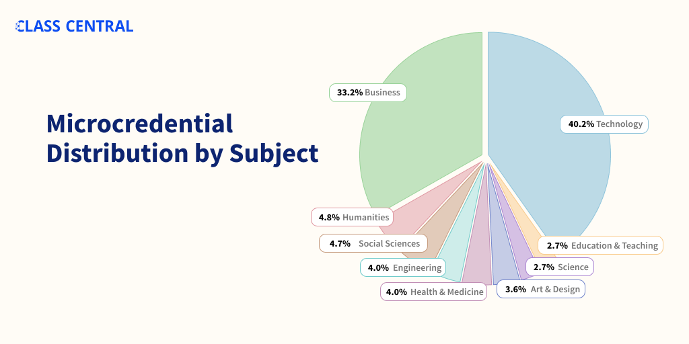

एमओओसी-आधारित माइक्रोक्रेडेंशियल्स की विशाल सूची
कोर्सेरा, एडएक्स, फ्यूचरलर्न और उडासिटी जैसे प्रदाताओं से 2500 माइक्रोक्रेडेंशियल्स।
माइक्रोक्रेडेंशियल्स मॉड्यूलरिटी और स्टैकबिलिटी की ओर उच्च शिक्षा प्रवृत्ति का हिस्सा हैं। वे छोटी, व्यक्तिगत सीखने की इकाइयों को व्यापक, एकजुट योग्यता में संयोजित करना शामिल करते हैं। उस अर्थ में, वे एकल पाठ्यक्रम और पूर्ण डिग्री के बीच की जगह में कहीं रहते हैं।
क्लास सेंट्रल 2013 से एमओओसी-आधारित माइक्रोक्रेडेंशियल्स का ट्रैक रख रहा है, जब एडएक्स ने पहला माइक्रोक्रेडेंशियल लॉन्च किया: एक्ससीरीज़। तब से, सभी प्रमुख प्रदाताओं ने अपने स्वयं के माइक्रोक्रेडेंशियल्स लॉन्च किए हैं, अक्सर उन्हें ट्रेडमार्क किया है।
उदाहरण के लिए, कोर्सेरा पाठ्यक्रमों को विशेषज्ञता, व्यावसायिक प्रमाणपत्र और मास्टरट्रैक जैसे सूक्ष्म क्रेडेंशियल्स में पैकेज करता है। और एडएक्स, पेशेवर प्रमाणपत्र, माइक्रोबेचाइलर्स, या माइक्रोमास्टर्स में।
2018 में, हम 450 माइक्रोक्रेडेंशियल्स का विश्लेषण किया और उनके बीच थोड़ी स्थिरता पाई। उनकी लागत और प्रयास अनुमान व्यापक रूप से भिन्न होते हैं। इसके अलावा, हमने पाया कि प्रत्येक माइक्रोक्रेडेंशियल प्रकार के भीतर उतनी ही परिवर्तनशीलता है जितनी कि विभिन्न प्रकारों में।
माइक्रोक्रेडेंशियल्स के बारे में प्रचार किसके पक्ष में थोड़ा कम हो गया है? ऑनलाइन डिग्री. लेकिन माइक्रोक्रेडेंशियल पेशकश में वृद्धि जारी है। 2021 के अंत तक, 1500+ माइक्रोक्रेडेंशियल्स. अब, 2022 में, 2500 माइक्रोक्रेडेंशियल्स हैं, जिनमें से कोर्सेरा की विशेषज्ञता लगभग एक तिहाई है।
एक वर्ग केंद्रीय विश्लेषण से पता चलता है कि ~ 75% माइक्रोक्रेडेंशियल्स व्यवसाय और प्रौद्योगिकी में हैं।

आप कक्षा सेंट्रल के कैटलॉग में माइक्रोक्रेडेंशियल्स पा सकते हैं जिस तरह से आप पाठ्यक्रम करते हैं। नीचे प्रदाता द्वारा तोड़े गए विभिन्न प्रकार के माइक्रोक्रेडेंशियल्स की एक सूची दी गई है। संबंधित अनुभाग में कूदने के लिए एक लिंक पर क्लिक करें।
| आज बाजार पर माइक्रोक्रेडेंशियल्स | |
| प्लेटफार्म | माइक्रोक्रेडेंशियल्स |
| कोर्सेरा | विशेषज्ञता, मास्टरट्रैक, व्यावसायिक प्रमाण पत्र |
| edX | XSeries, माइक्रोबेचाइलर्स, माइक्रोमास्टर्स, व्यावसायिक प्रमाण पत्र, व्यावसायिक शिक्षा |
| Udacity | नैनोडिग्री |
| FutureLearn | प्रोग्राम, ExpertTrack, माइक्रोक्रेडेंशियल |
| Kadenze | प्रोग्राम |
| LinkedIn Learning | पथ |
कोर्सेरा विशेषज्ञता (818)
- सभी के लिए पायथन मिशिगन ★★★★★ विश्वविद्यालय से (406)
- कम्प्यूटेशनल सामाजिक विज्ञान कैलिफोर्निया विश्वविद्यालय, डेविस ★★★★★ (105)
- MATLAB के साथ व्यावहारिक डेटा विज्ञान MathWorks ★★★★★ से (31)
- बिग डेटा कैलिफोर्निया विश्वविद्यालय, सैन डिएगो ★★ से
- डिजिटल मार्केटिंग अर्बाना-शैम्पेन में इलिनोइस विश्वविद्यालय से (11) ★★★★★
- डेटा विज्ञान जॉन्स हॉपकिंस विश्वविद्यालय ★★★★ से (10)
- कार्यकारी डेटा विज्ञान जॉन्स हॉपकिन्स विश्वविद्यालय ★★★★★ से (4)
- परियोजना प्रबंधन सिद्धांत और प्रथाएं कैलिफोर्निया विश्वविद्यालय, इरविन ★★★★ से (4)
- TESOL प्रमाणपत्र, भाग 1: अभी अंग्रेजी सिखाएं! एरिज़ोना स्टेट यूनिवर्सिटी ★★★★ से (4)
- सॉफ्टवेयर डिजाइन और वास्तुकला अल्बर्टा ★★★★★ विश्वविद्यालय से (4)
- उत्तरदायी वेबसाइट विकास और डिजाइन गोल्डस्मिथ्स, लंदन ★★★ विश्वविद्यालय से
- MySQL के लिए Excel: व्यवसाय के लिए विश्लेषणात्मक तकनीक ड्यूक विश्वविद्यालय ★★★ से (3)
- व्यापार नींव पेंसिल्वेनिया ★★★★ विश्वविद्यालय से (2)
- सार्वजनिक स्वास्थ्य में बायोस्टैटिस्टिक्स जॉन्स हॉपकिन्स विश्वविद्यालय ★★★★★ से (2)
- अकादमिक अंग्रेजी: लेखन कैलिफोर्निया विश्वविद्यालय, इरविन ★★ से
- अंग्रेजी सीखें: उन्नत व्याकरण और विराम चिह्न कैलिफोर्निया विश्वविद्यालय, इरविन ★★★★★ (2)
- फिनटेक: वित्त उद्योग परिवर्तन और विनियमन हांगकांग विज्ञान और प्रौद्योगिकी ★★★★★ विश्वविद्यालय से (2)
- साइबर सुरक्षा मैरीलैंड विश्वविद्यालय, कॉलेज पार्क ★★★★★ (2)
- कंप्यूटर सुरक्षा और सिस्टम प्रबंधन कोलोराडो विश्वविद्यालय प्रणाली ★★★★★ से (2)
- सार्वजनिक स्वास्थ्य के लिए महामारी विज्ञान इंपीरियल कॉलेज लंदन ★★★★★ से (2)
- ट्रेडिंग के लिए मशीन लर्निंग गूगल क्लाउड ★★★ से :(2)
- सिस्को नेटवर्किंग बेसिक्स सिस्को ★★★★★ से (2)
- वास्तविक दुनिया उत्पाद प्रबंधन टेक में महिलाओं को आगे बढ़ाने ★★★★★ से (2)
- स्वास्थ्य देखभाल कानून पेंसिल्वेनिया ★★★★ विश्वविद्यालय से (1)
- रोबोटिक्स पेंसिल्वेनिया ★ विश्वविद्यालय से
- पायथन 3 प्रोग्रामिंग मिशिगन ★★★ विश्वविद्यालय से :(1)
- शब्दों के साथ अच्छा: लेखन और संपादन मिशिगन ★★★★★ विश्वविद्यालय से (1)
- सार्वजनिक स्वास्थ्य अभ्यास में महामारी विज्ञान जॉन्स हॉपकिन्स विश्वविद्यालय ★★★★★ से (1)
- बीजगणित: प्राथमिक से उन्नत जॉन्स हॉपकिन्स विश्वविद्यालय ★★★★★ से (1)
- GPU प्रोग्रामिंग जॉन्स हॉपकिन्स विश्वविद्यालय ★★★★★ से (1)
- इंटरनेट ऑफ थिंग्स (आईओटी) की प्रोग्रामिंग का परिचय कैलिफोर्निया विश्वविद्यालय, इरविन ★★★★★ (1)
- वर्चुअल शिक्षक कैलिफोर्निया विश्वविद्यालय, इरविन ★★★★ से (1)
- कैरियर की सफलता कैलिफोर्निया विश्वविद्यालय, इरविन ★★★★ से (1)
- संघर्ष प्रबंधन कैलिफोर्निया विश्वविद्यालय, इरविन ★ से
- अपने डेटा विज्ञान वर्कफ़्लो के लिए झांकी का उपयोग करें कैलिफोर्निया विश्वविद्यालय, इरविन ★★ से
- जैव सूचना विज्ञान कैलिफोर्निया विश्वविद्यालय, सैन डिएगो ★★★★★ से (1)
- दवा विकास उत्पाद प्रबंधन कैलिफोर्निया विश्वविद्यालय, सैन डिएगो ★★★★ से (1)
- अपने अंग्रेजी संचार कौशल में सुधार जॉर्जिया इंस्टीट्यूट ऑफ टेक्नोलॉजी ★★★★★ से (1)
- मशीन लर्निंग वाशिंगटन ★ विश्वविद्यालय से
- डेटा माइनिंग अर्बाना-शैम्पेन में इलिनोइस विश्वविद्यालय से (1) ★★★★★
- रणनीतिक नेतृत्व और प्रबंधन अर्बाना-शैम्पेन में इलिनोइस विश्वविद्यालय से (1) ★★★★★
- स्विफ्ट के साथ आईओएस ऐप विकास टोरंटो ★★★★★ विश्वविद्यालय से (1)
- चुस्त विकास वर्जीनिया ★★★★ विश्वविद्यालय से (1)
- व्यापार रणनीति वर्जीनिया ★★★★★ विश्वविद्यालय से (1)
- चीन: कृषि और संस्कृति एरिज़ोना स्टेट यूनिवर्सिटी ★★★ से :(1)
- खोज इंजन अनुकूलन (एसईओ) कैलिफोर्निया विश्वविद्यालय, डेविस ★★★★★ (1)
- कार्यस्थल के लिए व्यावसायिक कौशल कैलिफोर्निया विश्वविद्यालय से, डेविस ★★ (1)
- फोटोग्राफी की मूल बातें और उससे आगे: स्मार्टफोन से डीएसएलआर तक मिशिगन स्टेट यूनिवर्सिटी ★★★★★ से (1)
- सामाजिक मीडिया विपणन नॉर्थवेस्टर्न यूनिवर्सिटी ★★★★★ से (1)
- कॉर्पोरेट वित्त की अनिवार्यताएं मेलबोर्न ★★★ विश्वविद्यालय से :(1)
- इंजीनियरिंग परियोजना प्रबंधन चावल विश्वविद्यालय ★★★★★ से (1)
- पायथन में स्क्रिप्टिंग का परिचय चावल विश्वविद्यालय ★★★★★ से (1)
- खेल डिजाइन: कला और अवधारणाएं कैलिफोर्निया इंस्टीट्यूट ऑफ आर्ट्स ★★★★ से (1)
- यूआई / यूएक्स डिजाइन कैलिफोर्निया इंस्टीट्यूट ऑफ आर्ट्स ★★★★★ से (1)
- मानव संसाधन प्रबंधन: लोगों के प्रबंधकों के लिए मानव संसाधन मिनेसोटा ★★★★★ विश्वविद्यालय से (1)
- निवेश प्रबंधन जिनेवा ★★★★ विश्वविद्यालय से (1)
- उद्यमिता: एक अभिनव व्यवसाय शुरू करना मैरीलैंड विश्वविद्यालय, कॉलेज पार्क ★★★★ से (1)
- प्रशामक देखभाल: यह अब सिर्फ धर्मशाला नहीं है कोलोराडो विश्वविद्यालय प्रणाली ★★★★★ से (1)
- कंप्यूटर नेटवर्क सुरक्षा के मूल सिद्धांत कोलोराडो विश्वविद्यालय प्रणाली ★★★ से :(1)
- गीत लेखन: संगीत लिखना, व्यवस्थित करना और निर्माण करना बर्कली कॉलेज ऑफ म्यूजिक ★★★★★ से (1)
- प्रबंधन परामर्श एमोरी विश्वविद्यालय ★★★ से (1)
- रणनीतिक व्यापार विश्लेषिकी ईएसएसईसी बिजनेस स्कूल ★★★★ से (1)
- डेटा विश्लेषण और व्याख्या वेस्लेयन विश्वविद्यालय ★★★★★ से (1)
- मशीन लर्निंग के लिए गणित इंपीरियल कॉलेज लंदन ★★★ से (1)
- सुदृढीकरण सीखना अल्बर्टा ★★★★★ विश्वविद्यालय से (1)
- Aprende a programar con Python Universidad Austral ★★★★ से (1)
- आपूर्ति श्रृंखला प्रबंधन रटगर्स विश्वविद्यालय ★ से
- साइबर सुरक्षा का परिचय न्यूयॉर्क विश्वविद्यालय (एनवाईयू) ★★★★★ से (1)
- रणनीतिक नेतृत्व: प्रभाव, परिवर्तन और निर्णय लेना डार्टमाउथ कॉलेज ★★★★★ से (1)
- सामरिक प्रबंधन और नवाचार कोपेनहेगन बिजनेस स्कूल ★★★★★ से (1)
- कंप्यूटर विज्ञान और प्रोग्रामिंग का परिचय गोल्डस्मिथ्स, लंदन ★★★★ विश्वविद्यालय से (1)
- एडब्ल्यूएस क्लाउड पर व्यावहारिक डेटा विज्ञान DeepLearning.AI ★★★★★ से (1)
- बिक्री संचालन / प्रबंधन वेस्ट वर्जीनिया विश्वविद्यालय ★★★★★ से (1)
- उच्च प्रदर्शन करने वाली टीमों के लिए बिक्री प्रशिक्षण HubSpot ★★★★★ से (1)
- इंजीनियरिंग और विज्ञान के लिए छवि प्रसंस्करण MathWorks ★★★★★ से (1)
- वास्तविक दुनिया क्लाउड उत्पाद प्रबंधन टेक में महिलाओं को आगे बढ़ाने ★★★★★ से (1)
- मशीन लर्निंग DeepLearning.AI से
- संभाव्य ग्राफिकल मॉडल स्टैनफोर्ड विश्वविद्यालय से
- एल्गोरिदम स्टैनफोर्ड विश्वविद्यालय से
- हेल्थकेयर में एआई स्टैनफोर्ड विश्वविद्यालय से
- प्रशामक देखभाल हमेशा स्टैनफोर्ड विश्वविद्यालय से
- खाद्य स्थिरता, सावधानीपूर्वक भोजन, और स्वस्थ खाना पकाने स्टैनफोर्ड विश्वविद्यालय से
- जावा में ऑब्जेक्ट ओरिएंटेड प्रोग्रामिंग ड्यूक विश्वविद्यालय से
- सकारात्मक मनोविज्ञान की नींव पेंसिल्वेनिया विश्वविद्यालय से
- 商务基础 (中文版) पेंसिल्वेनिया विश्वविद्यालय से
- Fundamentos Empresariales पेंसिल्वेनिया विश्वविद्यालय से
- विश्लेषकों के लिए वित्त और मात्रात्मक मॉडलिंग पेंसिल्वेनिया विश्वविद्यालय से
- संस्कृति-संचालित टीम निर्माण पेंसिल्वेनिया विश्वविद्यालय से
- फिनटेक: वित्तीय प्रौद्योगिकी की नींव और अनुप्रयोग पेंसिल्वेनिया विश्वविद्यालय से
- बौद्धिक संपदा कानून पेंसिल्वेनिया विश्वविद्यालय से
- व्यक्तिगत और व्यावसायिक सफलता प्राप्त करना पेंसिल्वेनिया विश्वविद्यालय से
- एक बेहतर दुनिया के लिए व्यापार रणनीतियाँ पेंसिल्वेनिया विश्वविद्यालय से
- नियामक अनुपालन पेंसिल्वेनिया विश्वविद्यालय से
- व्यापार और वित्तीय मॉडलिंग पेंसिल्वेनिया विश्वविद्यालय से
- स्वास्थ्य देखभाल का व्यवसाय पेंसिल्वेनिया विश्वविद्यालय से
- Business Analytics पेंसिल्वेनिया विश्वविद्यालय से
- उद्यमशीलता पेंसिल्वेनिया विश्वविद्यालय से
- वित्त और लेखा का परिचय पेंसिल्वेनिया विश्वविद्यालय से
- पायथन और जावा के साथ प्रोग्रामिंग का परिचय पेंसिल्वेनिया विश्वविद्यालय से
- ओमनीचैनल रिटेल रणनीति पेंसिल्वेनिया विश्वविद्यालय से
- ईएसजी कारकों की भौतिकता पेंसिल्वेनिया विश्वविद्यालय से
- व्यवसाय के लिए एआई पेंसिल्वेनिया विश्वविद्यालय से
- डेटा संरचनाएं और एल्गोरिदम उच्च विद्यालय के अर्थशास्त्र से
- वित्तीय प्रौद्योगिकी (फिनटेक) नवाचार मिशिगन विश्वविद्यालय से
- अग्रणी लोग और टीमें मिशिगन विश्वविद्यालय से
- शरीर रचना विज्ञान मिशिगन विश्वविद्यालय से
- सभी के लिए वेब अनुप्रयोग मिशिगन विश्वविद्यालय से
- पायथन के साथ आंकड़े मिशिगन विश्वविद्यालय से
- हर किसी के लिए वेब डिजाइन: वेब विकास और कोडिंग की मूल बातें मिशिगन विश्वविद्यालय से
- रणनीतिक निर्णय लेने के लिए मूलभूत वित्त मिशिगन विश्वविद्यालय से
- उपयोगकर्ता अनुभव अनुसंधान और डिजाइन मिशिगन विश्वविद्यालय से
- पायथन के साथ एप्लाइड डेटा साइंस मिशिगन विश्वविद्यालय से
- सभी के लिए Django मिशिगन विश्वविद्यालय से
- हर किसी के लिए विस्तारित वास्तविकता मिशिगन विश्वविद्यालय से
- स्वास्थ्य पर सामाजिक निर्धारकों का प्रभाव मिशिगन विश्वविद्यालय से
- PostgreSQL सभी के लिए मिशिगन विश्वविद्यालय से
- पियानो साहित्य की खोज: पियानो सोनाटा मिशिगन विश्वविद्यालय से
- खेल प्रदर्शन विश्लेषिकी मिशिगन विश्वविद्यालय से
- वैश्विक सार्वजनिक स्वास्थ्य पर पर्यावरण का प्रभाव मिशिगन विश्वविद्यालय से
- ट्रांसलेशनल साइंस मिशिगन विश्वविद्यालय से
- डिजिटल प्रौद्योगिकियां और विनिर्माण का भविष्य मिशिगन विश्वविद्यालय से
- हेल्थकेयर में नस्लीय स्वास्थ्य असमानता को संबोधित करना मिशिगन विश्वविद्यालय से
- शब्दों के साथ अच्छा: बोलना और प्रस्तुत करना मिशिगन विश्वविद्यालय से
- कुल डेटा गुणवत्ता मिशिगन विश्वविद्यालय से
- आर के साथ सार्वजनिक क्षेत्र में डेटा एनालिटिक्स मिशिगन विश्वविद्यालय से
- रेल वेब विकास पर रूबी जॉन्स हॉपकिंस विश्वविद्यालय से
- रोगी की सुरक्षा जॉन्स हॉपकिंस विश्वविद्यालय से
- स्वास्थ्य सूचना विज्ञान जॉन्स हॉपकिंस विश्वविद्यालय से
- R में सॉफ्टवेयर विकास में महारत हासिल करना जॉन्स हॉपकिंस विश्वविद्यालय से
- जीनोमिक डेटा विज्ञान जॉन्स हॉपकिंस विश्वविद्यालय से
- डेटा विज्ञान: आर का उपयोग करने वाली नींव जॉन्स हॉपकिंस विश्वविद्यालय से
- वैश्विक स्वास्थ्य की नींव जॉन्स हॉपकिंस विश्वविद्यालय से
- डेटा विज्ञान: सांख्यिकी और मशीन लर्निंग जॉन्स हॉपकिंस विश्वविद्यालय से
- तंत्रिका विज्ञान और न्यूरोइमेजिंग जॉन्स हॉपकिंस विश्वविद्यालय से
- डेटा विज्ञान के लिए उन्नत सांख्यिकी जॉन्स हॉपकिंस विश्वविद्यालय से
- डेटा और मॉडलिंग के माध्यम से प्रीकैलकुलस जॉन्स हॉपकिंस विश्वविद्यालय से
- डेटा साक्षरता जॉन्स हॉपकिंस विश्वविद्यालय से
- R के साथ डेटा विज़ुअलाइज़ेशन और डैशबोर्डिंग जॉन्स हॉपकिंस विश्वविद्यालय से
- हेल्थकेयर आईटी समर्थन जॉन्स हॉपकिंस विश्वविद्यालय से
- R में डेटा विज्ञान के लिए सुव्यवस्थित कौशल जॉन्स हॉपकिंस विश्वविद्यालय से
- डेटा और मॉडलिंग के माध्यम से विभेदक कैलकुलस जॉन्स हॉपकिंस विश्वविद्यालय से
- डेटा और मॉडलिंग के माध्यम से इंटीग्रल कैलकुलस जॉन्स हॉपकिंस विश्वविद्यालय से
- लेखन सिखाना जॉन्स हॉपकिंस विश्वविद्यालय से
- कैंसर जीवविज्ञान जॉन्स हॉपकिंस विश्वविद्यालय से
- रचनात्मक उद्यमियों के लिए आईओएस विकास कैलिफोर्निया विश्वविद्यालय, इरविन से
- कैरियर विकास के लिए परियोजना प्रबंधन और अन्य उपकरण कैलिफोर्निया विश्वविद्यालय, इरविन से
- अंग्रेजी सिखाएं: इंटरमीडिएट व्याकरण कैलिफोर्निया विश्वविद्यालय, इरविन से
- अंग्रेजी सीखें: उन्नत अकादमिक बोलना और सुनना कैलिफोर्निया विश्वविद्यालय, इरविन से
- Éxito Profesional कैलिफोर्निया विश्वविद्यालय, इरविन से
- Google Go के साथ प्रोग्रामिंग कैलिफोर्निया विश्वविद्यालय, इरविन से
- Esports कैलिफोर्निया विश्वविद्यालय, इरविन से
- यूसीआई परियोजना प्रबंधन कैलिफोर्निया विश्वविद्यालय, इरविन से
- अंग्रेजी सीखें: मध्यवर्ती व्याकरण कैलिफोर्निया विश्वविद्यालय, इरविन से
- Blockchain कैलिफोर्निया विश्वविद्यालय, इरविन से
- अमेरिकी अंग्रेजी का उच्चारण कैलिफोर्निया विश्वविद्यालय, इरविन से
- डेटा साइंस के मूल सिद्धांत कैलिफोर्निया विश्वविद्यालय, इरविन से
- Salesforce फंडामेंटल्स कैलिफोर्निया विश्वविद्यालय, इरविन से
- ई-मार्केटिंग कैलिफोर्निया विश्वविद्यालय, इरविन से
- साइबर सुरक्षा और जोखिम प्रबंधन का परिचय कैलिफोर्निया विश्वविद्यालय, इरविन से
- वित्तीय लेखांकन का परिचय: लेखा चक्र कैलिफोर्निया विश्वविद्यालय, इरविन से
- आईईएलटीएस की तैयारी कैलिफोर्निया विश्वविद्यालय, इरविन से
- TOEFL की तैयारी कैलिफोर्निया विश्वविद्यालय, इरविन से
- अंग्रेजी सीखें: व्याकरण शुरू करना कैलिफोर्निया विश्वविद्यालय, इरविन से
- व्यापार का परिचय कैलिफोर्निया विश्वविद्यालय, इरविन से
- विश्वविद्यालय की सफलता के लिए आवश्यक अंग्रेजी कैलिफोर्निया विश्वविद्यालय, इरविन से
- अंग्रेजी सीखें: जटिल वाक्यों के साथ प्रभावी ढंग से लिखना कैलिफोर्निया विश्वविद्यालय, इरविन से
- डेटाबेस डिजाइन और परिचालन व्यापार खुफिया कैलिफोर्निया विश्वविद्यालय, इरविन से
- व्यापार पेशेवरों के लिए आवश्यक अंग्रेजी कैलिफोर्निया विश्वविद्यालय, इरविन से
- कंप्यूटर सूचना प्रणाली का परिचय कैलिफोर्निया विश्वविद्यालय, इरविन से
- ब्रह्मांड की यात्रा: हमारे समय के लिए एक कहानी येल विश्वविद्यालय से
- जलवायु परिवर्तन और स्वास्थ्य: विज्ञान से कार्रवाई तक येल विश्वविद्यालय से
- धर्म और पारिस्थितिकी: पृथ्वी समुदाय को बहाल करना येल विश्वविद्यालय से
- निर्माण प्रबंधन कोलंबिया विश्वविद्यालय से
- सामाजिक सेवाओं और स्वास्थ्य चिकित्सकों के लिए सामाजिक नीति कोलंबिया विश्वविद्यालय से
- कंप्यूटर दृष्टि के पहले सिद्धांत कोलंबिया विश्वविद्यालय से
- वित्तीय इंजीनियरिंग और जोखिम प्रबंधन कोलंबिया विश्वविद्यालय से
- इंटरनेट ऑफ थिंग्स और एआई क्लाउड कैलिफोर्निया विश्वविद्यालय, सैन डिएगो से
- ऑब्जेक्ट ओरिएंटेड जावा प्रोग्रामिंग: डेटा संरचनाएं और उससे परे कैलिफोर्निया विश्वविद्यालय, सैन डिएगो से
- कंप्यूटर विज्ञान के लिए असतत गणित का परिचय कैलिफोर्निया विश्वविद्यालय, सैन डिएगो से
- के -12 शिक्षा में कम्प्यूटेशनल थिंकिंग एंड ब्लॉक प्रोग्रामिंग कैलिफोर्निया विश्वविद्यालय, सैन डिएगो से
- इंटरैक्शन डिजाइन कैलिफोर्निया विश्वविद्यालय, सैन डिएगो से
- प्रीडिक्टिव एनालिटिक्स के लिए पायथन डेटा उत्पाद कैलिफोर्निया विश्वविद्यालय, सैन डिएगो से
- के -12 शिक्षा में प्रौद्योगिकी के शिक्षण प्रभाव कैलिफोर्निया विश्वविद्यालय, सैन डिएगो से
- जावा सिखाना सीखें कैलिफोर्निया विश्वविद्यालय, सैन डिएगो से
- परिचयात्मक सी प्रोग्रामिंग ड्यूक विश्वविद्यालय से
- जावा प्रोग्रामिंग और सॉफ्टवेयर इंजीनियरिंग फंडामेंटल्स ड्यूक विश्वविद्यालय से
- उद्यमी वित्त: रणनीति और नवाचार ड्यूक विश्वविद्यालय से
- R के साथ आंकड़े ड्यूक विश्वविद्यालय से
- तर्क और आलोचनात्मक सोच का परिचय ड्यूक विश्वविद्यालय से
- स्केल पर क्लाउड कंप्यूटिंग समाधान का निर्माण ड्यूक विश्वविद्यालय से
- एआई उत्पाद प्रबंधन ड्यूक विश्वविद्यालय से
- R के साथ डेटा विश्लेषण ड्यूक विश्वविद्यालय से
- डेटा इंजीनियरिंग के लिए पायथन, बैश और एसक्यूएल एसेंशियल्स ड्यूक विश्वविद्यालय से
- विकेंद्रीकृत वित्त (डीईएफआई): वित्त का भविष्य ड्यूक विश्वविद्यालय से
- क्लाउड कंप्यूटिंग में सिस्टम समस्याएं जॉर्जिया इंस्टीट्यूट ऑफ टेक्नोलॉजी से
- व्यापार अंग्रेजी संचार कौशल वाशिंगटन विश्वविद्यालय से
- पैमाने पर डेटा विज्ञान वाशिंगटन विश्वविद्यालय से
- गतिशील सार्वजनिक बोलना वाशिंगटन विश्वविद्यालय से
- प्रबंधकीय अर्थशास्त्र और व्यापार विश्लेषण अर्बाना-शैम्पेन में इलिनोइस विश्वविद्यालय से
- वित्तीय रिपोर्टिंग अर्बाना-शैम्पेन में इलिनोइस विश्वविद्यालय से
- पेशेवर आईक्यू: काम पर समस्याओं को रोकना और हल करना अर्बाना-शैम्पेन में इलिनोइस विश्वविद्यालय से
- वित्तीय प्रबंधन अर्बाना-शैम्पेन में इलिनोइस विश्वविद्यालय से
- त्वरित कंप्यूटर विज्ञान के मूल सिद्धांत अर्बाना-शैम्पेन में इलिनोइस विश्वविद्यालय से
- लेखांकन के मूल सिद्धांत अर्बाना-शैम्पेन में इलिनोइस विश्वविद्यालय से
- अमेरिकी संघीय कराधान अर्बाना-शैम्पेन में इलिनोइस विश्वविद्यालय से
- क्लाउड कम्प्यूटिंग अर्बाना-शैम्पेन में इलिनोइस विश्वविद्यालय से
- व्यापार में वैश्विक चुनौतियां अर्बाना-शैम्पेन में इलिनोइस विश्वविद्यालय से
- नवाचार: रचनात्मकता से उद्यमिता तक अर्बाना-शैम्पेन में इलिनोइस विश्वविद्यालय से
- मूल्य श्रृंखला प्रबंधन अर्बाना-शैम्पेन में इलिनोइस विश्वविद्यालय से
- Accounting Data Analytics अर्बाना-शैम्पेन में इलिनोइस विश्वविद्यालय से
- बिजनेस एनालिटिक्स और सूचना अर्थशास्त्र का परिचय अर्बाना-शैम्पेन में इलिनोइस विश्वविद्यालय से
- हैंड्स-ऑन इंटरनेट ऑफ थिंग्स अर्बाना-शैम्पेन में इलिनोइस विश्वविद्यालय से
- 3 डी प्रिंटिंग और एडिटिव मैन्युफैक्चरिंग अर्बाना-शैम्पेन में इलिनोइस विश्वविद्यालय से
- व्यवसाय मूल्य और परियोजना प्रबंधन अर्बाना-शैम्पेन में इलिनोइस विश्वविद्यालय से
- पेशेवर सफलता कौशल अर्बाना-शैम्पेन में इलिनोइस विश्वविद्यालय से
- व्यवसाय डेटा प्रबंधन और संचार अर्बाना-शैम्पेन में इलिनोइस विश्वविद्यालय से
- स्वास्थ्य देखभाल के लिए गहरी शिक्षा अर्बाना-शैम्पेन में इलिनोइस विश्वविद्यालय से
- Business Analytics अर्बाना-शैम्पेन में इलिनोइस विश्वविद्यालय से
- सामरिक प्रौद्योगिकी प्रबंधन अर्बाना-शैम्पेन में इलिनोइस विश्वविद्यालय से
- डेटा-संचालित निर्णय लेना (DDDM) बफ़ेलो विश्वविद्यालय से
- गैर-लाभकारी संगठनों में नेतृत्व और शासन में सुधार स्टेट यूनिवर्सिटी ऑफ न्यूयॉर्क से
- एप्लाइड डिजिटल साक्षरता स्टेट यूनिवर्सिटी ऑफ न्यूयॉर्क से
- जीआईएस, मैपिंग और स्थानिक विश्लेषण टोरंटो विश्वविद्यालय से
- प्लांट बायोइन्फॉर्मेटिक्स मेथड्स टोरंटो विश्वविद्यालय से
- स्व-ड्राइविंग कारें टोरंटो विश्वविद्यालय से
- लिंग विश्लेषिकी: समावेशी डिजाइन के माध्यम से लिंग इक्विटी टोरंटो विश्वविद्यालय से
- आईबीएम और डार्डन डिजिटल रणनीति वर्जीनिया विश्वविद्यालय से
- मूल्य निर्धारण रणनीति अनुकूलन वर्जीनिया विश्वविद्यालय से
- डिजाइनरों, प्रबंधकों और उद्यमियों के लिए कोडिंग वर्जीनिया विश्वविद्यालय से
- चुस्त विकास वर्जीनिया विश्वविद्यालय से
- डिजिटल उत्पाद प्रबंधन वर्जीनिया विश्वविद्यालय से
- उद्यमिता: अपने व्यवसाय को बढ़ाना वर्जीनिया विश्वविद्यालय से
- Inglés Empresarial एरिज़ोना स्टेट यूनिवर्सिटी से
- TESOL प्रमाणपत्र, भाग 2: अभी अंग्रेजी सिखाएं! एरिज़ोना स्टेट यूनिवर्सिटी से
- 商务英语课程 Business English एरिज़ोना स्टेट यूनिवर्सिटी से
- सामग्री कक्षा में ईएलएल सफलता: शिक्षक टूलबॉक्स श्रृंखला एरिज़ोना स्टेट यूनिवर्सिटी से
- व्यवसाय अंग्रेजी एरिज़ोना स्टेट यूनिवर्सिटी से
- प्रयोगों का डिजाइन एरिज़ोना स्टेट यूनिवर्सिटी से
- बाजार अनुसंधान कैलिफोर्निया विश्वविद्यालय, डेविस से
- स्पेनिश सीखें: मूल स्पेनिश शब्दावली कैलिफोर्निया विश्वविद्यालय, डेविस से
- डेटा विज्ञान के लिए SQL Basics जानें कैलिफोर्निया विश्वविद्यालय, डेविस से
- सुरक्षित कोडिंग प्रथाएं कैलिफोर्निया विश्वविद्यालय, डेविस से
- प्रबंधकों के लिए कोचिंग कौशल कैलिफोर्निया विश्वविद्यालय, डेविस से
- डेटा विश्लेषिकी के लिए स्वास्थ्य सूचना साक्षरता कैलिफोर्निया विश्वविद्यालय, डेविस से
- भौगोलिक सूचना प्रणाली (जीआईएस) कैलिफोर्निया विश्वविद्यालय, डेविस से
- धन उगाही और विकास कैलिफोर्निया विश्वविद्यालय, डेविस से
- झांकी के साथ डेटा विज़ुअलाइज़ेशन कैलिफोर्निया विश्वविद्यालय, डेविस से
- शुरुआती लोगों के लिए जावास्क्रिप्ट कैलिफोर्निया विश्वविद्यालय, डेविस से
- बहुराष्ट्रीय और क्रॉस-सांस्कृतिक टीमों का प्रबंधन कैलिफोर्निया विश्वविद्यालय, डेविस से
- खेलों के लिए कला मिशिगन स्टेट यूनिवर्सिटी से
- अपना खुद का व्यवसाय कैसे शुरू करें मिशिगन स्टेट यूनिवर्सिटी से
- खेल डिजाइन और विकास मिशिगन स्टेट यूनिवर्सिटी से
- एक पत्रकार बनें: समाचार की रिपोर्ट करें! मिशिगन स्टेट यूनिवर्सिटी से
- एकता 2020 के साथ खेल डिजाइन और विकास मिशिगन स्टेट यूनिवर्सिटी से
- संगठनात्मक नेतृत्व नॉर्थवेस्टर्न यूनिवर्सिटी से
- आधुनिक रोबोटिक्स: यांत्रिकी, योजना और नियंत्रण नॉर्थवेस्टर्न यूनिवर्सिटी से
- बिक्री की कला: बिक्री प्रक्रिया में महारत हासिल करना नॉर्थवेस्टर्न यूनिवर्सिटी से
- पेशेवरों के लिए सामग्री रणनीति नॉर्थवेस्टर्न यूनिवर्सिटी से
- प्रमुख इंजीनियरिंग परियोजनाओं का प्रबंधन लीड्स विश्वविद्यालय से
- निवेश और पोर्टफोलियो प्रबंधन चावल विश्वविद्यालय से
- व्यापार सांख्यिकी और विश्लेषण चावल विश्वविद्यालय से
- इम्यूनोलॉजी के मूल सिद्धांत चावल विश्वविद्यालय से
- इंजीनियरों के लिए नेतृत्व विकास चावल विश्वविद्यालय से
- इंजीनियरों के लिए संचार कौशल चावल विश्वविद्यालय से
- कम्प्यूटिंग के मूल सिद्धांत चावल विश्वविद्यालय से
- जावा में समानांतर, समवर्ती और वितरित प्रोग्रामिंग चावल विश्वविद्यालय से
- यांत्रिकी का परिचय चावल विश्वविद्यालय से
- इम्यूनोलॉजी के मूल सिद्धांत चावल विश्वविद्यालय से
- बिजली और चुंबकत्व का परिचय चावल विश्वविद्यालय से
- विविधता, इक्विटी और समावेश में संगठनात्मक नेतृत्व चावल विश्वविद्यालय से
- चिकित्सा शब्दावली चावल विश्वविद्यालय से
- माइंडफुलनेस और भलाई चावल विश्वविद्यालय से
- 程序设计与算法 पेकिंग विश्वविद्यालय से
- चीनी सीखें: एचएसके टेस्ट की तैयारी पेकिंग विश्वविद्यालय से
- ग्राफिक डिजाइन कैलिफोर्निया इंस्टीट्यूट ऑफ आर्ट्स से
- अपने फ्रीलांसिंग कैरियर का निर्माण कैलिफोर्निया इंस्टीट्यूट ऑफ आर्ट्स से
- सॉफ्टवेयर विकास जीवनचक्र मिनेसोटा विश्वविद्यालय से
- एकीकृत स्वास्थ्य और चिकित्सा मिनेसोटा विश्वविद्यालय से
- Recommender सिस्टम मिनेसोटा विश्वविद्यालय से
- सूचना प्रणाली मिनेसोटा विश्वविद्यालय से
- उपयोगकर्ता इंटरफ़ेस डिजाइन मिनेसोटा विश्वविद्यालय से
- नर्सिंग सूचना विज्ञान नेतृत्व मिनेसोटा विश्वविद्यालय से
- हेल्थकेयर मार्केटप्लेस मिनेसोटा विश्वविद्यालय से
- सॉफ्टवेयर परीक्षण और स्वचालन मिनेसोटा विश्वविद्यालय से
- एकीकृत नर्सिंग मिनेसोटा विश्वविद्यालय से
- क्लाउड में साइबर सुरक्षा मिनेसोटा विश्वविद्यालय से
- उपयोगकर्ता इंटरफ़ेस डिजाइन मिनेसोटा विश्वविद्यालय से
- निर्णय लेने के लिए विश्लेषिकी मिनेसोटा विश्वविद्यालय से
- स्वास्थ्य के सामाजिक निर्धारक: कार्रवाई के लिए डेटा मिनेसोटा विश्वविद्यालय से
- पूर्ण स्टैक वेब और मल्टीप्लेटफॉर्म मोबाइल ऐप विकास हांगकांग विज्ञान और प्रौद्योगिकी विश्वविद्यालय से
- गैर-देशी वक्ताओं के लिए व्यावसायिक अंग्रेजी हांगकांग विज्ञान और प्रौद्योगिकी विश्वविद्यालय से
- प्रतिक्रिया के साथ पूर्ण-स्टैक वेब विकास हांगकांग विज्ञान और प्रौद्योगिकी विश्वविद्यालय से
- Angular के साथ पूर्ण स्टैक वेब विकास हांगकांग विज्ञान और प्रौद्योगिकी विश्वविद्यालय से
- व्यापार नवाचार की रक्षा हांगकांग विज्ञान और प्रौद्योगिकी विश्वविद्यालय से
- इंजीनियरों के लिए गणित हांगकांग विज्ञान और प्रौद्योगिकी विश्वविद्यालय से
- सॉफ्टवेयर इंजीनियरिंग हांगकांग विज्ञान और प्रौद्योगिकी विश्वविद्यालय से
- Android अनुप्रयोग विकास वेंडरबिल्ट विश्वविद्यालय से
- इंजीनियरों और वैज्ञानिकों के लिए MATLAB प्रोग्रामिंग वेंडरबिल्ट विश्वविद्यालय से
- साक्षात्कार और अंग्रेजी में लेखन फिर से शुरू करें मैरीलैंड विश्वविद्यालय, कॉलेज पार्क से
- सर्वेक्षण डेटा संग्रह और विश्लेषिकी मैरीलैंड विश्वविद्यालय, कॉलेज पार्क से
- कॉर्पोरेट उद्यमिता: निगमों के भीतर नवाचार मैरीलैंड विश्वविद्यालय, कॉलेज पार्क से
- उत्पाद आइडिएशन, डिजाइन और प्रबंधन मैरीलैंड विश्वविद्यालय, कॉलेज पार्क से
- उद्यमिता के कानूनी पहलू मैरीलैंड विश्वविद्यालय, कॉलेज पार्क से
- शिक्षक और सामाजिक और भावनात्मक शिक्षा (एसईएल) कोलोराडो बोल्डर विश्वविद्यालय से
- औद्योगिक इंटरनेट ऑफ थिंग्स का विकास कोलोराडो बोल्डर विश्वविद्यालय से
- अर्धचालक उपकरण कोलोराडो बोल्डर विश्वविद्यालय से
- पावर इलेक्ट्रॉनिक्स कोलोराडो बोल्डर विश्वविद्यालय से
- उन्नत व्यवसाय विश्लेषिकी कोलोराडो बोल्डर विश्वविद्यालय से
- ऑप्टिकल इंजीनियरिंग कोलोराडो बोल्डर विश्वविद्यालय से
- सक्रिय ऑप्टिकल डिवाइस कोलोराडो बोल्डर विश्वविद्यालय से
- मेडिकल कैनबिस: टीएचसी और सीबीडी के स्वास्थ्य प्रभाव कोलोराडो बोल्डर विश्वविद्यालय से
- अंतरिक्ष यान गतिशीलता और नियंत्रण कोलोराडो बोल्डर विश्वविद्यालय से
- मन और मशीन कोलोराडो बोल्डर विश्वविद्यालय से
- सांख्यिकीय ऊष्मप्रवैगिकी कोलोराडो बोल्डर विश्वविद्यालय से
- क्रिएटिव समस्या समाधान के लिए एक्सेल / वीबीए कोलोराडो बोल्डर विश्वविद्यालय से
- डिजिटल विज्ञापन रणनीति कोलोराडो बोल्डर विश्वविद्यालय से
- सतत सामुदायिक परिवर्तन का नेतृत्व करना कोलोराडो बोल्डर विश्वविद्यालय से
- गैर-डिजाइनरों के लिए ग्राफिक डिजाइन तत्व कोलोराडो बोल्डर विश्वविद्यालय से
- सेंसर और मोटर एम्बेड करना कोलोराडो बोल्डर विश्वविद्यालय से
- प्रभावी संचार: लेखन, डिजाइन और प्रस्तुति कोलोराडो बोल्डर विश्वविद्यालय से
- जीव विज्ञान हर जगह कोलोराडो बोल्डर विश्वविद्यालय से
- पावर इलेक्ट्रॉनिक्स कोलोराडो बोल्डर विश्वविद्यालय से
- एम्बेडेड सिस्टम के लिए एफपीजीए डिजाइन कोलोराडो बोल्डर विश्वविद्यालय से
- पशु और समाज कोलोराडो बोल्डर विश्वविद्यालय से
- आर्कटिक जलवायु, पर्यावरण। और बदलते उत्तर के भौगोलिक क्षेत्र कोलोराडो बोल्डर विश्वविद्यालय से
- जलवायु परिवर्तन के लिए हमारी प्रतिक्रियाओं की खोज कोलोराडो बोल्डर विश्वविद्यालय से
- रीयल-टाइम एम्बेडेड सिस्टम कोलोराडो बोल्डर विश्वविद्यालय से
- पावर इलेक्ट्रॉनिक्स का मॉडलिंग और नियंत्रण कोलोराडो बोल्डर विश्वविद्यालय से
- एम्बेडेड इंटरफ़ेस डिज़ाइन कोलोराडो बोल्डर विश्वविद्यालय से
- अंतर्राष्ट्रीय व्यापार कोलोराडो बोल्डर विश्वविद्यालय से
- हर दिन एक्सेल कोलोराडो बोल्डर विश्वविद्यालय से
- दूसरों की देखभाल करना कोलोराडो बोल्डर विश्वविद्यालय से
- डिजिटल युग में फैनडम और लोकप्रिय संस्कृति कोलोराडो बोल्डर विश्वविद्यालय से
- डेटा विज्ञान के लिए महत्वपूर्ण कौशल कोलोराडो बोल्डर विश्वविद्यालय से
- डेटा साइंस फाउंडेशन: डेटा संरचनाएं और एल्गोरिदम कोलोराडो बोल्डर विश्वविद्यालय से
- डेटा विज्ञान अनुप्रयोगों के लिए सांख्यिकीय मॉडलिंग कोलोराडो बोल्डर विश्वविद्यालय से
- नवीकरणीय ऊर्जा कोलोराडो बोल्डर विश्वविद्यालय से
- इंजीनियरों के लिए क्वांटम यांत्रिकी कोलोराडो बोल्डर विश्वविद्यालय से
- एक्सप्रेसवे से डेटा साइंस: आवश्यक गणित कोलोराडो बोल्डर विश्वविद्यालय से
- मशीन लर्निंग: पायथन के साथ सिद्धांत और हैंड्स-ऑन अभ्यास कोलोराडो बोल्डर विश्वविद्यालय से
- डेटा खनन नींव और अभ्यास कोलोराडो बोल्डर विश्वविद्यालय से
- डेटा वैज्ञानिकों के लिए डेटाबेस कोलोराडो बोल्डर विश्वविद्यालय से
- उन्नत अंतरिक्ष यान गतिशीलता और नियंत्रण कोलोराडो बोल्डर विश्वविद्यालय से
- गुणवत्ता सुधार के लिए डेटा विज्ञान के तरीके कोलोराडो बोल्डर विश्वविद्यालय से
- जनसंपर्क और मीडिया का परिचय कोलोराडो बोल्डर विश्वविद्यालय से
- डेटा विज्ञान नींव: सांख्यिकीय अनुमान कोलोराडो बोल्डर विश्वविद्यालय से
- टेक्स्ट मार्केटिंग Analytics कोलोराडो बोल्डर विश्वविद्यालय से
- संगीतकार का व्यावसायिक टूलबॉक्स: आपका पोर्टफोलियो कैरियर कोलोराडो बोल्डर विश्वविद्यालय से
- नस्लवाद विरोधी कोलोराडो बोल्डर विश्वविद्यालय से
- एक्सप्रेसवे टू डेटा साइंस: आर प्रोग्रामिंग और टिडीवर्स कोलोराडो बोल्डर विश्वविद्यालय से
- तकनीकी प्रबंधकों के लिए वित्त कोलोराडो बोल्डर विश्वविद्यालय से
- परियोजना प्रबन्धन कोलोराडो बोल्डर विश्वविद्यालय से
- नेतृत्व के सिद्धांत: स्वयं का नेतृत्व करना कोलोराडो बोल्डर विश्वविद्यालय से
- एक्सप्रेसवे से डेटा साइंस: पायथन प्रोग्रामिंग कोलोराडो बोल्डर विश्वविद्यालय से
- Globalización, Crecimiento Económico y Estabilidad आईई बिजनेस स्कूल से
- वैश्वीकरण, आर्थिक विकास और स्थिरता आईई बिजनेस स्कूल से
- विपणन मिश्रण कार्यान्वयन आईई बिजनेस स्कूल से
- Implementación del Marketing Mix आईई बिजनेस स्कूल से
- विपणन के बारे में आईई बिजनेस स्कूल से
- ब्रांडिंग: रचनात्मक यात्रा आईई बिजनेस स्कूल से
- विपणन रणनीति आईई बिजनेस स्कूल से
- अपने स्टार्टअप को स्केल करें आईई बिजनेस स्कूल से
- विविधता, समावेश और अपनेपन की यात्रा आईई बिजनेस स्कूल से
- बच्चों और किशोरों के लिए स्कूल स्वास्थ्य कोलोराडो विश्वविद्यालय प्रणाली से
- आवश्यकताएं इंजीनियरिंग: सुरक्षित सॉफ्टवेयर विनिर्देश कोलोराडो विश्वविद्यालय प्रणाली से
- नवजात शिशु की देखभाल कोलोराडो विश्वविद्यालय प्रणाली से
- एक EMT बनें कोलोराडो विश्वविद्यालय प्रणाली से
- एक स्थायी व्यापार परिवर्तन एजेंट बनें कोलोराडो विश्वविद्यालय प्रणाली से
- उन्नत सिस्टम सुरक्षा डिजाइन कोलोराडो विश्वविद्यालय प्रणाली से
- व्यापार के लिए साइबर सुरक्षा कोलोराडो विश्वविद्यालय प्रणाली से
- कंप्यूटर संचार कोलोराडो विश्वविद्यालय प्रणाली से
- सी प्रोग्रामिंग की शुरुआत के साथ कम्प्यूटेशनल सोच कोलोराडो विश्वविद्यालय प्रणाली से
- बैटरी प्रबंधन प्रणालियों के लिए एल्गोरिदम कोलोराडो विश्वविद्यालय प्रणाली से
- सुरक्षित सॉफ्टवेयर डिजाइन कोलोराडो विश्वविद्यालय प्रणाली से
- नैदानिक डेटा विज्ञान कोलोराडो विश्वविद्यालय प्रणाली से
- एप्लाइड क्रिप्टोग्राफी का परिचय कोलोराडो विश्वविद्यालय प्रणाली से
- सी # एकता खेल विकास के लिए प्रोग्रामिंग कोलोराडो विश्वविद्यालय प्रणाली से
- एप्लाइड क्रिप्टोग्राफी कोलोराडो विश्वविद्यालय प्रणाली से
- होमलैंड सुरक्षा और साइबर सुरक्षा कोलोराडो विश्वविद्यालय प्रणाली से
- बिजनेस इंटेलिजेंस के लिए डेटा वेयरहाउसिंग कोलोराडो विश्वविद्यालय प्रणाली से
- सी # एकता खेल विकास के लिए प्रोग्रामिंग कोलोराडो विश्वविद्यालय प्रणाली से
- चुस्त नेतृत्व कोलोराडो विश्वविद्यालय प्रणाली से
- अवास्तविक खेल विकास के लिए सी ++ प्रोग्रामिंग कोलोराडो विश्वविद्यालय प्रणाली से
- Scala में कार्यात्मक प्रोग्रामिंग से एकोल पॉलीटेक्नीक फेडेरेल डी लॉज़ेन
- डिजिटल सिग्नल प्रोसेसिंग से एकोल पॉलीटेक्नीक फेडेरेल डी लॉज़ेन
- इलेक्ट्रॉनिक संगीत उत्पादन बर्कली कॉलेज ऑफ म्यूजिक से
- DIY संगीतकार बर्कली कॉलेज ऑफ म्यूजिक से
- संगीत व्यवसाय बर्कली कॉलेज ऑफ म्यूजिक से
- O Músico Contemporâneo बर्कली कॉलेज ऑफ म्यूजिक से
- अपने संगीत का विकास बर्कली कॉलेज ऑफ म्यूजिक से
- संगीत उत्पादन का व्यवसाय बर्कली कॉलेज ऑफ म्यूजिक से
- El Músico Moderno बर्कली कॉलेज ऑफ म्यूजिक से
- संगीत उत्पादन बर्कली कॉलेज ऑफ म्यूजिक से
- इलेक्ट्रॉनिक संगीत उत्पादन बर्कली कॉलेज ऑफ म्यूजिक से
- गायक गीतकार बर्कली कॉलेज ऑफ म्यूजिक से
- गिटार कैसे बजाएं बर्कली कॉलेज ऑफ म्यूजिक से
- शिक्षकों के लिए संगीत शिक्षा बर्कली कॉलेज ऑफ म्यूजिक से
- Data Visualization: Analisi dei dati con Tableau नेपल्स विश्वविद्यालय फेडेरिको द्वितीय से
- Data Science con Python e R नेपल्स विश्वविद्यालय फेडेरिको द्वितीय से
- मार्केटिंग एनालिटिक्स की नींव एमोरी विश्वविद्यालय से
- सार्वजनिक स्वास्थ्य के लिए गुणात्मक अनुसंधान डिजाइन और तरीके एमोरी विश्वविद्यालय से
- मार्केटिंग चैनल रणनीति और B2B2C बाजार के लिए मार्ग एमोरी विश्वविद्यालय से
- बातचीत, मध्यस्थता और संघर्ष समाधान ESSEC Business School से
- निवेश का असर, वित्त मंत्रालय में हुआ बदलाव ESSEC Business School से
- होटल प्रबंधन: वितरण, राजस्व और मांग प्रबंधन ESSEC Business School से
- रचनात्मक लेखन वेस्लेयन विश्वविद्यालय से
- संस्मरण और व्यक्तिगत निबंध: अपने बारे में लिखें वेस्लेयन विश्वविद्यालय से
- असामान्य मनोविज्ञान वेस्लेयन विश्वविद्यालय से
- CAD/BIM技術與應用 राष्ट्रीय ताइवान विश्वविद्यालय से
- सार्वजनिक स्वास्थ्य अभ्यास की नींव इंपीरियल कॉलेज लंदन से
- सार्वजनिक स्वास्थ्य के लिए आर के साथ सांख्यिकीय विश्लेषण इंपीरियल कॉलेज लंदन से
- Android में उन्नत अनुप्रयोग विकास इंपीरियल कॉलेज लंदन से
- वैश्विक रोग मास्टरक्लास इंपीरियल कॉलेज लंदन से
- संक्रामक रोग मॉडलिंग इंपीरियल कॉलेज लंदन से
- स्वास्थ्य प्रणाली विकास इंपीरियल कॉलेज लंदन से
- वैश्विक स्वास्थ्य नवाचार इंपीरियल कॉलेज लंदन से
- डीप लर्निंग के लिए टेन्सरफ्लो 2 इंपीरियल कॉलेज लंदन से
- डिजिटल स्वास्थ्य इंपीरियल कॉलेज लंदन से
- सार्वजनिक स्वास्थ्य में भागीदारी दृष्टिकोण इंपीरियल कॉलेज लंदन से
- स्वास्थ्य देखभाल में गुणवत्ता में सुधार इंपीरियल कॉलेज लंदन से
- Estrategias de Negociación यूनिवर्सिटी से नेशनल ऑटोनोमा डी मेक्सिको
- Finanzas corporativas यूनिवर्सिटी से नेशनल ऑटोनोमा डी मेक्सिको
- डेटाबेस सिस्टम यूनिवर्सिटी से नेशनल ऑटोनोमा डी मेक्सिको
- Habilidades Gerenciales यूनिवर्सिटी से नेशनल ऑटोनोमा डी मेक्सिको
- Evaluación educativa यूनिवर्सिटी से नेशनल ऑटोनोमा डी मेक्सिको
- Tecnología musical con software libre यूनिवर्सिटी से नेशनल ऑटोनोमा डी मेक्सिको
- Desarrollo de aplicaciones móviles con Android यूनिवर्सिटी से नेशनल ऑटोनोमा डी मेक्सिको
- Introducción a la inteligencia artificial यूनिवर्सिटी से नेशनल ऑटोनोमा डी मेक्सिको
- Creatividad, diseño e innovación: Técnicas y herramientas यूनिवर्सिटी से नेशनल ऑटोनोमा डी मेक्सिको
- Fundamentos Estratégicos Empresariales यूनिवर्सिटी से नेशनल ऑटोनोमा डी मेक्सिको
- Innovación digital यूनिवर्सिटी से नेशनल ऑटोनोमा डी मेक्सिको
- अंग्रेजी सीखें सिंघुआ विश्वविद्यालय से
- डेटा संरचनाएं और एल्गोरिदम सिंघुआ विश्वविद्यालय से
- विपणन विशेषज्ञ रेडिस सोशलेस टेक्नोलोजिको डी मोंटेरी से
- Administración de Proyectos: Principios Básicos टेक्नोलोजिको डी मोंटेरी से
- Análisis de Datos para la toma de decisiones टेक्नोलोजिको डी मोंटेरी से
- Diseño Instruccional: Aprendizaje activo y Pedagogía digital टेक्नोलोजिको डी मोंटेरी से
- एक पारिवारिक व्यवसाय का नेतृत्व करना टेक्नोलोजिको डी मोंटेरी से
- Innovación y emprendimiento टेक्नोलोजिको डी मोंटेरी से
- नवाचार और उद्यमशीलता टेक्नोलोजिको डी मोंटेरी से
- नेतृत्व और आलोचनात्मक सोच टेक्नोलोजिको डी मोंटेरी से
- Empresas Familiares टेक्नोलोजिको डी मोंटेरी से
- Liderazgo y habilidades de negociación टेक्नोलोजिको डी मोंटेरी से
- Liderazgo y Pensamiento Crítico टेक्नोलोजिको डी मोंटेरी से
- नेतृत्व और बातचीत कौशल टेक्नोलोजिको डी मोंटेरी से
- Gestión de Proyectos टेक्नोलोजिको डी मोंटेरी से
- Fundamentos de la Psicología टेक्नोलोजिको डी मोंटेरी से
- Compromiso del paciente: resultados clínicos satisfactorios टेक्नोलोजिको डी मोंटेरी से
- La telesalud y telemedicina enfocadas a la atención en salud टेक्नोलोजिको डी मोंटेरी से
- लीन सिक्स सिग्मा टेक्नोलोजिको डी मोंटेरी से
- Analíticas de Marketing Digital टेक्नोलोजिको डी मोंटेरी से
- Gestión de Marca टेक्नोलोजिको डी मोंटेरी से
- Planificación y estrategia de marketing digital टेक्नोलोजिको डी मोंटेरी से
- Big Data – Introducción al uso práctico de datos masivos Universitat Autonoma de बार्सिलोना (बार्सिलोना के स्वायत्त विश्वविद्यालय) से
- Diseño y Creación de videojuegos Universitat Autonoma de बार्सिलोना (बार्सिलोना के स्वायत्त विश्वविद्यालय) से
- Voyages de l'infiniment grand à l'infiniment petit École Polytechnique से
- उभरती हुई प्रौद्योगिकियां: स्मार्टफोन से आईओटी तक बिग डेटा तक योनसेई विश्वविद्यालय से
- उभरती हुई प्रौद्योगिकियां: स्मार्टफोन से आईओटी तक बिग डेटा तक योनसेई विश्वविद्यालय से
- स्टार्टअप के लिए मूल्यांकन और वित्तीय विश्लेषण योनसेई विश्वविद्यालय से
- अंतर्राष्ट्रीय विपणन और क्रॉस उद्योग विकास योनसेई विश्वविद्यालय से
- परियोजना प्रबंधन: उपकरण, दृष्टिकोण, व्यवहार कौशल Politecnico di Milano से
- आर्टिफिशियल इंटेलिजेंस: एक अवलोकन Politecnico di Milano से
- Liderazgo efectivo para el siglo XXI Universidad de Los Andes से
- Desarrollo y Diseño de Videojuegos Universidad de Los Andes से
- अमेरिका लैटिना में अमेरिका के प्रमुख शहर Universidad de Los Andes से
- Programa en Desarrollo de nuevas empresas Universidad de Los Andes से
- Programa Especializado en Gerencia de Proyectos Complejos Universidad de Los Andes से
- Ciencia de datos Universidad de Los Andes से
- Plataformas para procesar datos no tradicionales Universidad de Los Andes से
- Analítica de Datos en Finanzas Universidad de Los Andes से
- Ciberseguridad Universidad de Los Andes से
- नवाचार के माध्यम से मूल्य निर्माण ईआईटी डिजिटल से
- सुरक्षित एम्बेडेड सिस्टम का विकास ईआईटी डिजिटल से
- गोपनीयता और मानकीकरण ईआईटी डिजिटल से
- सॉफ्टवेयर उत्पाद प्रबंधन अल्बर्टा विश्वविद्यालय से
- डीप लर्निंग का उपयोग करके सूचित नैदानिक निर्णय लेना ग्लासगो विश्वविद्यालय से
- जावास्क्रिप्ट के साथ कम्प्यूटेशनल सोच ग्लासगो विश्वविद्यालय से
- सामाजिक विज्ञान में तरीके और सांख्यिकी एम्स्टर्डम विश्वविद्यालय से
- मंदारिन चीनी सीखें शंघाई जिओ टोंग विश्वविद्यालय से
- मंदारिन चीनी सीखें: इंटरमीडिएट शंघाई जिओ टोंग विश्वविद्यालय से
- चीन में व्यापार करना हांगकांग के चीनी विश्वविद्यालय से
- लिनक्स के साथ सी प्रोग्रामिंग डार्टमाउथ कॉलेज से
- डिजिटल व्यापार इंस्टीट्यूट माइन्स-टेलेकॉम से
- एडब्ल्यूएस फंडामेंटल्स अमेज़ॅन वेब सेवाओं से
- AWS पर .NET के साथ आधुनिक अनुप्रयोग विकास अमेज़ॅन वेब सेवाओं से
- एडब्ल्यूएस पर पायथन के साथ आधुनिक अनुप्रयोग विकास अमेज़ॅन वेब सेवाओं से
- एडब्ल्यूएस पर नोड.js के साथ आधुनिक अनुप्रयोग विकास अमेज़ॅन वेब सेवाओं से
- एडब्ल्यूएस पर जावा के साथ आधुनिक अनुप्रयोग विकास अमेज़ॅन वेब सेवाओं से
- AWS पर DevOps अमेज़ॅन वेब सेवाओं से
- Educación Básica en Contextos Rurales Universidad Austral से
- Full Stack Web Development en Español Universidad Austral से
- डिजिटल विपणन Universidad Austral से
- विश्लेषण: संख्यात्मक और डिजिटल साक्षरता मैक्वेरी विश्वविद्यालय से
- रणनीति बनाना: वैश्विक प्रतिस्पर्धी लाभ के लिए प्रबंधन मैक्वेरी विश्वविद्यालय से
- अनुकूलन: कैरियर विकास मैक्वेरी विश्वविद्यालय से
- अग्रणी: मानव संसाधन प्रबंधन और नेतृत्व मैक्वेरी विश्वविद्यालय से
- व्यवसाय के लिए Excel कौशल मैक्वेरी विश्वविद्यालय से
- जटिल समस्याओं को हल करना मैक्वेरी विश्वविद्यालय से
- प्रभावित करना: कहानी, परिवर्तन प्रबंधन और शासन मैक्वेरी विश्वविद्यालय से
- डेटा विश्लेषिकी और विज़ुअलाइज़ेशन के लिए Excel कौशल मैक्वेरी विश्वविद्यालय से
- व्यवसाय पूर्वानुमान के लिए एक्सेल कौशल मैक्वेरी विश्वविद्यालय से
- शिक्षकों के लिए ऑनलाइन शिक्षण डिजाइन मैक्वेरी विश्वविद्यालय से
- उभरते बाजारों में ट्रेडिंग रणनीतियाँ इंडियन स्कूल ऑफ बिजनेस से
- वित्तीय बाजार और निवेश रणनीति इंडियन स्कूल ऑफ बिजनेस से
- व्यापार प्रौद्योगिकी प्रबंधन इंडियन स्कूल ऑफ बिजनेस से
- वैश्वीकृत कार्यस्थल में प्रभावी संचार सिंगापुर के राष्ट्रीय विश्वविद्यालय से
- प्रेरणादायक नेतृत्व: भावना के साथ अग्रणी एचईसी पेरिस से
- नवाचार और डिजाइन सोच का प्रबंधन एचईसी पेरिस से
- Introdução aos Princípios e Práticas da Gestão De Projetos साओ पाउलो विश्वविद्यालय से
- एंथोस के साथ हाइब्रिड क्लाउड इंफ्रास्ट्रक्चर का निर्माण गूगल क्लाउड से
- गूगल क्लाउड में नेटवर्किंग गूगल क्लाउड से
- निजी क्लाउड के लिए Google क्लाउड के एपिगी एपीआई प्लेटफ़ॉर्म को स्थापित करना और प्रबंधित करना गूगल क्लाउड से
- गूगल कुबेरनेट इंजन के साथ आर्किटेक्टिंग गूगल क्लाउड से
- G Suite Administration गूगल क्लाउड से
- Google क्लाउड पर डेटा इंजीनियर, बिग डेटा और एमएल गूगल क्लाउड से
- Architecting Google Cloud Platform em Português Brasileiro गूगल क्लाउड से
- गूगल क्लाउड प्लेटफॉर्म में सुरक्षा गूगल क्लाउड से
- गूगल क्लाउड पर मशीन लर्निंग गूगल क्लाउड से
- Google क्लाउड पर टेन्सरफ्लो के साथ मशीन लर्निंग गूगल क्लाउड से
- जीसीपी पर डेटा इंजीनियरिंग, बिग डेटा और मशीन लर्निंग गूगल क्लाउड से
- गूगल क्लाउड पर उन्नत मशीन लर्निंग गूगल क्लाउड से
- Google क्लाउड के साथ अनुप्रयोग ों का विकास गूगल क्लाउड से
- Data Engineering on Google Cloud Platform 日本語版 गूगल क्लाउड से
- गूगल कम्प्यूट इंजन के साथ आर्किटेक्टिंग गूगल क्लाउड से
- गूगल कुबेरनेटेस इंजन के साथ आर्किटेक्टिंग en Español गूगल क्लाउड से
- गूगल कम्प्यूट इंजन के साथ आर्किटेक्टिंग गूगल क्लाउड से
- Español में Google क्लाउड प्लेटफ़ॉर्म के साथ आर्किटेक्टिंग गूगल क्लाउड से
- Google क्लाउड के साथ डेटा से इनसाइट्स तक गूगल क्लाउड से
- गूगल क्लाउड और एस्पानोल पर टेन्सरफ्लो के साथ मशीन लर्निंग गूगल क्लाउड से
- Architecting with Google Kubernetes Engine 日本語版 गूगल क्लाउड से
- गूगल क्लाउड प्लेटफॉर्म के साथ आर्किटेक्टिंग इंडोनेशिया गूगल क्लाउड से
- Data Engineering on Google Cloud Platform em Português Brasileiro गूगल क्लाउड से
- पुर्तगाली में गूगल कुबेरनेट इंजन के साथ आर्किटेक्टिंग गूगल क्लाउड से
- Google क्लाउड के एपिजी एपीआई प्लेटफॉर्म के साथ एपीआई विकसित करना गूगल क्लाउड से
- Google Cloud के साथ अनुप्रयोगों का विकास करना गूगल क्लाउड से
- Data to Insights with Google Cloud के साथ Data गूगल क्लाउड से
- Google क्लाउड प्लेटफ़ॉर्म पर Data Engineering en Français गूगल क्लाउड से
- गूगल क्लाउड प्लेटफॉर्म पर टेन्सरफ्लो के साथ मशीन लर्निंग गूगल क्लाउड से
- Architecting with Google Cloud Platform 日本語版 गूगल क्लाउड से
- Machine Learning with TensorFlow Google Cloud 日本語版 गूगल क्लाउड से
- Google क्लाउड प्लेटफ़ॉर्म और Español पर डेटा इंजीनियरिंग गूगल क्लाउड से
- Google Workspace Administration 日本語版 गूगल क्लाउड से
- फ्रैंकाइस में गूगल क्लाउड प्लेटफॉर्म के साथ आर्किटेक्टिंग गूगल क्लाउड से
- Machine Learning with TensorFlow on Google Cloud em Português Brasileiro गूगल क्लाउड से
- Architecting with Google Compute Engine em Portugus गूगल क्लाउड से
- Google क्लाउड में सुरक्षा गूगल क्लाउड से
- गूगल कम्प्यूट इंजन के साथ आर्किटेक्टिंग गूगल क्लाउड से
- Español में Google कम्प्यूट इंजन के साथ आर्किटेक्टिंग गूगल क्लाउड से
- गूगल कुबेरनेटेस इंजन के साथ आर्किटेक्टिंग गूगल क्लाउड से
- गूगल कम्प्यूट इंजन के साथ आर्किटेक्टिंग इंडोनेशिया गूगल क्लाउड से
- फ्रैंकाइस में गूगल कम्प्यूट इंजन के साथ आर्किटेक्टिंग गूगल क्लाउड से
- फ्रैंकाइस में गूगल कुबेरनेट इंजन के साथ आर्किटेक्टिंग गूगल क्लाउड से
- Google क्लाउड पर डेटा इंजीनियर, बिग डेटा और एमएल गूगल क्लाउड से
- Data Engineering, Big Data and ML on Google Cloud 日本語版 गूगल क्लाउड से
- Google क्लाउड के एपिजी एपीआई प्लेटफॉर्म के साथ एपीआई विकसित करना गूगल क्लाउड से
- Google क्लाउड पर डेटा इंजीनियर, बिग डेटा और एमएल गूगल क्लाउड से
- Google क्लाउड पर डेटा इंजीनियर, बिग डेटा और एमएल पोर्टुगुएस गूगल क्लाउड से
- गूगल क्लाउड और एस्पानोल पर डेटा इंजीनियरिंग, बिग डेटा और एमएल गूगल क्लाउड से
- संपर्क केंद्र एआई के साथ ग्राहक अनुभव गूगल क्लाउड से
- जीसीपी पर डेटा इंजीनियरिंग, बिग डेटा और मशीन लर्निंग गूगल क्लाउड से
- हाइब्रिड क्लाउड के लिए गूगल क्लाउड के एपिगी एपीआई प्लेटफॉर्म का प्रबंधन गूगल क्लाउड से
- Google क्लाउड के साथ AI / ML का उपयोग कर डिजिटल परिवर्तन गूगल क्लाउड से
- Google क्लाउड को अपनाने के लिए संगठनात्मक परिवर्तन और संस्कृति गूगल क्लाउड से
- Google Workspace के साथ आरंभ करना गूगल क्लाउड से
- Google क्लाउड प्रमाणन की तैयारी: क्लाउड डेटा इंजीनियर व्यावसायिक प्रमाणपत्र en Español गूगल क्लाउड से
- Google क्लाउड प्रमाणन की तैयारी: क्लाउड इंजीनियर प्रोफेशनल सर्टिफिकेट en Español गूगल क्लाउड से
- डेटाफ़्लो के साथ सर्वरलेस डेटा प्रोसेसिंग गूगल क्लाउड से
- Google Workspace en Español के साथ आरंभ करना गूगल क्लाउड से
- डेटा साइंस और मशीन लर्निंग के लिए हैंड्स-ऑन फाउंडेशन गूगल क्लाउड लैब्स गूगल क्लाउड से
- Google क्लाउड लैब्स के साथ हैंड्स-ऑन मशीन लर्निंग गूगल क्लाउड से
- Google क्लाउड लैब्स के साथ डेटा साइंस और मशीन लर्निंग के लिए हैंड्स-ऑन नींव गूगल क्लाउड से
- Security in Google Cloud 日本語版 गूगल क्लाउड से
- फ्रांस में गूगल क्लाउड डिजिटल लीडर गूगल क्लाउड से
- Google क्लाउड में Security en Français गूगल क्लाउड से
- संपर्क केंद्र एआई के साथ ग्राहक अनुभव - डायलॉगफ्लो सीएक्स गूगल क्लाउड से
- Google Cloud Digital Leader Training 日本語版 गूगल क्लाउड से
- Google Cloud Digital Leader Training בעברית गूगल क्लाउड से
- Networking in Google Cloud 日本語版 गूगल क्लाउड से
- इटालियानो में गूगल कम्प्यूट इंजन के साथ आर्किटेक्टिंग गूगल क्लाउड से
- Google क्लाउड के साथ अनुप्रयोगों का विकास गूगल क्लाउड से
- Google क्लाउड में नेटवर्किंग en Français गूगल क्लाउड से
- आर्किटेक्टिंग हाइब्रिड क्लाउड इंफ्रास्ट्रक्चर w/Anthos Français गूगल क्लाउड से
- Create a Business Value with Data and Looker 日本語版 गूगल क्लाउड से
- Serverless Data Processing Dataflow em Português Brasileiro गूगल क्लाउड से
- Serverless Data Processing with Dataflow en Español गूगल क्लाउड से
- DevOps इंजीनियर, एसआरई गूगल क्लाउड से
- 微电影创作：从观念、思维到制作 फुदान विश्वविद्यालय से
- 网络游戏设计与开发 फुदान विश्वविद्यालय से
- Claves de la Dirección de Empresas IESE बिजनेस स्कूल से
- प्रबंधन की नींव IESE बिजनेस स्कूल से
- एक CFO की तरह सोचें IESE बिजनेस स्कूल से
- साइबर सुरक्षा: अपने व्यवसाय के लिए एक कार्यक्रम विकसित करना जॉर्जिया विश्वविद्यालय प्रणाली से
- सिक्स सिग्मा ग्रीन बेल्ट जॉर्जिया विश्वविद्यालय प्रणाली से
- सिक्स सिग्मा येलो बेल्ट जॉर्जिया विश्वविद्यालय प्रणाली से
- साइबर सुरक्षा का प्रबंधन जॉर्जिया विश्वविद्यालय प्रणाली से
- सिक्स सिग्मा ब्लैक बेल्ट जॉर्जिया विश्वविद्यालय प्रणाली से
- साइबर सुरक्षा जोखिम प्रबंधन फ्रेमवर्क जॉर्जिया विश्वविद्यालय प्रणाली से
- कैरियर की खोज जॉर्जिया विश्वविद्यालय प्रणाली से
- हेल्थकेयर संगठन संचालन रटगर्स विश्वविद्यालय से
- वैश्विक खरीद और सोर्सिंग रटगर्स विश्वविद्यालय से
- आपूर्ति श्रृंखला Analytics रटगर्स विश्वविद्यालय से
- ऊर्जा उत्पादन, वितरण और सुरक्षा बफ़ेलो विश्वविद्यालय से
- डिजिटल विनिर्माण और डिजाइन प्रौद्योगिकी बफ़ेलो विश्वविद्यालय से
- Blockchain बफ़ेलो विश्वविद्यालय से
- इंजीनियरों, वास्तुकारों और कोड निरीक्षकों के लिए सौर ऊर्जा बफ़ेलो विश्वविद्यालय से
- Microsoft Azure Fundamentals AZ-900 Exam Prep माइक्रोसॉफ्ट से
- Microsoft Azure AI Fundamentals AI-900 Exam Prep माइक्रोसॉफ्ट से
- Microsoft Azure Data Fundamentals DP-900 Exam Prep माइक्रोसॉफ्ट से
- माइक्रोसॉफ्ट 365 फंडामेंटल्स माइक्रोसॉफ्ट से
- Microsoft Azure Data Engineering Associate (DP-203) माइक्रोसॉफ्ट से
- Microsoft Azure Data Scientist Associate (DP-100) माइक्रोसॉफ्ट से
- Microsoft Azure Developer Associate (AZ-204) माइक्रोसॉफ्ट से
- उभरते बाजारों में फिनटेक स्टार्टअप केप टाउन विश्वविद्यालय से
- सूचना विज़ुअलाइज़ेशन न्यूयॉर्क विश्वविद्यालय (NYU) से
- सभी के लिए एआई नींव IBM से
- साइबर सुरक्षा के लिए आईटी फंडामेंटल्स IBM से
- IBM के साथ उन्नत डेटा विज्ञान IBM से
- डेटा विज्ञान का परिचय IBM से
- एप्लाइड डेटा साइंस IBM से
- IBM AI Enterprise Workflow IBM से
- सुरक्षा विश्लेषक के मूल सिद्धांत IBM से
- व्यापार के लिए प्रमुख प्रौद्योगिकियां IBM से
- Fundamentos de IA para Todos IBM से
- आईबीएम एआई फाउंडेशन फॉर बिजनेस IBM से
- आईबीएम मशीन लर्निंग का परिचय IBM से
- आधुनिक और समकालीन कला और डिजाइन आधुनिक कला संग्रहालय से
- Introducción a la Ciencia de Datos IBM से
- पायथन और एसक्यूएल के साथ डेटा साइंस फंडामेंटल्स IBM से
- डेटा विश्लेषण और विज़ुअलाइज़ेशन नींव IBM से
- Ciencia de Datos Aplicada IBM से
- क्लाउड अनुप्रयोग विकास नींव IBM से
- डेटा इंजीनियरिंग फाउंडेशन IBM से
- Fundamentos del Análisis y Visualización de Datos IBM से
- Fundamentos de Ciencia de Datos con Python y SQL IBM से
- R के साथ एप्लाइड डेटा साइंस IBM से
- DevOps, क्लाउड, और एजाइल फाउंडेशन IBM से
- सूचना प्रौद्योगिकी (आईटी) और क्लाउड फंडामेंटल्स IBM से
- NoSQL, बिग डेटा, और स्पार्क नींव IBM से
- SQL, ETL और डेटा वेयरहाउसिंग के साथ BI नींव IBM से
- पेशेवर और व्यक्तिगत सफलता के लिए लोग और सॉफ्ट कौशल IBM से
- एप्लाइड सॉफ्टवेयर इंजीनियरिंग फंडामेंटल्स IBM से
- हमारे आसपास संरचनाओं की इंजीनियरिंग डार्टमाउथ कॉलेज से
- Architecting with Google Compute Engine 日本語版 गूगल क्लाउड से
- Architecting with Google Compute Engine गूगल क्लाउड से
- संपर्क केंद्र एआई के साथ ग्राहक अनुभव - संवाद प्रवाह ईएस गूगल क्लाउड से
- Get Started with Google Workspace गूगल क्लाउड से
- डेटा और लुकर के साथ व्यावसायिक मूल्य बनाना गूगल क्लाउड से
- Architecting with Google Kubernetes गूगल क्लाउड से
- गूगल क्लाउड डेटाबेस इंजीनियर गूगल क्लाउड से
- ऐपशीट के साथ नो-कोड ऐप्स का निर्माण गूगल क्लाउड से
- एंथोस के साथ हाइब्रिड क्लाउड इंफ्रास्ट्रक्चर का निर्माण गूगल क्लाउड से
- विश्वविद्यालय की सफलता के लिए अकादमिक कौशल सिडनी विश्वविद्यालय से
- ओपन सोर्स सॉफ्टवेयर डेवलपमेंट, लिनक्स और गिट लिनक्स फाउंडेशन से
- सामाजिक उद्यमिता कोपेनहेगन बिजनेस स्कूल से
- वित्तीय सेवाओं में डिजिटल परिवर्तन कोपेनहेगन बिजनेस स्कूल से
- एयरोनॉटिक्स और अंतरिक्ष में डिजिटलीकरण Technische University से Munchen (म्यूनिख के तकनीकी विश्वविद्यालय)
- लागत लेखांकन Technische University से Munchen (म्यूनिख के तकनीकी विश्वविद्यालय)
- सभी के लिए वित्त मैकमास्टर विश्वविद्यालय से
- नैतिक नेतृत्व नोट्रे डेम विश्वविद्यालय से
- स्टार्टअप उद्यमिता Technion से - इज़राइल इंस्टीट्यूट ऑफ टेक्नोलॉजी
- आभासी वास्तविकता गोल्डस्मिथ, लंदन विश्वविद्यालय से
- विद्युत कोरिया एडवांस्ड इंस्टीट्यूट ऑफ साइंस एंड टेक्नोलॉजी से
- सभी के लिए कोडिंग: सी और सी ++ कैलिफोर्निया विश्वविद्यालय, सांता क्रूज़ से
- बायेसियन सांख्यिकी कैलिफोर्निया विश्वविद्यालय, सांता क्रूज़ से
- Electrónica en cápsulas पोंटिफिसिया विश्वविद्यालय से कैटोलिका डी चिली
- आपूर्ति श्रृंखला वित्त और ब्लॉकचेन प्रौद्योगिकी न्यूयॉर्क इंस्टीट्यूट ऑफ फाइनेंस से
- जोखिम प्रबंधन न्यूयॉर्क इंस्टीट्यूट ऑफ फाइनेंस से
- गहरी शिक्षा DeepLearning.AI से
- टेन्सरफ्लो: डेटा और परिनियोजन DeepLearning.AI से
- चिकित्सा के लिए एआई DeepLearning.AI से
- प्राकृतिक भाषा प्रसंस्करण DeepLearning.AI से
- जनरेटिव प्रतिकूल नेटवर्क (जीएएन) DeepLearning.AI से
- टेन्सरफ्लो: उन्नत तकनीक DeepLearning.AI से
- उत्पादन के लिए मशीन लर्निंग इंजीनियरिंग (एमएलओपीएस) DeepLearning.AI से
- प्रतिस्पर्धी रणनीति और संगठन डिजाइन लुडविग-मैक्सिमिलियन्स-यूनिवर्सिटी म्यूनचेन से
- डेटा विश्लेषण और प्रस्तुति कौशल: पीडब्ल्यूसी दृष्टिकोण PWC से
- प्रेरित नेतृत्व केस वेस्टर्न रिजर्व यूनिवर्सिटी से
- यूरोपीय व्यापार कानून लुंड विश्वविद्यालय से
- टिकाऊ शहर और समुदाय लुंड विश्वविद्यालय से
- इंटेल क्लाउड फंडामेंटल्स इंटेल से
- 职场修炼：学习、创新、协作与自我实现 चीन के विज्ञान और प्रौद्योगिकी विश्वविद्यालय से
- Desenvolvimento e Design de Aplicativos para iPhone यूनिवर्सिडेड एस्टाड्यूल डी कैम्पिनास से
- सिस्टम जीवविज्ञान और जैव प्रौद्योगिकी माउंट सिनाई में इकान स्कूल ऑफ मेडिसिन से
- Анализ данных नोवोसिबिर्स्क स्टेट यूनिवर्सिटी से
- विनिर्माण के लिए ऑटोडेस्क सीएडी / Autodesk से
- मैकेनिकल इंजीनियरिंग के लिए ऑटोडेस्क सीएडी/सीएएम/सीएई Autodesk से
- विनिर्माण के लिए ऑटोडेस्क जेनरेटिव डिजाइन Autodesk से
- सीएडी और डिजिटल विनिर्माण Autodesk से
- एकता प्रमाणित प्रोग्रामर परीक्षा की तैयारी एकता से
- यूनिटी एक्सआर: एआर और वीआर ऐप्स कैसे बनाएं एकता से
- एकता विशेषज्ञ गेमप्ले प्रोग्रामर प्रमाणन तैयारी एकता से
- एकता प्रमाणित 3 डी कलाकार एकता से
- . Net平台下的软件开发技术 शीआन जियाओतोंग विश्वविद्यालय से
- Empresa familiar: gestión, dirección y sucesión ESADE Business and Law School से
- Мировая экономика मॉस्को स्टेट इंस्टीट्यूट ऑफ इंटरनेशनल रिलेशंस (एमजीआईएमओ) से
- Diseño y Gestión de Proyectos de Desarrollo आईडीबी (अंतर-अमेरिकी विकास बैंक) से
- कैरियर स्व-प्रबंधन प्रशिक्षण और प्रमाणन सनी एम्पायर स्टेट कॉलेज से
- आधुनिक दिन के व्यवसाय का नेतृत्व करना बीसीजी से
- सार्वजनिक स्वास्थ्य संकट के लिए नेतृत्व सनी एम्पायर स्टेट कॉलेज से
- रणनीतिक बिक्री प्रबंधन From Fundação Instituto de Administração
- Mercado de Capitais From Fundação Instituto de Administração
- Análise de Dados para Workforce Management From Fundação Instituto de Administração
- Planejamento Estratégico de Marketing Digital From Fundação Instituto de Administração
- विपणन ई डेटा विज्ञान From Fundação Instituto de Administração
- Criatividade e Liderança From Fundação Instituto de Administração
- Roadmap para a Estratégia From Fundação Instituto de Administração
- Ciência de Dados para Finanças From Fundação Instituto de Administração
- Introdução aos Negócios From Fundação Instituto de Administração
- Fundamentos da Gestão do Sucesso do Cliente From Fundação Instituto de Administração
- Equidade de Gênero From Fundação Instituto de Administração
- Gestão de Recursos Humanos From Fundação Instituto de Administração
- Comércio Internacional From Fundação Instituto de Administração
- Machine Learning Aplicado ao Marketing From Fundação Instituto de Administração
- Tópicos em Gestão Intercultural From Fundação Instituto de Administração
- Inteligência Artificial Aplicada ao CRM From Fundação Instituto de Administração
- Lições Aprendidas com Liderança Inclusiva From Fundação Instituto de Administração
- Marketing e o Consumidor no Ambiente Digital From Fundação Instituto de Administração
- Introdução aos Sistemas de Informação para Negócios From Fundação Instituto de Administração
- Liderança e Sociedade From Fundação Instituto de Administração
- Liderança Fora da Caixa From Fundação Instituto de Administração
- विपणन के क्षेत्र में व्यापार और प्रौद्योगिकी From Fundação Instituto de Administração
- सिस्टम सुरक्षा प्रमाणित प्रैक्टिशनर (एसएससीपी) (आईएससी) से
- मशीन लर्निंग रॉक स्टार - एंड-टू-एंड प्रैक्टिस एसएएस से
- समय श्रृंखला और अनुक्रमिक डेटा का विश्लेषण एसएएस से
- Blockchain Para a Empresa इनसीड से
- ब्लॉकचेन क्रांति इनसीड से
- वित्तीय सेवाओं में ब्लॉकचेन क्रांति इनसीड से
- आईबीएम पावर सिस्टम पर लिनक्स और निजी क्लाउड प्रशासन लाल टोपी से
- ओपनशिफ्ट और कुबेरनेट्स के साथ क्लाउड-नेटिव डेवलपमेंट लाल टोपी से
- SQL के साथ आधुनिक बिग डेटा विश्लेषण Cloudera से
- बिजनेस प्रोफेशनल्स के लिए हेल्थकेयर ट्रेंड्स पूर्वोत्तर विश्वविद्यालय से
- स्विफ्ट 5 आईओएस एप्लिकेशन डेवलपर LearnQuest से
- एआई के युग में नैतिकता LearnQuest से
- जावा एक दूसरी भाषा के रूप में LearnQuest से
- कोर जावा LearnQuest से
- परीक्षण-संचालित विकास LearnQuest से
- Visual Basic के साथ कंप्यूटर प्रोग्रामिंग का परिचय LearnQuest से
- डेटा विश्लेषिकी में प्रमुख प्रौद्योगिकियां LearnQuest से
- अनुप्रयोग विकास का परिचय LearnQuest से
- DevOps के लिए Python स्क्रिप्टिंग LearnQuest से
- Scrum मास्टर Certification LearnQuest से
- जावा परीक्षण LearnQuest से
- वैज्ञानिक अनुसंधान के लिए एआई LearnQuest से
- स्प्रिंग फ्रेमवर्क LearnQuest से
- Oracle SQL Databases LearnQuest से
- जावा एंटरप्राइज़ संस्करण LearnQuest से
- LFCA प्रमाणन के लिए लिनक्स सीखना LearnQuest से
- फ्रंट-एंड डेवलपर LearnQuest से
- जावा डेटाबेस कनेक्टिविटी LearnQuest से
- आपूर्ति श्रृंखला के लिए मशीन लर्निंग LearnQuest से
- मशीन लर्निंग: वास्तविक दुनिया में एल्गोरिदम अल्बर्टा मशीन इंटेलिजेंस इंस्टीट्यूट से
- रचनात्मकता और एआई। पार्सन्स स्कूल ऑफ डिजाइन से
- फैशन व्यवसाय को बदलना पार्सन्स स्कूल ऑफ डिजाइन से
- डिजिटल फैशन नवाचार पार्सन्स स्कूल ऑफ डिजाइन से
- ब्लॉकचेन का परिचय एसोसिएशन ऑफ इंटरनेशनल सर्टिफाइड प्रोफेशनल अकाउंटेंट्स से
- ब्लॉकचेन का परिचय एसोसिएशन ऑफ इंटरनेशनल सर्टिफाइड प्रोफेशनल अकाउंटेंट्स से
- डिजिटल विपणन रणनीति और योजना डिजिटल मार्केटिंग इंस्टीट्यूट से
- व्यवहार में सोशल मीडिया विपणन डिजिटल मार्केटिंग इंस्टीट्यूट से
- भविष्य की सोच भविष्य के लिए संस्थान से
- पायथन और मशीन लर्निंग के साथ निवेश प्रबंधन EDHEC बिजनेस स्कूल से
- साइबर सुरक्षा के लिए पायथन Infosec से
- साइबर घटना प्रतिक्रिया Infosec से
- कंप्यूटर फोरेंसिक Infosec से
- साइबर सुरक्षा के लिए उन्नत पायथन स्क्रिप्टिंग Infosec से
- साइबर सुरक्षा नेतृत्व और प्रबंधन Infosec से
- जलवायु परिवर्तन और सतत निवेश EDHEC बिजनेस स्कूल से
- साइबर सुरक्षा जोखिम प्रबंधन फ्रेमवर्क Infosec से
- जावास्क्रिप्ट सुरक्षा Infosec से
- गोपनीयता के मूल सिद्धांत Infosec से
- C++ में सुरक्षित कोड लिखना Infosec से
- OWASP शीर्ष 10 – 2021 Infosec से
- ट्रेडिंग के लिए व्यावहारिक गाइड इंटरएक्टिव ब्रोकर्स से
- ईएसजी निवेश: फ्लक्स में वित्तीय निर्णय इंटरएक्टिव ब्रोकर्स से
- मेटा प्रतिक्रिया मूल निवासी मेटा से
- अंतर्राष्ट्रीय व्यापार आवश्यकताएं लंदन विश्वविद्यालय से
- Интернет-маркетолог ई-लर्निंग डेवलपमेंट फंड से
- नेतृत्व लीक से बाहर क्वीन मैरी यूनिवर्सिटी ऑफ लंदन से
- अर्थशास्त्रियों और वित्त चिकित्सकों के लिए अर्थमिति क्वीन मैरी यूनिवर्सिटी ऑफ लंदन से
- डिजिटल उपभोक्ता खोज और विपणन क्वीन मैरी यूनिवर्सिटी ऑफ लंदन से
- उड़ान यांत्रिकी के मूल सिद्धांत ISAE-SUPAERO से
- बाजार अनुसंधान क्वीन मैरी यूनिवर्सिटी ऑफ लंदन से
- संज्ञानात्मक स्वचालन और विश्लेषिकी के साथ आरपीए को लागू करना स्वचालन से कहीं भी
- डेटा विश्लेषकों के लिए डेटाब्रिक्स के साथ डेटा साइंस डेटाब्रिक्स से
- डेटा वैज्ञानिकों के लिए कम्प्यूटेशनल सांख्यिकी का परिचय डेटाब्रिक्स से
- नोड.js और एक्सप्रेस का उपयोग करके रेस्टफुल माइक्रोसर्विसेज एनआईआईटी स्टैकरूट से
- React का उपयोग करफ्रंटएंड डेवलपमेंट एनआईआईटी स्टैकरूट से
- आर्म कॉर्टेक्स-एम आर्किटेक्चर और सॉफ्टवेयर डेवलपमेंट आर्म एजुकेशन से
- अंग्रेजी भाषा कौशल A2-B1 CEFR: निम्न-मध्यवर्ती Voxy से
- Psicología Universidad de Palermo से
- व्यवसाय परिवर्तन के लिए कनेक्टेड प्लानिंग अनाप्लान से
- Administración de Empresas Universidad de Palermo से
- जूनिपर नेटवर्क जूनोस प्लेटफॉर्म ऑटोमेशन और DevOps जुनिपर नेटवर्क से
- निवेश पेशेवरों के लिए डेटा विज्ञान सीएफए संस्थान से
- जूनोस ओएस का परिचय जुनिपर नेटवर्क से
- जुनिपर क्लाउड अवधारणाओं और कॉन्ट्राइल नेटवर्किंग का परिचय जुनिपर नेटवर्क से
- Juniper नेटवर्क सुरक्षा मूल सिद्धांत जुनिपर नेटवर्क से
- वित्त में मशीन लर्निंग और सुदृढीकरण सीखना
- अलीबाबा क्लाउड कंप्यूटिंग अलीबाबा क्लाउड अकादमी से
- मूल्य-आधारित देखभाल ह्यूस्टन विश्वविद्यालय से
- पायथन में प्रोग्रामिंग: एक हैंड्स-ऑन परिचय कोडियो से
- सी ++ में प्रोग्रामिंग: एक हैंड्स-ऑन परिचय कोडियो से
- जावा में प्रोग्रामिंग: एक हैंड्स-ऑन परिचय कोडियो से
- व्यक्तिगत वित्त के मूल सिद्धांत SoFi से
- एक सामाजिक व्यवसाय के जीवनचक्र के लिए रणनीति और वित्त
- Competencias y habilidades esenciales en el entorno digital इंस्टीट्यूट से आरटीवीई तक
- Splunk खोज विशेषज्ञ Splunk से
- डेटा विज्ञान और विश्लेषण उपकरण - Jupyter से R Markdown तक कोडियो से
- रोबोटिक प्रक्रिया स्वचालन (आरपीए) UiPath से
- अलीबाबा क्लाउड पर विकास और संचालन अलीबाबा क्लाउड अकादमी से
- Google क्लाउड लैब्स के साथ डेटा साइंस और मशीन लर्निंग के लिए हैंड्स-ऑन नींव
- उन्नत Django: Django और Django Rest Framework में महारत हासिल करना कोडियो से
- स्प्लंक नॉलेज मैनेजर Splunk से
- ऑपरेटिंग सिस्टम का परिचय कोडियो से
- पायथन का उपयोग करडेटा विज्ञान के लिए रैखिक बीजगणित हॉवर्ड विश्वविद्यालय से
- शुरुआती लोगों के लिए यूनिक्स और बैश कोडियो से
- अग्रणी स्टैंडआउट® टीमें ADP से
- बिजली वितरण और स्वचालन के लिए एक व्यवसायी का दृष्टिकोण एल एंड टी एडुटेक से
- असामान्य समझ शिक्षण
कोर्सेरा मास्टर ट्रैक (29)
- ग्लोबल लीडरशिप एंड ह्यूमन रिसोर्स मैनेजमेंट मास्टरट्रैक® सर्टिफिकेट मैक्वेरी विश्वविद्यालय ★★★★★ से (1)
- निर्माण इंजीनियरिंग और प्रबंधन मिशिगन विश्वविद्यालय से
- सामाजिक कार्य: अभ्यास, नीति और अनुसंधान मिशिगन विश्वविद्यालय से
- स्थिरता और विकास मिशिगन विश्वविद्यालय से
- स्वास्थ्य सूचना विज्ञान येल विश्वविद्यालय से
- ब्लॉकचेन अनुप्रयोग प्रमाणपत्र ड्यूक विश्वविद्यालय से
- अनुदेशात्मक डिजाइन अर्बाना-शैम्पेन में इलिनोइस विश्वविद्यालय से
- साइबर सुरक्षा एरिज़ोना स्टेट यूनिवर्सिटी से
- एआई और मशीन लर्निंग एरिज़ोना स्टेट यूनिवर्सिटी से
- सॉफ्टवेयर इंजीनियरिंग एरिज़ोना स्टेट यूनिवर्सिटी से
- बिग डेटा एरिज़ोना स्टेट यूनिवर्सिटी से
- UX डिजाइन मिनेसोटा विश्वविद्यालय से
- बिजनेस एसेंशियल्स मास्टरट्रैक® सर्टिफिकेट आईई बिजनेस स्कूल से
- Principios de ingeniería de software automatizada y ágil Programa de Certificado MasterTrack® Universidad de Los Andes से
- Metodologías ágiles de desarrollo de software Programa de Certificado MasterTrack® Universidad de Los Andes से
- Introducción a la Inteligencia Artificial Universidad de Los Andes से
- Analítica de Datos: visualización, predicción y toma de decisiones Universidad de Los Andes से
- वित्त, विश्लेषण और मॉडलिंग मास्टरट्रैक® प्रमाणपत्र मैक्वेरी विश्वविद्यालय से
- नवाचार प्रबंधन और उद्यमिता एचईसी पेरिस से
- रचनात्मकता के साथ अग्रणी नवाचार एचईसी पेरिस से
- आपूर्ति श्रृंखला उत्कृष्टता रटगर्स विश्वविद्यालय से
- Analytics के लिए मशीन लर्निंग शिकागो विश्वविद्यालय से
- Certificado en Bases de la Salud Pública पोंटिफिसिया विश्वविद्यालय से कैटोलिका डी चिली
- Certificado en Toma de Decisiones Basadas en Datos पोंटिफिसिया विश्वविद्यालय से कैटोलिका डी चिली
- Certificado en Finanzas Corporativas पोंटिफिसिया विश्वविद्यालय से कैटोलिका डी चिली
- Certificado en Gestión de Inversiones पोंटिफिसिया विश्वविद्यालय से कैटोलिका डी चिली
- Certificado en Introducción a la Ciencia de Datos पोंटिफिसिया विश्वविद्यालय से कैटोलिका डी चिली
- प्रबंधकों के लिए व्यवसाय विश्लेषिकी टफ्ट्स विश्वविद्यालय से
- Administración de Empresas Universidad de Palermo से
कोर्सेरा व्यावसायिक प्रमाणपत्र (92)
- गूगल आईटी समर्थन Google ★★★★★ से (2)
- एरिज़ोना स्टेट यूनिवर्सिटी TESOL एरिज़ोना स्टेट यूनिवर्सिटी ★★★★★ से (1)
- पायथन के साथ गूगल आईटी स्वचालन Google ★★★★★ से (1)
- गूगल यूएक्स डिजाइन (पीटी) Google ★ से :>(1)
- आईबीएम डेटा साइंस IBM ★★★★ से (1)
- आईबीएम साइबर सुरक्षा विश्लेषक IBM ★★★★★ से (1)
- आईबीएम फुल स्टैक सॉफ्टवेयर डेवलपर IBM ★ से :<(1)
- DeepLearning.AI टेन्सरफ्लो डेवलपर DeepLearning.AI ★★★★★ से (1)
- आईसीपीएम प्रमाणित पर्यवेक्षक प्रमाणित व्यावसायिक प्रबंधक संस्थान ★★★★★ से (1)
- गूगल क्लाउड प्रमाणन की तैयारी: क्लाउड डेटा इंजीनियर गूगल क्लाउड से
- Google क्लाउड के साथ क्लाउड आर्किटेक्चर गूगल क्लाउड से
- Google क्लाउड के साथ क्लाउड इंजीनियरिंग गूगल क्लाउड से
- Google व्यावसायिक कार्यस्थान व्यवस्थापक गूगल क्लाउड से
- गूगल क्लाउड प्रमाणन की तैयारी: क्लाउड DevOps इंजीनियर गूगल क्लाउड से
- Preparing for Google Cloud Certification: Cloud Architect Professional Certificate 日本語版 गूगल क्लाउड से
- Preparing for Google Cloud Certification: Cloud Data Engineer Professional Certificate 日本語版 गूगल क्लाउड से
- गूगल क्लाउड प्रमाणन की तैयारी: क्लाउड नेटवर्क इंजीनियर गूगल क्लाउड से
- गूगल क्लाउड प्रमाणन की तैयारी: क्लाउड सुरक्षा इंजीनियर गूगल क्लाउड से
- गूगल क्लाउड प्रमाणन की तैयारी: क्लाउड आर्किटेक्ट गूगल क्लाउड से
- गूगल क्लाउड प्रमाणन की तैयारी: क्लाउड इंजीनियर गूगल क्लाउड से
- गूगल क्लाउड प्रमाणन की तैयारी: मशीन लर्निंग इंजीनियर गूगल क्लाउड से
- Soporte de Tecnologías de la Información de Google Crece con Google से
- Suporte em TI do Google Google के लिए क्रेस्का कॉम से
- गूगल यूएक्स डिजाइन Google से
- गूगल परियोजना प्रबंधन: Google से
- Google डेटा Analytics Google से
- गूगल आईटी समर्थन (डॉयच) Google से
- IT-поддержка Google Google से
- Google के बारे में अधिक जानकारी Google से
- Google شهادة تقنية المعلومات من Google से
- Google द्वारा दी जाने वाली जानकारी Google से
- गूगल डेटा एनालिटिक्स (पीटी) Google से
- गूगल परियोजना प्रबंधन (पीटी) Google से
- गूगल यूएक्स डिजाइन (DE) Google से
- आईटी समर्थन Google Google से
- Google के प्रोयेक्टोस के बारे में Google से
- Google Proje Yönetimi Google से
- गूगल परियोजना प्रबंधन (DE) Google से
- Google डेटा विश्लेषिकी (DE) Google से
- गूगल डिजिटल मार्केटिंग और ई-कॉमर्स Google से
- Diseño de Experiencia del Usuario (UX) de Google Google से
- Analitik Data Google Google से
- Google का समर्थन करें Google से
- Analytique des données Google Google से
- गूगल यूएक्स डिजाइन Google से
- Gestion de projet Google Google से
- تصميم تجربة المستخدم من Google Google से
- تحليلات البيانات من Google Google से
- إدارة المشروعات من Google Google से
- Google データアナリティクス Google से
- आईबीएम मेनफ्रेम डेवलपर IBM से
- आईबीएम जेड/ओएस मेनफ्रेम प्रैक्टिशनर IBM से
- IBM एप्लाइड AI IBM से
- आईबीएम एआई इंजीनियरिंग IBM से
- IBM डेटा विश्लेषक IBM से
- आईबीएम मशीन लर्निंग IBM से
- Ciencia de Datos de IBM IBM से
- Bases de Inteligencia Artificial para Todos IBM से
- Analista de Datos de IBM IBM से
- एक्सेल और आर के साथ आईबीएम डेटा एनालिटिक्स IBM से
- आईबीएम डेटा इंजीनियरिंग IBM से
- IBM तकनीकी सहायता IBM से
- आईबीएम DevOps और सॉफ्टवेयर इंजीनियरिंग IBM से
- आईबीएम डेटा वेयरहाउस इंजीनियर IBM से
- आईबीएम मशीन लर्निंग IBM से
- गूगल क्लाउड डिजिटल लीडर प्रशिक्षण गूगल क्लाउड से
- Google क्लाउड प्रमाणन की तैयारी: क्लाउड डेवलपर गूगल क्लाउड से
- सेल्सफोर्स बिक्री विकास प्रतिनिधि Salesforce से
- Salesforce Sales Operations Salesforce से
- Representante de desarrollo de ventas de Salesforce Salesforce से
- फेसबुक सोशल मीडिया मार्केटिंग फेसबुक से
- मेटा सोशल मीडिया मार्केटिंग फेसबुक से
- Marketing en redes sociales de Meta फेसबुक से
- التسويق عبر وسائل التواصل الاجتماعي على فيسبوك फेसबुक से
- Marketing de Mídias Sociais do Meta फेसबुक से
- HubSpot Sales Representative हबस्पॉट से
- एसएएस प्रोग्रामर एसएएस से
- SAS Visual Business Analytics एसएएस से
- एसएएस उन्नत प्रोग्रामर एसएएस से
- एसएएस सांख्यिकीय व्यापार विश्लेषक एसएएस से
- पालो अल्टो नेटवर्क साइबर सुरक्षा पालो अल्टो नेटवर्क से
- मेटा मार्केटिंग एनालिटिक्स मेटा से
- मेटा डेटाबेस इंजीनियर मेटा से
- मेटा आईओएस डेवलपर मेटा से
- मेटा बैक-एंड डेवलपर मेटा से
- मेटा फ्रंट-एंड डेवलपर मेटा से
- मेटा Android डेवलपर मेटा से
- प्रमाणित एथिकल इमर्जिंग टेक्नोलॉजिस्ट CertNexus से
- सर्टनेक्सस प्रमाणित एथिकल इमर्जिंग टेक्नोलॉजिस्ट CertNexus से
- सर्टनेक्सस प्रमाणित आर्टिफिशियल इंटेलिजेंस प्रैक्टिशनर CertNexus से
- Intuit बुककीपिंग Intuit से
- CertNexus प्रमाणित डेटा साइंस प्रैक्टिशनर CertNexus से
edX Xseries (62)
- जल प्रबंधन डेल्फ़्ट यूनिवर्सिटी ऑफ टेक्नोलॉजी ★★★★★ से (2)
- शेक्सपियर के बाहरी लोग हार्वर्ड विश्वविद्यालय ★★★★★ से (1)
- शरीर रचना विज्ञान मिशिगन ★★★★★ विश्वविद्यालय से (1)
- खाद्य सुरक्षा और स्थिरता वेगेनिंगेन विश्वविद्यालय ★★★★★ से (1)
- जापान की कल्पना करना हार्वर्ड विश्वविद्यालय से
- चीन का इतिहास: अंतिम राजवंशों के लिए कांस्य युग हार्वर्ड विश्वविद्यालय से
- चीन का इतिहास: आधुनिक युग हार्वर्ड विश्वविद्यालय से
- विश्व धर्म अपने शास्त्रों के माध्यम से हार्वर्ड विश्वविद्यालय से
- जीनोमिक्स डेटा विश्लेषण हार्वर्ड विश्वविद्यालय से
- अमेरिकी सरकार हार्वर्ड विश्वविद्यालय से
- तंत्रिका विज्ञान के मूल सिद्धांत हार्वर्ड विश्वविद्यालय से
- CS50 के एपी® कंप्यूटर विज्ञान सिद्धांत हार्वर्ड विश्वविद्यालय से
- शास्त्रीय कार्य हार्वर्ड विश्वविद्यालय से
- PredictionX हार्वर्ड विश्वविद्यालय से
- शेक्सपियर का जीवन, कार्य और चरित्र हार्वर्ड विश्वविद्यालय से
- सर्किट और इलेक्ट्रॉनिक्स मैसाचुसेट्स इंस्टीट्यूट ऑफ टेक्नोलॉजी से
- 18.03x विभेदक समीकरण मैसाचुसेट्स इंस्टीट्यूट ऑफ टेक्नोलॉजी से
- 18.01x एकल चर कैलकुलस मैसाचुसेट्स इंस्टीट्यूट ऑफ टेक्नोलॉजी से
- परिचयात्मक यांत्रिकी मैसाचुसेट्स इंस्टीट्यूट ऑफ टेक्नोलॉजी से
- परिचयात्मक बिजली और चुंबकत्व मैसाचुसेट्स इंस्टीट्यूट ऑफ टेक्नोलॉजी से
- इलेक्ट्रॉनिक, ऑप्टिकल और चुंबकीय उपकरणों के लिए सामग्री में xMinor मैसाचुसेट्स इंस्टीट्यूट ऑफ टेक्नोलॉजी से
- पायथन का उपयोग करके कम्प्यूटेशनल सोच मैसाचुसेट्स इंस्टीट्यूट ऑफ टेक्नोलॉजी से
- सभी के लिए Django मिशिगन विश्वविद्यालय से
- महिलाओं ने हमेशा काम किया है कोलंबिया विश्वविद्यालय से
- गृह युद्ध और पुनर्निर्माण कोलंबिया विश्वविद्यालय से
- वयोवृद्ध संक्रमण: अकादमिक उत्कृष्टता और कैरियर तत्परता कोलंबिया विश्वविद्यालय से
- बौद्धिक विकलांगता स्वास्थ्य देखभाल क्वींसलैंड विश्वविद्यालय से
- विकासात्मक, सामाजिक और नैदानिक मनोविज्ञान का परिचय क्वींसलैंड विश्वविद्यालय से
- Grabación y producción musical बर्कली कॉलेज ऑफ म्यूजिक से
- संगीत व्यवसाय: उद्योग की आवश्यकताएं बर्कली कॉलेज ऑफ म्यूजिक से
- कंप्यूटर विज्ञान के मूल सिद्धांत भारतीय प्रौद्योगिकी संस्थान बॉम्बे से
- राजनीति विज्ञान IPSAMOOC का परिचय नेपल्स विश्वविद्यालय फेडेरिको द्वितीय से
- Introducción a la ciencia política IPSAMOOC नेपल्स विश्वविद्यालय फेडेरिको द्वितीय से
- Bases matemáticas para estudiar ingeniería यूनिवर्सिटी से पॉलिटेनिका डी वेलेंसिया
- Fundamentos de Química यूनिवर्सिटी से पॉलिटेनिका डी वेलेंसिया
- Fundamentos de Física para ingeniería यूनिवर्सिटी से पॉलिटेनिका डी वेलेंसिया
- वीडियो गेम डिजाइन रोचेस्टर इंस्टीट्यूट ऑफ टेक्नोलॉजी से
- डिजिटल प्रौद्योगिकियों से लेकर सोशल मीडिया तक कर्टिन विश्वविद्यालय से
- Género: una mirada participativa en entornos ecológicos y en la vida digital पोंटिफिसिया विश्वविद्यालय से जवेरियाना
- Griego clásico Universidad Autonoma de Madrid से
- Fundamentos de Química Orgánica Universidad Autonoma de Madrid से
- Lectura de imágenes históricas Universidad Autonoma de Madrid से
- एडब्ल्यूएस डेवलपर श्रृंखला Amazon से
- AWS पर DevOps अमेज़ॅन वेब सेवाओं से
- तारा-भौतिकी ऑस्ट्रेलियाई राष्ट्रीय विश्वविद्यालय से
- Google के साथ पावर खोज Google से
- MathTrackX एडिलेड विश्वविद्यालय से
- सभी के लिए क्वांटम कंप्यूटिंग शिकागो विश्वविद्यालय से
- भविष्य के शहर ईटीएच ज्यूरिख से
- चीनी संस्कृति: परंपरा, परिवर्तन और बातचीत हांगकांग पॉलिटेक्निक विश्वविद्यालय से
- शुरुआती लोगों के लिए जापानी में कदम वासेदा विश्वविद्यालय से
- शुरुआती लोगों के लिए जापानी में कदम 2 वासेदा विश्वविद्यालय से
- शुरुआती लोगों के लिए जापानी में कदम 3 वासेदा विश्वविद्यालय से
- स्टार ट्रेक: प्रेरणादायक संस्कृति और प्रौद्योगिकी स्मिथसोनियन इंस्टीट्यूशन से
- कैरियर विकास: सफलता के लिए कौशल फुलब्रिज से
- Historias de la creatividad en el sur global: arte, arquitectura y diseño Universidad del Rosario से
- Diseño de prototipos digitales para proyectos sociales Universidad del Rosario से
- स्पार्क के साथ डेटा साइंस एंड इंजीनियरिंग कैलिफोर्निया के बर्कले विश्वविद्यालय से
- व्यापार सिद्धांत और उद्यमशीलता विचार बैबसन ग्लोबल से
- खेल डिजाइन का परिचय लासाल कॉलेज से
- खेलों का इतिहास लासाल कॉलेज से
- स्तर डिजाइन का परिचय लासाल कॉलेज से
एडएक्स माइक्रोबैचलर्स (18)
- प्रोग्रामिंग और डेटा संरचनाएं न्यूयॉर्क विश्वविद्यालय (एनवाईयू) ★ से
- विश्वविद्यालय रसायन विज्ञान हार्वर्ड विश्वविद्यालय से
- पेशेवर लेखन एरिज़ोना स्टेट यूनिवर्सिटी से
- डेटा विज्ञान के तत्व चावल विश्वविद्यालय से
- विपणन की अनिवार्यताएं डोएन विश्वविद्यालय से
- सफलता के लिए व्यापार और व्यावसायिक संचार डोएन विश्वविद्यालय से
- कंप्यूटर विज्ञान के मूल सिद्धांत न्यूयॉर्क विश्वविद्यालय (NYU) से
- डेटाबेस का परिचय न्यूयॉर्क विश्वविद्यालय (NYU) से
- साइबर सुरक्षा के मूल सिद्धांत न्यूयॉर्क विश्वविद्यालय (NYU) से
- पूर्ण स्टैक क्लाउड अनुप्रयोग विकास IBM से
- Python और SQL के साथ डेटा प्रबंधन दक्षिणी न्यू हैम्पशायर विश्वविद्यालय से
- बिजनेस एनालिटिक्स फाउंडेशन दक्षिणी न्यू हैम्पशायर विश्वविद्यालय से
- वित्तीय लेखा और विश्लेषण दक्षिणी न्यू हैम्पशायर विश्वविद्यालय से
- एनाटॉमी और फिजियोलॉजी की अनिवार्यताएं दक्षिणी न्यू हैम्पशायर विश्वविद्यालय से
- सूचना प्रौद्योगिकी का परिचय वेस्टर्न गवर्नर्स यूनिवर्सिटी से
- गणित और सांख्यिकी के मूल सिद्धांत लंदन स्कूल ऑफ इकोनॉमिक्स एंड पॉलिटिकल साइंस से
- सांख्यिकी के मूल सिद्धांत लंदन स्कूल ऑफ इकोनॉमिक्स एंड पॉलिटिकल साइंस से
- सूचना साक्षरता थॉमस एडिसन स्टेट यूनिवर्सिटी से
एडएक्स माइक्रोमास्टर्स (80)
- विनिर्माण के सिद्धांत मैसाचुसेट्स इंस्टीट्यूट ऑफ टेक्नोलॉजी ★★★★★ से (1)
- Business Analytics कोलंबिया विश्वविद्यालय ★★★★★ से (1)
- पायथन का उपयोग करके प्रेडिक्टिव एनालिटिक्स एडिनबर्ग ★★ विश्वविद्यालय से
- सॉफ्टवेयर विकास ब्रिटिश कोलंबिया ★ विश्वविद्यालय से
- सतत ऊर्जा क्वींसलैंड ★ विश्वविद्यालय से
- व्यवसाय प्रबंधन भारतीय प्रबंधन संस्थान बैंगलोर ★★★★★ से (1)
- अंतर्राष्ट्रीय आतिथ्य प्रबंधन हांगकांग पॉलिटेक्निक विश्वविद्यालय ★★ से
- वित्त मैसाचुसेट्स इंस्टीट्यूट ऑफ टेक्नोलॉजी से
- आपूर्ति श्रृंखला प्रबंधन मैसाचुसेट्स इंस्टीट्यूट ऑफ टेक्नोलॉजी से
- सांख्यिकी और डेटा विज्ञान मैसाचुसेट्स इंस्टीट्यूट ऑफ टेक्नोलॉजी से
- अग्रणी शैक्षिक नवाचार और सुधार मिशिगन विश्वविद्यालय से
- सामाजिक कार्य: अभ्यास, नीति और अनुसंधान मिशिगन विश्वविद्यालय से
- कृत्रिम बुद्धि कोलंबिया विश्वविद्यालय से
- डेटा विज्ञान कैलिफोर्निया विश्वविद्यालय, सैन डिएगो से
- एल्गोरिदम और डेटा संरचनाएं कैलिफोर्निया विश्वविद्यालय, सैन डिएगो से
- Analytics: आवश्यक उपकरण और तरीके जॉर्जिया इंस्टीट्यूट ऑफ टेक्नोलॉजी से
- बिजनेस फंडामेंटल्स ब्रिटिश कोलंबिया विश्वविद्यालय से
- वैश्विक व्यापार नेतृत्व और प्रबंधन एरिज़ोना स्टेट यूनिवर्सिटी से
- वैश्विक विकास में नेतृत्व क्वींसलैंड विश्वविद्यालय से
- व्यापार नेतृत्व क्वींसलैंड विश्वविद्यालय से
- कॉर्पोरेट नवाचार क्वींसलैंड विश्वविद्यालय से
- डिजिटल उत्पाद प्रबंधन बोस्टन विश्वविद्यालय से
- डिजिटल नेतृत्व बोस्टन विश्वविद्यालय से
- डिजिटल परिवर्तन नेतृत्व बोस्टन विश्वविद्यालय से
- बिग डेटा प्रौद्योगिकी हांगकांग विज्ञान और प्रौद्योगिकी विश्वविद्यालय से
- नैनो विज्ञान और प्रौद्योगिकी पर्ड्यू विश्वविद्यालय से
- इंजीनियरिंग डिजाइन में विश्वसनीयता और निर्णय लेना पर्ड्यू विश्वविद्यालय से
- क्वांटम प्रौद्योगिकी: कंप्यूटिंग पर्ड्यू विश्वविद्यालय से
- क्वांटम प्रौद्योगिकी: डिटेक्टरों और नेटवर्किंग पर्ड्यू विश्वविद्यालय से
- संरचनात्मक डिजाइन पर्ड्यू विश्वविद्यालय से
- इंटेलिजेंट इंफ्रास्ट्रक्चर के लिए सामग्री इंजीनियरिंग पर्ड्यू विश्वविद्यालय से
- जल और अपशिष्ट जल उपचार पर्ड्यू विश्वविद्यालय से
- सौर ऊर्जा इंजीनियरिंग डेल्फ़्ट यूनिवर्सिटी ऑफ टेक्नोलॉजी से
- उद्यमशीलता भारतीय प्रबंधन संस्थान बैंगलोर से
- क्लाउड कम्प्यूटिंग मैरीलैंड विश्वविद्यालय प्रणाली से
- जैव सूचना विज्ञान मैरीलैंड विश्वविद्यालय प्रणाली से
- अनुदेशात्मक डिजाइन और प्रौद्योगिकी मैरीलैंड विश्वविद्यालय प्रणाली से
- सॉफ्टवेयर परीक्षण और सत्यापन मैरीलैंड विश्वविद्यालय प्रणाली से
- लेखा और वित्तीय प्रबंधन मैरीलैंड विश्वविद्यालय प्रणाली से
- एमबीए कोर पाठ्यक्रम मैरीलैंड विश्वविद्यालय प्रणाली से
- डेटाबेस प्रबंधन प्रणाली मैरीलैंड विश्वविद्यालय प्रणाली से
- e-Learning: crea actividades y contenidos para la enseñanza virtual गैलीलियो विश्वविद्यालय से
- Liderazgo y trabajo en equipo en grupos de mejora continua यूनिवर्सिटी से पॉलिटेनिका डी वेलेंसिया
- Habilidades profesionales: negociación y liderazgo टेक्नोलोजिको डी मोंटेरी से
- Innovación y emprendimiento टेक्नोलोजिको डी मोंटेरी से
- मानविकी और सॉफ्ट कौशल टेक्नोलोजिको डी मोंटेरी से
- नवाचार और उद्यमिता टेक्नोलोजिको डी मोंटेरी से
- परियोजना प्रबन्धन रोचेस्टर इंस्टीट्यूट ऑफ टेक्नोलॉजी से
- साइबर सुरक्षा रोचेस्टर इंस्टीट्यूट ऑफ टेक्नोलॉजी से
- डिजाइन सोच रोचेस्टर इंस्टीट्यूट ऑफ टेक्नोलॉजी से
- अंतर्राष्ट्रीय कानूनी अध्ययन यूनिवर्सिटी कैथोलिक डी लौवेन से
- प्रबंधन यूनिवर्सिटी कैथोलिक डी लौवेन से
- अंतर्राष्ट्रीय कानून यूनिवर्सिटी कैथोलिक डी लौवेन से
- एक परिपत्र जैव-अर्थव्यवस्था के लिए अर्थशास्त्र और नीतियां वागेनिंगेन विश्वविद्यालय से
- एक परिपत्र जैव-अर्थव्यवस्था के लिए व्यवसाय और संचालन वागेनिंगेन विश्वविद्यालय से
- स्थिरता के लिए रसायन विज्ञान और प्रौद्योगिकी वागेनिंगेन विश्वविद्यालय से
- एक डिजिटल दुनिया में विपणन कर्टिन विश्वविद्यालय से
- इंटरनेट ऑफ थिंग्स (IoT) कर्टिन विश्वविद्यालय से
- हेल्थकेयर एडमिनिस्ट्रेशन डोएन विश्वविद्यालय से
- प्रमाणित जीवन शैली चिकित्सा कार्यकारी डोएन विश्वविद्यालय से
- सतत कृषि व्यवसाय डोएन विश्वविद्यालय से
- हेल्थकेयर एडमिनिस्ट्रेशन डोएन विश्वविद्यालय से
- बिग डेटा एडिलेड विश्वविद्यालय से
- प्रदर्शन और मनोरंजन उद्योगों के लिए लेखन कैम्ब्रिज विश्वविद्यालय से
- प्रौद्योगिकी और नवाचार का प्रबंधन: विघटनकारी परिवर्तन से कैसे निपटें RWTH Aachen University से
- एकीकृत डिजिटल मीडिया न्यूयॉर्क विश्वविद्यालय (NYU) से
- Business Analytics विस्कॉन्सिन-मैडिसन विश्वविद्यालय से
- लेखांकन इंडियाना विश्वविद्यालय से
- सूचना प्रणाली इंडियाना विश्वविद्यालय से
- उभरती हुई मोटर वाहन प्रौद्योगिकियां चाल्मर्स प्रौद्योगिकी विश्वविद्यालय से
- UX डिजाइन और मूल्यांकन एचईसी मॉन्ट्रियल से
- Design et Évaluation UX एचईसी मॉन्ट्रियल से
- Gestión de servicios: diseño de experiencias exitosas यूनिवर्सिटी से नेशनल डी कोरडोबा
- Siembra Directa: agricultura productiva sustentable यूनिवर्सिटी से नेशनल डी कोरडोबा
- Fundamentos de investigación en ciencias de la salud Universidad del Rosario से
- Derechos humanos: desafíos contemporáneos Universidad del Rosario से
- मार्केटिंग एनालिटिक्स कैलिफोर्निया के बर्कले विश्वविद्यालय से
- संगठनात्मक मनोविज्ञान कैंटरबरी विश्वविद्यालय से
- जल और वैश्विक मानव स्वास्थ्य क्वींसलैंड विश्वविद्यालय से
- Finanzas
एडएक्स व्यावसायिक प्रमाणपत्र (344)
- लीन सिक्स सिग्मा ग्रीन बेल्ट प्रमाणन टेक्निशे विश्वविद्यालय से मुनचेन (म्यूनिख के तकनीकी विश्वविद्यालय) ★★★★★ (11)
- लीन सिक्स सिग्मा येलो बेल्ट: गुणवत्ता और उत्पादकता के लिए मात्रात्मक उपकरण टेक्निशे विश्वविद्यालय से मुनचेन (म्यूनिख के तकनीकी विश्वविद्यालय) ★★★★★ (8)
- जावा के साथ ऑब्जेक्ट-ओरिएंटेड प्रोग्रामिंग का परिचय जॉर्जिया इंस्टीट्यूट ऑफ टेक्नोलॉजी ★★★★★ से (6)
- चुस्त परियोजना प्रबंधन मैरीलैंड ★★★★★ विश्वविद्यालय प्रणाली से (6)
- पेशेवरों के लिए PreMBA आवश्यक इंपीरियल कॉलेज लंदन ★★ से
- स्थिरता के लिए पर्यावरण प्रबंधन मैरीलैंड ★★★★ विश्वविद्यालय प्रणाली से (2)
- खेल विकास के लिए कंप्यूटर विज्ञान हार्वर्ड विश्वविद्यालय ★★★★★ से (1)
- आर्टिफिशियल इंटेलिजेंस के लिए कंप्यूटर साइंस हार्वर्ड विश्वविद्यालय ★★★★★ से (1)
- एक दूरस्थ वातावरण में अग्रणी हार्वर्ड विश्वविद्यालय ★★★★★ से (1)
- खाना पकाने का विज्ञान हार्वर्ड विश्वविद्यालय ★★★★★ से (1)
- अधिकारियों के लिए डेटा विज्ञान कोलंबिया विश्वविद्यालय ★ से
- पायथन प्रोग्रामिंग का परिचय जॉर्जिया इंस्टीट्यूट ऑफ टेक्नोलॉजी ★★★★★ से (1)
- रैखिक बीजगणित के अनुप्रयोग जॉर्जिया इंस्टीट्यूट ऑफ टेक्नोलॉजी ★★★★★ से (1)
- नवाचार और उद्यमिता मैरीलैंड ★★★★★ विश्वविद्यालय प्रणाली से (1)
- सूचना सुरक्षा अनलॉक करना तेल अवीव विश्वविद्यालय ★★★★★ से (1)
- एप्लाइड एआई IBM ★★★★ से (1)
- विजय गोविंदराजन के साथ अग्रणी नवाचार डार्टमाउथ कॉलेज ★★★★ से (1)
- डेटा प्रोसेसिंग और विश्लेषण आईटीएमओ विश्वविद्यालय ★★★★★ से (1)
- एंटरप्राइज़ बिक्री क्वीन्स यूनिवर्सिटी ★★★★★ से (1)
- डेटा विज्ञान हार्वर्ड विश्वविद्यालय से
- कंप्यूटर विज्ञान और मोबाइल ऐप्स हार्वर्ड विश्वविद्यालय से
- वेब प्रोग्रामिंग के लिए कंप्यूटर विज्ञान हार्वर्ड विश्वविद्यालय से
- जीवन विज्ञान के लिए डेटा विश्लेषण हार्वर्ड विश्वविद्यालय से
- जीनोमिक्स के लिए डेटा विश्लेषण हार्वर्ड विश्वविद्यालय से
- Tiny Machine Learning (TinyML) हार्वर्ड विश्वविद्यालय से
- नेतृत्व और संचार हार्वर्ड विश्वविद्यालय से
- स्केल के लिए एप्लाइड टाइनी मशीन लर्निंग (TinyML) हार्वर्ड विश्वविद्यालय से
- पायथन प्रोग्रामिंग के लिए कंप्यूटर विज्ञान हार्वर्ड विश्वविद्यालय से
- सॉफ्टवेयर विकास के लिए कंप्यूटर विज्ञान आवश्यक पेंसिल्वेनिया विश्वविद्यालय से
- सार्वजनिक पुस्तकालय प्रबंधन मिशिगन विश्वविद्यालय से
- PostgreSQL सभी के लिए मिशिगन विश्वविद्यालय से
- कॉर्पोरेट वित्त कोलंबिया विश्वविद्यालय से
- वर्चुअल रियलिटी (वीआर) ऐप विकास कैलिफोर्निया विश्वविद्यालय, सैन डिएगो से
- मानव-कंप्यूटर इंटरैक्शन जॉर्जिया इंस्टीट्यूट ऑफ टेक्नोलॉजी से
- एफएचआईआर पर स्वास्थ्य सूचना विज्ञान जॉर्जिया इंस्टीट्यूट ऑफ टेक्नोलॉजी से
- डेटा संरचनाएं और एल्गोरिदम जॉर्जिया इंस्टीट्यूट ऑफ टेक्नोलॉजी से
- परिचयात्मक रैखिक बीजगणित जॉर्जिया इंस्टीट्यूट ऑफ टेक्नोलॉजी से
- संभाव्यता/यादृच्छिक चर जॉर्जिया इंस्टीट्यूट ऑफ टेक्नोलॉजी से
- सांख्यिकी, आत्मविश्वास अंतराल और परिकल्पना परीक्षण जॉर्जिया इंस्टीट्यूट ऑफ टेक्नोलॉजी से
- अंतर्राष्ट्रीयकरण और स्थानीयकरण वाशिंगटन विश्वविद्यालय से
- साइबर सुरक्षा की अनिवार्यताएं वाशिंगटन विश्वविद्यालय से
- आईटी परियोजना प्रबंधन वाशिंगटन विश्वविद्यालय से
- बिजनेस नेटवर्किंग के लिए अंग्रेजी वाशिंगटन विश्वविद्यालय से
- डिजिटल मार्केटिंग के मूल सिद्धांत एडिनबर्ग विश्वविद्यालय से
- दूरी पर काम के लिए मानव केंद्रित डिजाइन ब्रिटिश कोलंबिया विश्वविद्यालय से
- बिजनेस फंडामेंटल्स ब्रिटिश कोलंबिया विश्वविद्यालय से
- एआई और क्लाउड कंप्यूटिंग: व्यापार के लिए कार्यान्वयन रणनीतियाँ ब्रिटिश कोलंबिया विश्वविद्यालय से
- शिक्षकों के लिए ऑनलाइन शिक्षण: विकास और वितरण ब्रिटिश कोलंबिया विश्वविद्यालय से
- सभी के लिए Excel ब्रिटिश कोलंबिया विश्वविद्यालय से
- वीडियो गेम के लिए लिखना ब्रिटिश कोलंबिया विश्वविद्यालय से
- आधुनिक खनन की नींव कर्टिन विश्वविद्यालय से
- फिनटेक: वित्त का भविष्य ऑस्टिन में टेक्सास विश्वविद्यालय से
- Habilidades esenciales de Liderazgo यूनिवर्सिटी से पॉलिटेनिका डी वेलेंसिया
- मैक्रोइकॉनॉमिक्स क्वींसलैंड विश्वविद्यालय से
- सूक्ष्मअर्थशास्त्र क्वींसलैंड विश्वविद्यालय से
- सेल फिजियोलॉजी क्वींसलैंड विश्वविद्यालय से
- सिस्टम फिजियोलॉजी क्वींसलैंड विश्वविद्यालय से
- बिजनेस एनालिटिक्स के लिए आंकड़े क्वींसलैंड विश्वविद्यालय से
- ऊर्जा संक्रमण का अर्थशास्त्र डेल्फ़्ट यूनिवर्सिटी ऑफ टेक्नोलॉजी से
- स्मार्ट ग्रिड एकीकरण और मॉडलिंग डेल्फ़्ट यूनिवर्सिटी ऑफ टेक्नोलॉजी से
- स्वचालित सॉफ्टवेयर परीक्षण डेल्फ़्ट यूनिवर्सिटी ऑफ टेक्नोलॉजी से
- इंजीनियरों के लिए नेतृत्व की अनिवार्यता डेल्फ़्ट यूनिवर्सिटी ऑफ टेक्नोलॉजी से
- इंजीनियरिंग परियोजना प्रबंधन: मास्टरिंग परियोजना जटिलता डेल्फ़्ट यूनिवर्सिटी ऑफ टेक्नोलॉजी से
- इंजीनियरिंग परियोजना प्रबंधन: परियोजना वित्तपोषण डेल्फ़्ट यूनिवर्सिटी ऑफ टेक्नोलॉजी से
- उत्पाद डिजाइन और स्वास्थ्य डेल्फ़्ट यूनिवर्सिटी ऑफ टेक्नोलॉजी से
- Análisis y Visualización de Datos con Excel डेल्फ़्ट यूनिवर्सिटी ऑफ टेक्नोलॉजी से
- इलेक्ट्रिक कारें डेल्फ़्ट यूनिवर्सिटी ऑफ टेक्नोलॉजी से
- बिजनेस मॉडल इनोवेशन डेल्फ़्ट यूनिवर्सिटी ऑफ टेक्नोलॉजी से
- क्वांटम 101: क्वांटम कंप्यूटिंग और क्वांटम इंटरनेट डेल्फ़्ट यूनिवर्सिटी ऑफ टेक्नोलॉजी से
- सतत ऊर्जा प्रणालियों के रूप में इमारतें डेल्फ़्ट यूनिवर्सिटी ऑफ टेक्नोलॉजी से
- समावेशी और टिकाऊ शहर डेल्फ़्ट यूनिवर्सिटी ऑफ टेक्नोलॉजी से
- अभ्यास में एआई डेल्फ़्ट यूनिवर्सिटी ऑफ टेक्नोलॉजी से
- Automóviles eléctricos डेल्फ़्ट यूनिवर्सिटी ऑफ टेक्नोलॉजी से
- विज्ञान और इंजीनियरिंग तैयारी: प्री-यूनिवर्सिटी कैलकुलस और भौतिकी। डेल्फ़्ट यूनिवर्सिटी ऑफ टेक्नोलॉजी से
- जल और बंदरगाह, ऐतिहासिक शहर और परिदृश्य डेल्फ़्ट यूनिवर्सिटी ऑफ टेक्नोलॉजी से
- बुद्धिमान और एकीकृत ऊर्जा प्रणाली डेल्फ़्ट यूनिवर्सिटी ऑफ टेक्नोलॉजी से
- परिवहन घटना डेल्फ़्ट यूनिवर्सिटी ऑफ टेक्नोलॉजी से
- सतत इंजीनियरिंग डिजाइन डेल्फ़्ट यूनिवर्सिटी ऑफ टेक्नोलॉजी से
- टिकाऊ पैकेजिंग डेल्फ़्ट यूनिवर्सिटी ऑफ टेक्नोलॉजी से
- सतत संसाधन प्रबंधन डेल्फ़्ट यूनिवर्सिटी ऑफ टेक्नोलॉजी से
- इलेक्ट्रॉनिक्स का सतत डिजाइन डेल्फ़्ट यूनिवर्सिटी ऑफ टेक्नोलॉजी से
- जलवायु-तटस्थ दुनिया: सिद्धांत, अनुप्रयोग और कार्रवाई करना डेल्फ़्ट यूनिवर्सिटी ऑफ टेक्नोलॉजी से
- Herramientas de presentación: Power Point, Photoshop e Illustrator पोंटिफिसिया विश्वविद्यालय से जवेरियाना
- Gestión de proyectos y metodología ágil पोंटिफिसिया विश्वविद्यालय से जवेरियाना
- 3 डी विज़ुअलाइज़ेशन के मूल सिद्धांत भारतीय प्रौद्योगिकी संस्थान बॉम्बे से
- 3 डी आर्किटेक्चरल विज़ुअलाइज़ेशन के मूल सिद्धांत भारतीय प्रौद्योगिकी संस्थान बॉम्बे से
- Data Visualization: Analisi dei dati con Tableau नेपल्स विश्वविद्यालय फेडेरिको द्वितीय से
- Visualización de datos: Análisis de datos con Tableau नेपल्स विश्वविद्यालय फेडेरिको द्वितीय से
- बैंकिंग और वित्तीय बाजारों में जोखिम प्रबंधन भारतीय प्रबंधन संस्थान बैंगलोर से
- विपणक के लिए ग्राहक संबंध प्रबंधन भारतीय प्रबंधन संस्थान बैंगलोर से
- ब्रांड और विपणन अनुसंधान रणनीति भारतीय प्रबंधन संस्थान बैंगलोर से
- सेवा विपणन के मूल सिद्धांत भारतीय प्रबंधन संस्थान बैंगलोर से
- स्वच्छ शक्ति इंपीरियल कॉलेज लंदन से
- ड्रोन और स्वायत्त प्रणाली मैरीलैंड विश्वविद्यालय प्रणाली से
- एप्लाइड उद्यमिता: सफलता के लिए एक व्यवसाय का विस्तार मैरीलैंड विश्वविद्यालय प्रणाली से
- नेतृत्व की फिर से कल्पना करना मैरीलैंड विश्वविद्यालय प्रणाली से
- कार्यक्रम प्रबंधन और संचार की कला मैरीलैंड विश्वविद्यालय प्रणाली से
- उत्पाद प्रबंधन मैरीलैंड विश्वविद्यालय प्रणाली से
- अपनी कंपनी के डेटा एनालिटिक्स को बदलना: डिजिटल एंटरप्राइज़ का समर्थन करना मैरीलैंड विश्वविद्यालय प्रणाली से
- डिजिटल मार्केटिंग मैरीलैंड विश्वविद्यालय प्रणाली से
- निर्माण प्रबंधन मैरीलैंड विश्वविद्यालय प्रणाली से
- कार्यक्रम प्रबंधन: मूल्य संचालित परिवर्तन सक्षम करना मैरीलैंड विश्वविद्यालय प्रणाली से
- Análisis de datos para la toma de decisiones empresariales गैलीलियो विश्वविद्यालय से
- Inteligencia de negocios गैलीलियो विश्वविद्यालय से
- Electrónica básica गैलीलियो विश्वविद्यालय से
- डिजिटल विपणन गैलीलियो विश्वविद्यालय से
- Fitness corporativo: nutrición y bienestar laboral Universidad Anáhuac से
- ऊपरी-मध्यवर्ती अंग्रेजी यूनिवर्सिटी से पॉलिटेनिका डी वेलेंसिया
- बिजनेस प्रोफेशनल्स के लिए आईटी फंडामेंटल्स यूनिवर्सिटी से पॉलिटेनिका डी वेलेंसिया
- Fundamentos TIC para profesionales de negocios यूनिवर्सिटी से पॉलिटेनिका डी वेलेंसिया
- Excel para los negocios यूनिवर्सिटी से पॉलिटेनिका डी वेलेंसिया
- Fundamentos de Microsoft Office para la empresa यूनिवर्सिटी से पॉलिटेनिका डी वेलेंसिया
- मूल स्पेनिश यूनिवर्सिटी से पॉलिटेनिका डी वेलेंसिया
- Herramientas TIC para la educación यूनिवर्सिटी से पॉलिटेनिका डी वेलेंसिया
- अंतःविषय सतत वास्तुकला मूल्यांकन यूनिवर्सिटी से पॉलिटेनिका डी वेलेंसिया
- Arquitectura sostenible: Evaluación interdisciplinar यूनिवर्सिटी से पॉलिटेनिका डी वेलेंसिया
- विपणन डिजिटल और सामाजिक यूनिवर्सिटी से पॉलिटेनिका डी वेलेंसिया
- Power Bi para los negocios यूनिवर्सिटी से पॉलिटेनिका डी वेलेंसिया
- Estrategia, políticas, innovación y rendición de cuentas en la administración pública यूनिवर्सिटी से पॉलिटेनिका डी वेलेंसिया
- पारिवारिक व्यवसाय: उद्यमिता और नेतृत्व को पार करने के लिए टेक्नोलोजिको डी मोंटेरी से
- Ciencia de Datos टेक्नोलोजिको डी मोंटेरी से
- Empresas familiares: emprendimiento y liderazgo para trascender टेक्नोलोजिको डी मोंटेरी से
- Sustentabilidad energética y la smart grid टेक्नोलोजिको डी मोंटेरी से
- Habilidades cuantitativas esenciales en finanzas, negocios y ciencia de datos टेक्नोलोजिको डी मोंटेरी से
- Transformación digital como estrategia de negocios e innovación टेक्नोलोजिको डी मोंटेरी से
- डिजिटल मार्केटिंग और ग्राहक जुड़ाव टेक्नोलोजिको डी मोंटेरी से
- विपणन डिजिटल और ग्राहक जुड़ाव टेक्नोलोजिको डी मोंटेरी से
- आवश्यक मात्रात्मक व्यापार कौशल टेक्नोलोजिको डी मोंटेरी से
- एक व्यापार और नवाचार रणनीति के रूप में डिजिटल परिवर्तन टेक्नोलोजिको डी मोंटेरी से
- Habilidades cuantitativas esenciales en economía y estadística टेक्नोलोजिको डी मोंटेरी से
- सॉफ्ट स्किल्स रोचेस्टर इंस्टीट्यूट ऑफ टेक्नोलॉजी से
- नेतृत्व की अनिवार्यता रोचेस्टर इंस्टीट्यूट ऑफ टेक्नोलॉजी से
- संचार कौशल रोचेस्टर इंस्टीट्यूट ऑफ टेक्नोलॉजी से
- निर्णय लेने के लिए डेटा विश्लेषण रोचेस्टर इंस्टीट्यूट ऑफ टेक्नोलॉजी से
- अवास्तविक इंजन नींव रोचेस्टर इंस्टीट्यूट ऑफ टेक्नोलॉजी से
- कॉर्पोरेट सामाजिक जिम्मेदारी यूनिवर्सिटी कैथोलिक डी लौवेन से
- Responsabilité sociétale des entreprises यूनिवर्सिटी कैथोलिक डी लौवेन से
- मल्टीबॉडी सिस्टम का मॉडलिंग और सिमुलेशन यूनिवर्सिटी कैथोलिक डी लौवेन से
- टिकाऊ और समावेशी परिदृश्य वागेनिंगेन विश्वविद्यालय से
- पोषण और रोग वागेनिंगेन विश्वविद्यालय से
- भोजन, पोषण और स्वास्थ्य वागेनिंगेन विश्वविद्यालय से
- पशु प्रजनन और आनुवंशिकी वागेनिंगेन विश्वविद्यालय से
- सतत पर्यटन वागेनिंगेन विश्वविद्यालय से
- टिकाऊ और समावेशी परिदृश्य वागेनिंगेन विश्वविद्यालय से
- संक्रमण में पर्यटन: एक सतत भविष्य की खोज वागेनिंगेन विश्वविद्यालय से
- स्विफ्ट के साथ मोबाइल ऐप विकास कर्टिन विश्वविद्यालय से
- सॉफ्टवेयर परिभाषित नेटवर्किंग (SDN) कर्टिन विश्वविद्यालय से
- Gestión de la protección de datos personales en línea पोंटिफिसिया विश्वविद्यालय से जवेरियाना
- Gerencia de ventas: desarrollo de habilidades comerciales पोंटिफिसिया विश्वविद्यालय से जवेरियाना
- Financiamiento Climático पोंटिफिसिया विश्वविद्यालय से जवेरियाना
- Gerencia estratégica पोंटिफिसिया विश्वविद्यालय से जवेरियाना
- Fundamentos de la Construcción 4.0 पोंटिफिसिया विश्वविद्यालय से जवेरियाना
- कैनबिस विज्ञान और उद्योग: जरूरतों के लिए बीज डोएन विश्वविद्यालय से
- जीवन शैली चिकित्सा: स्वास्थ्य देखभाल के भविष्य में सुधार डोएन विश्वविद्यालय से
- लिनक्स के साथ सी प्रोग्रामिंग डार्टमाउथ कॉलेज से
- FinTech हांगकांग विश्वविद्यालय से
- महामारियां- उत्पत्ति, प्रसार, नियंत्रण और संचार हांगकांग विश्वविद्यालय से
- Introducción a la programación en C Universidad Autonoma de Madrid से
- Desarrollo y gestión de proyectos informáticos Universidad Autonoma de Madrid से
- सामरिक प्रबंधन पेंसिल्वेनिया विश्वविद्यालय के व्हार्टन स्कूल से
- एनयूएस स्थानिक कम्प्यूटेशनल सोच सिंगापुर के राष्ट्रीय विश्वविद्यालय से
- स्थानिक कम्प्यूटेशनल सोच सिंगापुर के राष्ट्रीय विश्वविद्यालय से
- Power BI के साथ डेटा विज़ुअलाइज़ेशन के मूल सिद्धांत डेविडसन कॉलेज से
- डेटा वैज्ञानिकों के लिए वेब ऐप विकास डेविडसन कॉलेज से
- SQL और Power BI का उपयोग कर डेटाबेस से डैशबोर्ड तक डेविडसन कॉलेज से
- एक्सेल और आर के साथ डेटा विश्लेषण मूल बातें डेविडसन कॉलेज से
- वेब आधारित मशीन लर्निंग के लिए Google AI के मूल सिद्धांत Google से
- परियोजना प्रबंधन के मूल सिद्धांत एडिलेड विश्वविद्यालय से
- कंप्यूटर विज्ञान का परिचय माइक्रोसॉफ्ट से
- डेटा विश्लेषण: आवश्यक कौशल माइक्रोसॉफ्ट से
- डेटा साइंस के मूल सिद्धांत माइक्रोसॉफ्ट से
- डेटा विज्ञान कोर माइक्रोसॉफ्ट से
- एप्लाइड कॉर्पोरेट फाइनेंस कैम्ब्रिज विश्वविद्यालय से
- मशीन लर्निंग और वित्त न्यूयॉर्क विश्वविद्यालय (NYU) से
- गहरी शिक्षा IBM से
- आईबीएम पायथन डेटा साइंस IBM से
- आईबीएम डेटा साइंस IBM से
- Fundamentos de Inteligencia Artificial IBM से
- Inteligencia artificial aplicada IBM से
- IBM: Fundamentos de ciencia de datos IBM से
- डेटा साइंस फाउंडेशन IBM से
- एआई की नींव IBM से
- व्यापार के लिए आवश्यक प्रौद्योगिकियां IBM से
- IBM: Ciencia de datos IBM से
- Ciencia de datos con Python IBM से
- क्लाउड अनुप्रयोग विकास नींव IBM से
- IBM के साथ डीप लर्निंग IBM से
- डेटा विश्लेषक IBM से
- आईबीएम साइबर सुरक्षा के मूल सिद्धांत IBM से
- पूर्ण स्टैक क्लाउड डेवलपर IBM से
- डेटा विश्लेषण और विज़ुअलाइज़ेशन फंडामेंटल IBM से
- डेटा इंजीनियरिंग के मूल सिद्धांत IBM से
- पायथन डेटा साइंस IBM से
- आईबीएम जेड/ओएस मेनफ्रेम प्रैक्टिशनर IBM से
- क्लाउड नेटिव फाउंडेशन IBM से
- NoSQL, बिग डेटा और स्पार्क फंडामेंटल्स IBM से
- Excel और R के साथ डेटा विश्लेषिकी और विज़ुअलाइज़ेशन IBM से
- गहरी शिक्षा IBM से
- R के साथ एप्लाइड डेटा साइंस IBM से
- डेटा इंजीनियरिंग IBM से
- SQL, ETL और BI फंडामेंटल्स IBM से
- डेटा वेयरहाउस इंजीनियरिंग IBM से
- SQL, NoSQL, और रिलेशनल डेटाबेस फंडामेंटल्स IBM से
- DevOps, क्लाउड, और एजाइल फाउंडेशन IBM से
- साइट विश्वसनीयता इंजीनियरिंग (एसआरई) IBM से
- ब्लॉकचेन एसेंशियल्स IBM से
- क्वांटम कंप्यूटर सिस्टम डिजाइन शिकागो विश्वविद्यालय से
- खुदरा और ओमनीचैनल प्रबंधन डार्टमाउथ कॉलेज से
- अमेरिकी सांकेतिक भाषा विज्ञान जॉर्जटाउन विश्वविद्यालय से
- वैश्विक प्रबंधकों के लिए नैतिक निर्णय लेना जॉर्जटाउन विश्वविद्यालय से
- क्वांटम सेंसिंग की नींव जॉर्जटाउन विश्वविद्यालय से
- बिजनेस लीडर्स के लिए 5G रणनीति लिनक्स फाउंडेशन से
- व्यवसाय के लिए ब्लॉकचेन लिनक्स फाउंडेशन से
- ब्लॉकचेन-आधारित पहचान अनुप्रयोगों का विकास लिनक्स फाउंडेशन से
- सुरक्षित सॉफ्टवेयर विकास के मूल सिद्धांत लिनक्स फाउंडेशन से
- DevOps का परिचय: अभ्यास और उपकरण लिनक्स फाउंडेशन से
- ओपन सोर्स सॉफ्टवेयर डेवलपमेंट, लिनक्स और गिट लिनक्स फाउंडेशन से
- कुबेरनेट्स और क्लाउड नेटिव टेक्नोलॉजीज का परिचय लिनक्स फाउंडेशन से
- वित्त और व्यापार नेताओं के लिए फिनटेक ACCA से
- मॉडल-आधारित सिस्टम इंजीनियरिंग - एमबीएसई Technion से - इज़राइल इंस्टीट्यूट ऑफ टेक्नोलॉजी
- सिग्नल और छवि प्रसंस्करण में विरल प्रतिनिधित्व Technion से - इज़राइल इंस्टीट्यूट ऑफ टेक्नोलॉजी
- ऑनलाइन शिक्षा विस्कॉन्सिन-मैडिसन विश्वविद्यालय से
- कॉर्पोरेट वित्त और मूल्यांकन के तरीके न्यूयॉर्क इंस्टीट्यूट ऑफ फाइनेंस से
- पूंजी बाजार न्यूयॉर्क इंस्टीट्यूट ऑफ फाइनेंस से
- क्रेडिट जोखिम और क्रेडिट विश्लेषण न्यूयॉर्क इंस्टीट्यूट ऑफ फाइनेंस से
- जोखिम प्रबंधन न्यूयॉर्क इंस्टीट्यूट ऑफ फाइनेंस से
- विलय और अधिग्रहण (एम एंड ए) न्यूयॉर्क इंस्टीट्यूट ऑफ फाइनेंस से
- परियोजना वित्त और सार्वजनिक निजी भागीदारी न्यूयॉर्क इंस्टीट्यूट ऑफ फाइनेंस से
- बंधक समर्थित प्रतिभूतियां (एमबीएस) न्यूयॉर्क इंस्टीट्यूट ऑफ फाइनेंस से
- ब्रोकरेज ऑपरेशन न्यूयॉर्क इंस्टीट्यूट ऑफ फाइनेंस से
- वित्तीय लेखा न्यूयॉर्क इंस्टीट्यूट ऑफ फाइनेंस से
- तकनीकी विश्लेषण के साथ ट्रेडिंग का परिचय न्यूयॉर्क इंस्टीट्यूट ऑफ फाइनेंस से
- डेरिवेटिव न्यूयॉर्क इंस्टीट्यूट ऑफ फाइनेंस से
- बीमा कंपनियों का वित्तीय विश्लेषण न्यूयॉर्क इंस्टीट्यूट ऑफ फाइनेंस से
- पोर्टफोलियो प्रबंधन न्यूयॉर्क इंस्टीट्यूट ऑफ फाइनेंस से
- निश्चित आय न्यूयॉर्क इंस्टीट्यूट ऑफ फाइनेंस से
- सतत विकास की नींव एसडीजी अकादमी से
- शिक्षा में नेतृत्व और प्रबंधन न्यूकैसल विश्वविद्यालय से
- फैशन डिजाइन और निर्माण हांगकांग पॉलिटेक्निक विश्वविद्यालय से
- स्ट्रोक देखभाल का परिचय हांगकांग पॉलिटेक्निक विश्वविद्यालय से
- एक ज्ञान संचालित उद्योग 4.0 दुनिया में व्यापार उत्कृष्टता हांगकांग पॉलिटेक्निक विश्वविद्यालय से
- उन्नत कार्डियक इमेजिंग हांगकांग पॉलिटेक्निक विश्वविद्यालय से
- व्यक्तिगत वित्त इंडियाना विश्वविद्यालय से
- व्यापार वार्ता इंडियाना विश्वविद्यालय से
- नए प्रबंधक की टूलकिट इंडियाना विश्वविद्यालय से
- वित्तीय विश्लेषण के मूल सिद्धांत बैबसन कॉलेज से
- बिजनेस लीडर्स के लिए एआई और डेटा एनालिटिक्स बैबसन कॉलेज से
- कार्यकारी नेतृत्व बैबसन कॉलेज से
- विपणन रणनीति बैबसन कॉलेज से
- डिजिटल परिवर्तन केटीएच रॉयल इंस्टीट्यूट ऑफ टेक्नोलॉजी से
- रैंप का उपयोग करके काम से संबंधित चोटों का जोखिम प्रबंधन केटीएच रॉयल इंस्टीट्यूट ऑफ टेक्नोलॉजी से
- Gérer son personnel de façon efficace एचईसी मॉन्ट्रियल से
- परिणाम-आधारित परियोजना प्रबंधन आईडीबी (अंतर-अमेरिकी विकास बैंक) से
- सामरिक मानव संसाधन प्रबंधन स्टेलेनबोश विश्वविद्यालय से
- प्रोयेक्टोस के लक्षण: Matriz de Marco Lógico y Herramientas यूनिवर्सिटी से नेशनल डी कोरडोबा
- Agricultura de bajo impacto ambiental यूनिवर्सिटी से नेशनल डी कोरडोबा
- स्मिथसोनियन विज्ञान शिक्षा केंद्र के शिक्षण विज्ञान का विज्ञान स्मिथसोनियन इंस्टीट्यूशन से
- स्मिथसोनियन ग्रीष्मकालीन सत्र: संग्रहालय वस्तुओं के साथ शिक्षण स्मिथसोनियन इंस्टीट्यूशन से
- Gestión Pública para el Desarrollo अंतर-अमेरिकी विकास बैंक से
- अमेरिका लैटिना में आर्थिक रूप से आर्थिक, आर्थिक और आर्थिक रूप से उभरने वाले देश अंतर-अमेरिकी विकास बैंक से
- कैरेबियन क्षेत्र में सड़क सुरक्षा अंतर-अमेरिकी विकास बैंक से
- फ्रंट-एंड वेब डेवलपर वर्ल्ड वाइड वेब कंसोर्टियम (W3C) से
- मंदारिन संचार मैंडरिन एक्स से
- Inteligencia Artificial y Robótica Universidad Anáhuac से
- Inteligencia emocional y liderazgo Universidad Anáhuac से
- Fundamentos de Ciencia de Datos con R Universidad Anáhuac से
- Inglés básico para negocios Universidad Anáhuac से
- Python aplicado a la Ciencia de Datos Universidad Anáhuac से
- Marketing de servicios Universidad Anáhuac से
- DevOps नींव: सॉफ्टवेयर विकास अनुकूलन Universidad Anáhuac से
- Fundamentos de DevOps: Optimiza el desarrollo del software Universidad Anáhuac से
- Fundamentos de Ciberseguridad: Protección de Datos Universidad Anáhuac से
- Fundamentos de Derecho Comercial Internacional Universidad Anáhuac से
- E-Leadership: liderazgo en la Era Virtual Universidad Anáhuac से
- Minería de datos aplicada al marketing Universidad Anáhuac से
- Inteligencia Artificial aplicada a los negocios Universidad Anáhuac से
- Creación de ambientes laborales positivos Universidad Anáhuac से
- Python de la A a la Z: desde programación hasta gestión de datos Universidad Anáhuac से
- Comunicación estratégica para negocios digitales Universidad Anáhuac से
- Docencia digital Universidad Anáhuac से
- सफलता के लिए कौशल फुलब्रिज से
- Internet de las cosas (IoT), Big Data y sus aplicaciones Universidad del Rosario से
- तुलनात्मक प्रभावशीलता अनुसंधान प्रशिक्षण और निर्देश (CERTAIN) टेक्सास विश्वविद्यालय के एमडी एंडरसन कैंसर सेंटर से
- Diseño de software para la toma de decisiones organizacionales Universidad del Rosario से
- Herramientas para las buenas prácticas científicas Universidad del Rosario से
- Transformación organizacional: ejes para la generación de valor Universidad del Rosario से
- Técnicas de debate y argumentación Universidad del Rosario से
- सामाजिक परिवेश के लिए फंडामेंटोस Universidad del Rosario से
- स्थिरता और प्रमुख खेल कार्यक्रम हमाद बिन खलीफा विश्वविद्यालय से
- गर्म रेगिस्तान जलवायु में सौर ऊर्जा हमाद बिन खलीफा विश्वविद्यालय से
- काम पर खुशी का विज्ञान कैलिफोर्निया के बर्कले विश्वविद्यालय से
- रेल पर रूबी का उपयोग कर चुस्त विकास कैलिफोर्निया के बर्कले विश्वविद्यालय से
- व्यापार लेखन कैलिफोर्निया के बर्कले विश्वविद्यालय से
- डेटा विज्ञान की नींव कैलिफोर्निया के बर्कले विश्वविद्यालय से
- ब्लॉकचेन फंडामेंटल्स कैलिफोर्निया के बर्कले विश्वविद्यालय से
- समावेशी नेतृत्व उत्प्रेरक से
- जाति, लिंग और कार्यस्थल इक्विटी उत्प्रेरक से
- R में सांख्यिकीय विश्लेषण कैंटरबरी विश्वविद्यालय से
- पायथन के साथ टेक्स्ट एनालिटिक्स कैंटरबरी विश्वविद्यालय से
- एक सेवा के रूप में सॉफ्टवेयर के चुस्त विकास में महारत हासिल करना यूसी बर्कले से
- मानव-रोबोट इंटरैक्शन कैंटरबरी विश्वविद्यालय से
- आर का उपयोग करबियन सांख्यिकी कैंटरबरी विश्वविद्यालय से
- क्षेत्र ज्वालामुखी और खतरे कैंटरबरी विश्वविद्यालय से
- शुरुआती लोगों के लिए स्पार्क एआर मेटा से
- स्पार्क एआर प्रो मेटा से
- उद्यमी मानसिकता और नेतृत्व बैबसन ग्लोबल से
- नेताओं के लिए वित्तीय निर्णय लेना बैबसन ग्लोबल से
- खेल व्यवसाय प्रबंधन अलास्का फेयरबैंक विश्वविद्यालय से
- भौगोलिक सूचना प्रणाली (जीआईएस) की अनिवार्यता अलास्का फेयरबैंक विश्वविद्यालय से
- व्यवहार तंत्रिका विज्ञान अनुसंधान अलास्का फेयरबैंक विश्वविद्यालय से
- सामाजिक कार्य का परिचय अलास्का फेयरबैंक विश्वविद्यालय से
- सामाजिक कार्य में मानसिक स्वास्थ्य अलास्का फेयरबैंक विश्वविद्यालय से
- सामाजिक कार्य: आघात और कल्याण पर परिप्रेक्ष्य अलास्का फेयरबैंक विश्वविद्यालय से
- Logística para micro y pequeñas empresas – MYPES Logyca से
- Identificación de productos en el mundo logístico Logyca से
- Colaboración organizacional y redes de valor Logyca से
- जावा प्रोग्रामिंग का परिचय यूनिवर्सिड कार्लोस तृतीय डी मैड्रिड से
- Introducción a la programación en Java यूनिवर्सिड कार्लोस तृतीय डी मैड्रिड से
- आर्म के साथ एम्बेडेड सिस्टम आवश्यक आर्म एजुकेशन से
- भौतिक कंप्यूटिंग के साथ शिक्षण आर्म एजुकेशन से
- प्रमाणित आपूर्ति श्रृंखला विश्लेषक (सीएससीए) ISCEA से
- Calidad de información para sus productos Logyca से
- सतत आपूर्ति श्रृंखला व्यावसायिक प्रमाणन परीक्षा तैयारी ISCEA से
- प्रमाणित पूर्वानुमानकर्ता और मांग योजनाकार (CFDP) ISCEA से
- सतत आपूर्ति श्रृंखला के लिए लीन सिक्स सिग्मा ISCEA से
- Métodos de enseñanza y educación efectiva सीएएफ से - अमेरिका लैटिना के लिए बैंक
- edX कोर्स निर्माता
- 数据科学 | डेटा विज्ञान सिंघुआ विश्वविद्यालय से
- चीन की अर्थव्यवस्था, राजनीति और बाजारों का वैश्विक प्रभाव एनोडो अर्थशास्त्र से
- कोर्स क्रिएटर प्लस
- दूरस्थ रूप से विनोदी: हास्य के साथ हर्षित और लचीला आभासी टीम बनाएं HumorX से
- अंग्रेजी संचार कौशल सिंघुआ विश्वविद्यालय से
- सुविधा-आधारित हेल्थकेयर प्रैक्टिशनर्स के लिए घाव की देखभाल वोहरा घाव चिकित्सकों से
- Introducción a la logística
- सी ++ प्रोग्रामिंग अनिवार्यताएं
- सी ++ प्रोग्रामिंग: एक हैंड्स-ऑन परिचय कोडियो से
- एजाइल उत्पाद प्रबंधन का परिचय Emergn से
- साइड चैनल सुरक्षा मूल बातें ग्रेज़ यूनिवर्सिटी ऑफ टेक्नोलॉजी से
- सतत कॉर्पोरेट वित्तपोषण ज्यूरिख यूनिवर्सिटी ऑफ एप्लाइड साइंसेज से
- Microsoft Azure के साथ मशीन लर्निंग ऑपरेशन (MLOps with Azure) statistics.com से
- अमेज़ॅन वेब सेवाओं के साथ मशीन लर्निंग ऑपरेशन (एडब्ल्यूएस के साथ एमएलओपी) statistics.com से
- गूगल क्लाउड प्लेटफॉर्म के साथ मशीन लर्निंग ऑपरेशन (जीसीपी के साथ एमएलओपी) statistics.com से
- लीन सिक्स सिग्मा ब्लैक बेल्ट प्रशिक्षण और प्रमाणन कार्यक्रम जुरान से
- साइड चैनल सुरक्षा - कैश और शारीरिक हमले ग्रेज़ यूनिवर्सिटी ऑफ टेक्नोलॉजी से
एडएक्स व्यावसायिक शिक्षा (97)
- लीन सिक्स सिग्मा: ग्रीन बेल्ट प्रमाणन परियोजना टेक्निशे विश्वविद्यालय से मुनचेन (म्यूनिख के तकनीकी विश्वविद्यालय) ★★★★★ (12)
- रिज्यूम, नेटवर्किंग और साक्षात्कार कौशल फुलब्रिज ★★★★ से (5)
- संचार कौशल और टीम वर्क फुलब्रिज ★★★ से (3)
- सिलिकॉन फोटोनिक्स डिजाइन, निर्माण और डेटा विश्लेषण ब्रिटिश कोलंबिया ★★★★★ विश्वविद्यालय से (1)
- इंजीनियरों के लिए उन्नत नेतृत्व: अग्रणी टीम, संगठन और नेटवर्क डेल्फ़्ट यूनिवर्सिटी ऑफ टेक्नोलॉजी ★★★★★ से (1)
- व्यापार और डेटा विश्लेषण कौशल फुलब्रिज ★★★★ से (1)
- आत्म-मूल्यांकन - अपनी ताकत विकसित करना फुलब्रिज ★★★ से (1)
- स्टार्टअप की सफलता: 6 चरणों में एक प्रौद्योगिकी कंपनी कैसे लॉन्च करें मैसाचुसेट्स इंस्टीट्यूट ऑफ टेक्नोलॉजी से
- जैव विनिर्माण के सिद्धांत: दवाओं के निर्माण के लिए जैव प्रौद्योगिकी का उपयोग करना मैसाचुसेट्स इंस्टीट्यूट ऑफ टेक्नोलॉजी से
- डिजिटल मार्केटिंग, सोशल मीडिया और ई-कॉमर्स के मूल सिद्धांत पेंसिल्वेनिया विश्वविद्यालय से
- विचार बेचना: दूसरों को कैसे प्रभावित करें, और अपने संदेश को पकड़ने के लिए प्राप्त करें पेंसिल्वेनिया विश्वविद्यालय से
- विपणन विश्लेषिकी: डेटा उपकरण और तकनीक पेंसिल्वेनिया विश्वविद्यालय से
- ग्राहक संबंधों के मूल्य का प्रबंधन पेंसिल्वेनिया विश्वविद्यालय से
- एक उपन्यास कैसे लिखें: मसौदा लिखना ब्रिटिश कोलंबिया विश्वविद्यालय से
- एक उपन्यास कैसे लिखें: संरचना और रूपरेखा ब्रिटिश कोलंबिया विश्वविद्यालय से
- एक उपन्यास कैसे लिखें: संपादित करें और संशोधित करें ब्रिटिश कोलंबिया विश्वविद्यालय से
- फिनटेक: व्यापार और वित्त के लिए ब्लॉकचेन ऑस्टिन में टेक्सास विश्वविद्यालय से
- फिनटेक: वित्तीय उद्योग में आईओटी और एपीआई ऑस्टिन में टेक्सास विश्वविद्यालय से
- फिनटेक: फिनटेक क्षेत्र का अवलोकन ऑस्टिन में टेक्सास विश्वविद्यालय से
- फिनटेक: वित्तीय उद्योग में एआई और मशीन लर्निंग ऑस्टिन में टेक्सास विश्वविद्यालय से
- अपने व्यवसाय के लिए ग्राहक अंतर्दृष्टि लागू करना डेल्फ़्ट यूनिवर्सिटी ऑफ टेक्नोलॉजी से
- डिजाइन नेतृत्व और नवाचार डेल्फ़्ट यूनिवर्सिटी ऑफ टेक्नोलॉजी से
- मानसिक स्वास्थ्य में आध्यात्मिक योग्यता प्रशिक्षण मैरीलैंड विश्वविद्यालय प्रणाली से
- वित्तीय इंजीनियरिंग के लिए डीप लर्निंग और न्यूरल नेटवर्क न्यूयॉर्क विश्वविद्यालय (NYU) से
- वित्तीय इंजीनियरिंग के लिए शास्त्रीय मशीन लर्निंग न्यूयॉर्क विश्वविद्यालय (NYU) से
- प्रबंधन लेखांकन ACCA से
- वित्तीय लेखा ACCA से
- व्यापार और प्रौद्योगिकी ACCA से
- उपज वक्र विश्लेषण न्यूयॉर्क इंस्टीट्यूट ऑफ फाइनेंस से
- विलय और अधिग्रहण के लिए लेखांकन सिद्धांत न्यूयॉर्क इंस्टीट्यूट ऑफ फाइनेंस से
- एम एंड ए: अवधारणाएं और सिद्धांत न्यूयॉर्क इंस्टीट्यूट ऑफ फाइनेंस से
- एम एंड ए अवधारणाएं और सिद्धांत: उन्नत विषय न्यूयॉर्क इंस्टीट्यूट ऑफ फाइनेंस से
- विलय और अधिग्रहण: सौदे की संरचना न्यूयॉर्क इंस्टीट्यूट ऑफ फाइनेंस से
- एम एंड ए: फ्री कैश फ्लो (एफसीएफ) मॉडलिंग न्यूयॉर्क इंस्टीट्यूट ऑफ फाइनेंस से
- एम एंड ए व्यावसायिक प्रमाणपत्र परीक्षा न्यूयॉर्क इंस्टीट्यूट ऑफ फाइनेंस से
- जोखिम प्रबंधन व्यावसायिक प्रमाणपत्र परीक्षा न्यूयॉर्क इंस्टीट्यूट ऑफ फाइनेंस से
- तनाव परीक्षण और जोखिम विनियमन - भाग 2 न्यूयॉर्क इंस्टीट्यूट ऑफ फाइनेंस से
- तनाव परीक्षण और जोखिम विनियमन - भाग 1 न्यूयॉर्क इंस्टीट्यूट ऑफ फाइनेंस से
- जोखिम प्रबंधन उपकरण और प्रथाएं न्यूयॉर्क इंस्टीट्यूट ऑफ फाइनेंस से
- जोखिम मापना: इक्विटी, निश्चित आय, डेरिवेटिव और एफएक्स न्यूयॉर्क इंस्टीट्यूट ऑफ फाइनेंस से
- जोखिम प्रबंधन का परिचय न्यूयॉर्क इंस्टीट्यूट ऑफ फाइनेंस से
- वित्तीय बाजारों में इलेक्ट्रॉनिक ट्रेडिंग न्यूयॉर्क इंस्टीट्यूट ऑफ फाइनेंस से
- ग्राहक सुरक्षा नियम 15C3-3 न्यूयॉर्क इंस्टीट्यूट ऑफ फाइनेंस से
- परियोजना वित्त में सौदे: केस स्टडीज और विश्लेषण न्यूयॉर्क इंस्टीट्यूट ऑफ फाइनेंस से
- परियोजना वित्त और सार्वजनिक निजी भागीदारी के मूल सिद्धांत न्यूयॉर्क इंस्टीट्यूट ऑफ फाइनेंस से
- परियोजना वित्त में जोखिम: केस स्टडीज और विश्लेषण न्यूयॉर्क इंस्टीट्यूट ऑफ फाइनेंस से
- परियोजना वित्त में प्रलेखन न्यूयॉर्क इंस्टीट्यूट ऑफ फाइनेंस से
- परियोजना वित्त में सौदा संरचनाएं न्यूयॉर्क इंस्टीट्यूट ऑफ फाइनेंस से
- परियोजना वित्त और सार्वजनिक निजी भागीदारी परीक्षा न्यूयॉर्क इंस्टीट्यूट ऑफ फाइनेंस से
- परियोजना वित्त प्रक्रिया न्यूयॉर्क इंस्टीट्यूट ऑफ फाइनेंस से
- बंधक समर्थित प्रतिभूतियां (एमबीएस): भाग I न्यूयॉर्क इंस्टीट्यूट ऑफ फाइनेंस से
- बंधक समर्थित प्रतिभूतियां (एमबीएस): व्यावसायिक प्रमाणपत्र परीक्षा न्यूयॉर्क इंस्टीट्यूट ऑफ फाइनेंस से
- बंधक समर्थित प्रतिभूतियां (एमबीएस): भाग II न्यूयॉर्क इंस्टीट्यूट ऑफ फाइनेंस से
- ब्रोकरेज संचालन का परिचय न्यूयॉर्क इंस्टीट्यूट ऑफ फाइनेंस से
- बाजार, व्यापार प्रक्रिया, समाशोधन निगम और निपटान न्यूयॉर्क इंस्टीट्यूट ऑफ फाइनेंस से
- कस्टडी सर्विसिंग, मार्जिन और अकाउंटिंग रिकॉर्ड का परिचय न्यूयॉर्क इंस्टीट्यूट ऑफ फाइनेंस से
- ब्रोकरेज संचालन व्यावसायिक प्रमाणपत्र परीक्षा न्यूयॉर्क इंस्टीट्यूट ऑफ फाइनेंस से
- मुद्रा बाजार का परिचय न्यूयॉर्क इंस्टीट्यूट ऑफ फाइनेंस से
- विदेशी मुद्रा का परिचय (FX) न्यूयॉर्क इंस्टीट्यूट ऑफ फाइनेंस से
- पैसे के समय मूल्य का परिचय न्यूयॉर्क इंस्टीट्यूट ऑफ फाइनेंस से
- बॉन्ड, इक्विटी बाजार और वित्तीय विनियमन का परिचय न्यूयॉर्क इंस्टीट्यूट ऑफ फाइनेंस से
- अनुपात विश्लेषण न्यूयॉर्क इंस्टीट्यूट ऑफ फाइनेंस से
- नकदी प्रवाह विश्लेषण न्यूयॉर्क इंस्टीट्यूट ऑफ फाइनेंस से
- अनुमान और संरचना न्यूयॉर्क इंस्टीट्यूट ऑफ फाइनेंस से
- क्रेडिट और क्रेडिट जोखिम विश्लेषण व्यावसायिक प्रमाणपत्र परीक्षा न्यूयॉर्क इंस्टीट्यूट ऑफ फाइनेंस से
- बांड और इक्विटी बाजार और वित्तीय विनियमन न्यूयॉर्क इंस्टीट्यूट ऑफ फाइनेंस से
- इक्विटी इंडेक्स, मूल्यांकन और निवेश वाहन न्यूयॉर्क इंस्टीट्यूट ऑफ फाइनेंस से
- डेरिवेटिव, वायदा, स्वैप और विकल्प न्यूयॉर्क इंस्टीट्यूट ऑफ फाइनेंस से
- क्रेडिट डेरिवेटिव्स एंड इक्विटी और बॉन्ड आईपीओ न्यूयॉर्क इंस्टीट्यूट ऑफ फाइनेंस से
- पूंजी बाजार व्यावसायिक प्रमाणपत्र परीक्षा न्यूयॉर्क इंस्टीट्यूट ऑफ फाइनेंस से
- पूंजी की लागत न्यूयॉर्क इंस्टीट्यूट ऑफ फाइनेंस से
- पूंजीगत बजट और कॉर्पोरेट वित्त में विकल्प मूल्य निर्धारण और अनुप्रयोग न्यूयॉर्क इंस्टीट्यूट ऑफ फाइनेंस से
- रियायती नकदी प्रवाह (डीसीएफ) और अन्य मूल्यांकन पद्धतियां न्यूयॉर्क इंस्टीट्यूट ऑफ फाइनेंस से
- कॉर्पोरेट फंडिंग विकल्प और वित्तपोषण रणनीतियाँ न्यूयॉर्क इंस्टीट्यूट ऑफ फाइनेंस से
- रिपोर्टिंग देनदारियां और मालिक पूंजी और नकदी प्रवाह न्यूयॉर्क इंस्टीट्यूट ऑफ फाइनेंस से
- निवेश, पेंशन और वित्तीय विवरण विश्लेषण की रिपोर्टिंग न्यूयॉर्क इंस्टीट्यूट ऑफ फाइनेंस से
- रिपोर्टिंग फर्म संसाधन, दायित्व और प्रदर्शन न्यूयॉर्क इंस्टीट्यूट ऑफ फाइनेंस से
- वित्तीय लेखा व्यावसायिक प्रमाणपत्र परीक्षा न्यूयॉर्क इंस्टीट्यूट ऑफ फाइनेंस से
- फर्म संसाधनों और कराधान के उपयोग की रिपोर्टिंग न्यूयॉर्क इंस्टीट्यूट ऑफ फाइनेंस से
- मात्रात्मक तकनीकी विश्लेषण न्यूयॉर्क इंस्टीट्यूट ऑफ फाइनेंस से
- यूनानियों, अमेरिकी विकल्प और अस्थिरता न्यूयॉर्क इंस्टीट्यूट ऑफ फाइनेंस से
- विकल्प अनुबंध, प्रतिभागी, रणनीतियाँ, और मूल्य निर्धारण न्यूयॉर्क इंस्टीट्यूट ऑफ फाइनेंस से
- मूल सिद्धांतों की अदला-बदली न्यूयॉर्क इंस्टीट्यूट ऑफ फाइनेंस से
- डेरिवेटिव व्यावसायिक प्रमाणपत्र परीक्षा न्यूयॉर्क इंस्टीट्यूट ऑफ फाइनेंस से
- एफएक्स मार्केट्स डेरिवेटिव्स, क्रॉस करेंसी स्वैप और क्रेडिट डेरिवेटिव्स न्यूयॉर्क इंस्टीट्यूट ऑफ फाइनेंस से
- बीमा आरक्षण, जोखिम प्रबंधन और प्रमुख प्रदर्शन और वित्तीय संकेतकों का विश्लेषण न्यूयॉर्क इंस्टीट्यूट ऑफ फाइनेंस से
- बीमा कंपनियों के व्यावसायिक प्रमाणपत्र परीक्षा का वित्तीय विश्लेषण न्यूयॉर्क इंस्टीट्यूट ऑफ फाइनेंस से
- पोर्टफोलियो प्रबंधन - सिद्धांत और अभ्यास (भाग 2) न्यूयॉर्क इंस्टीट्यूट ऑफ फाइनेंस से
- पोर्टफोलियो प्रबंधन - सिद्धांत और अभ्यास (भाग 1) न्यूयॉर्क इंस्टीट्यूट ऑफ फाइनेंस से
- पोर्टफोलियो प्रबंधन व्यावसायिक प्रमाणपत्र परीक्षा न्यूयॉर्क इंस्टीट्यूट ऑफ फाइनेंस से
- हेज फंड न्यूयॉर्क इंस्टीट्यूट ऑफ फाइनेंस से
- इक्विटी पोर्टफोलियो प्रबंधन न्यूयॉर्क इंस्टीट्यूट ऑफ फाइनेंस से
- समस्या समाधान और महत्वपूर्ण सोच कौशल फुलब्रिज से
- चीन - बुनियादी बातों को समझना एनोडो अर्थशास्त्र से
- चीन की अनूठी हाइब्रिड अर्थव्यवस्था एनोडो अर्थशास्त्र से
- चीन की कम्युनिस्ट राजनीतिक प्रणाली और वैश्विक महत्वाकांक्षाएं एनोडो अर्थशास्त्र से
- चीन के वित्तीय बाजार: बैंक, बांड और इक्विटी एनोडो अर्थशास्त्र से
उडासिटी नैनोडिग्री (90)
- एक डेटा विश्लेषक बनें कागले ★★★★★ से (70)
- कोड करना सीखें
- फ्रंट एंड वेब डेवलपर
- पायथन के साथ डेटा विज्ञान के लिए प्रोग्रामिंग मोड ★★★★★ से (27)
- पायथन के साथ एआई प्रोग्रामिंग
- एक डिजिटल विपणक बनें फेसबुक ★★★★★ से (22)
- Business Analytics मोड ★★★★★ से (18)
- गहरी शिक्षा अमेज़ॅन ★★★★★ से (16)
- पूर्ण स्टैक वेब डेवलपर
- Android डेवलपर बनें Google ★★★★★ से (12)
- एक मशीन लर्निंग इंजीनियर बनें कागले ★★★★★ से (11)
- एक डेटा वैज्ञानिक बनें बर्टल्समैन ★★★★★ से (11)
- एक प्रतिक्रिया डेवलपर बनें
- एक ब्लॉकचेन डेवलपर बनें
- एक आईओएस डेवलपर बनें Google ★★★★★ से (9)
- एक C++ डेवलपर बनें
- उत्पाद प्रबंधक बनें
- एक AI उत्पाद प्रबंधक बनें
- जावा प्रोग्रामर बनें
- एक Android कोटलिन डेवलपर बनें Google ★★★★★ से (6)
- एक UX डिजाइनर बनें
- एक डेटा इंजीनियर बनें
- रोबोटिक्स सॉफ्टवेयर इंजीनियर बनें
- टेन्सरफ्लो के साथ मशीन लर्निंग का परिचय कागले ★★★★★ से (5)
- PyTorch के साथ मशीन लर्निंग का परिचय कागल से ★★★★ (5)
- Google द्वारा Android मूल बातें Google ★★★★★ से (5)
- एक कंप्यूटर दृष्टि विशेषज्ञ बनें एनवीडिया डीप लर्निंग इंस्टीट्यूट ★★★★★ से (5)
- डेटा संरचनाएं और एल्गोरिदम
- साइबर सुरक्षा का परिचय SecurityScoreCard ★★★★★ से (5)
- सेल्फ ड्राइविंग कार इंजीनियर मर्सिडीज बेंज ★★★★★ से (4)
- SQL जानें
- डेटा स्ट्रीमिंग
- एक जावा वेब डेवलपर बनें
- एक विकास उत्पाद प्रबंधक बनें
- मध्यवर्ती जावास्क्रिप्ट जानें
- इंटरमीडिएट पायथन सीखें
- एक गहरी सुदृढीकरण सीखने विशेषज्ञ बनें एनवीडिया डीप लर्निंग इंस्टीट्यूट ★★★★★ से (2)
- बिजनेस लीडर्स के लिए डेटा साइंस Alteryx ★★★★★ से (2)
- क्लाउड डेवलपर बनें
- क्लाउड देव ऑप्स इंजीनियर बनें
- Google Analytics Google ★★★ से (1)
- Microsoft Azure का उपयोग कर क्लाउड डेवलपर बनें माइक्रोसॉफ्ट ★★★★★ से (1)
- हाइब्रिड क्लाउड इंजीनियर बनें Nutanix ★★★★ से (1)
- एक सेंसर फ्यूजन इंजीनियर बनें मर्सिडीज बेंज ★★★★ से (1)
- बिजनेस लीडर्स के लिए एआई BMW ★★★★ से (1)
- व्यवसाय के लिए पूर्वानुमानित विश्लेषिकी झांकी ★★★★★ से (1)
- सेल्फ ड्राइविंग कारों का परिचय
- ट्रेडिंग के लिए आर्टिफिशियल इंटेलिजेंस वर्ल्डक्वांट ★★★★ से (1)
- डेटा उत्पाद प्रबंधक बनें
- स्वास्थ्य देखभाल के लिए एआई
- एक AWS क्लाउड आर्किटेक्ट बनें
- सुरक्षा इंजीनियर
- एक RPA डेवलपर बनें UiPath ★★★★★ से (1)
- एक डेटा आर्किटेक्ट बनें
- एक डिजिटल फ्रीलांसर बनें Google से
- एक मोबाइल वेब विशेषज्ञ बनें Google से
- Cloud DevOps उपयोग Microsoft Azure माइक्रोसॉफ्ट से
- Microsoft Azure के लिए एक मशीन लर्निंग इंजीनियर बनें माइक्रोसॉफ्ट से
- क्लाउड आर्किटेक्ट Microsoft Azure का उपयोग कर माइक्रोसॉफ्ट से
- एआई इंजीनियर माइक्रोसॉफ्ट Azure का उपयोग कर रहा है माइक्रोसॉफ्ट से
- एक प्राकृतिक भाषा प्रसंस्करण विशेषज्ञ बनें IBM से
- IoT डेवलपर्स के लिए Intel® Edge AI इंटेल से
- वीआर मोबाइल 360 एकता से
- एजाइल सॉफ्टवेयर विकास थॉटवर्क्स से
- पूर्ण स्टैक वेब डेवलपर
- डेटा विज़ुअलाइज़ेशन
- R के साथ डेटा विज्ञान के लिए प्रोग्रामिंग
- एक विपणन विश्लेषक बनें
- डिजाइन स्प्रिंट नींव
- फ्लाइंग कार और स्वायत्त उड़ान इंजीनियर
- आर्टिफिशियल इंटेलिजेंस के अपने ज्ञान का विस्तार करें
- उत्पाद प्रबंधन के लिए डेटा विज्ञान लागू करना
- सक्रियण और अवधारण रणनीति
- विकास और अधिग्रहण रणनीति
- सुरक्षा विश्लेषक
- Power BI Data Analytics Nanodegree
- पूर्ण स्टैक जावास्क्रिप्ट डेवलपर नैनोडिग्री
- एथिकल हैकर | पेनेट्रेशन टेस्टर नैनोडिग्री
- कार्यकारी व्यापार नेताओं के लिए क्लाउड कंप्यूटिंग
- क्लाउड नेटिव डेवलपमेंट, ऐप डेवलपमेंट का भविष्य जानें SUSE से
- डेटा साइंस के लिए मशीन लर्निंग: मशीन लर्निंग डेवोप्स
- सुरक्षा आर्किटेक्चर
- एंटरप्राइज़ सुरक्षा
- डिजिटल फ्रीलांसर
- एक मशीन लर्निंग इंजीनियर बनें
- गोपनीयता इंजीनियर ऑनलाइन नैनोडिग्री कोर्स
- साइट विश्वसनीयता इंजीनियर
- डिजिटल परियोजना प्रबंधन प्रशिक्षण पाठ्यक्रम
- माइक्रोसॉफ्ट एज़ूर ऑनलाइन डेटा इंजीनियरिंग प्रशिक्षण | Udacity
- बिजनेस लीडर्स के लिए साइबर सुरक्षा प्रशिक्षण पाठ्यक्रम | Udacity
FutureLearn कार्यक्रम (142)
- चुस्त नेतृत्व और प्रबंधन मुक्त विश्वविद्यालय ★★★★★ से (1)
- मानव रोग के कारण लीड्स ★★★★★ विश्वविद्यालय से (1)
- कोडिंग और डिजाइन का एक परिचय लीड्स ★★★★★ विश्वविद्यालय से (1)
- आघात-जागरूक शिक्षा: उन छात्रों को पढ़ाना जिन्हें जटिल आघात का सामना करना पड़ा है क्वींसलैंड प्रौद्योगिकी ★★★★★ विश्वविद्यालय से (1)
- खेल कोचिंग डीकिन विश्वविद्यालय ★★★★★ से (1)
- पशु चिकित्सा चिकित्सक और खाद्य आपूर्ति श्रृंखला ग्लासगो ★★★★★ विश्वविद्यालय से (1)
- चिकित्सा के रूप में खाद्य अंतिम मूल्यांकन पाठ्यक्रम (एनएनईडीप्रो) मोनाश विश्वविद्यालय ★★★★★ से (1)
- उत्पाद विपणन: उत्पाद अनुसंधान, मूल्य निर्धारण, व्यक्तित्व, और OKR उत्पाद विपणन गठबंधन ★★★★★ से (1)
- सभी के लिए Django मिशिगन विश्वविद्यालय से
- शरीर रचना विज्ञान मिशिगन विश्वविद्यालय से
- सभी के लिए Django मिशिगन विश्वविद्यालय से
- एडब्ल्यूएस: समाधान वास्तुकार मुक्त विश्वविद्यालय से
- डिजिटल अर्थव्यवस्था मुक्त विश्वविद्यालय से
- बिजनेस एंड फाइनेंस फंडामेंटल्स मुक्त विश्वविद्यालय से
- प्रबंधन और नेतृत्व, आवश्यक बातें मुक्त विश्वविद्यालय से
- बिजनेस फंडामेंटल्स मुक्त विश्वविद्यालय से
- वित्त के बुनियादी सिद्धांत मुक्त विश्वविद्यालय से
- शुरुआती लोगों के लिए स्पेनिश मुक्त विश्वविद्यालय से
- शुरुआती लोगों के लिए इतालवी मुक्त विश्वविद्यालय से
- प्रबंधन और नेतृत्व, व्यक्तिगत विकास मुक्त विश्वविद्यालय से
- साइबर सुरक्षा संचालन (सिस्को सीसीएनए) मुक्त विश्वविद्यालय से
- शिक्षक प्रशिक्षण: पाठ्यक्रम में मानसिक स्वास्थ्य को एम्बेड करना मुक्त विश्वविद्यालय से
- व्यवहार में वैश्विक विकास: एक हस्तक्षेप डिजाइन करना मुक्त विश्वविद्यालय से
- डिजिटल फोटोग्राफी: एक पेशेवर पोर्टफोलियो बनाना मुक्त विश्वविद्यालय से
- ऑनलाइन शिक्षण: वयस्क शिक्षार्थियों के लिए पाठ्यक्रम बनाना मुक्त विश्वविद्यालय से
- साइबर सुरक्षा संचालन (सिस्को) मुक्त विश्वविद्यालय से
- शिक्षक विकास: पाठ्यक्रम में मानसिक स्वास्थ्य को एम्बेड करना मुक्त विश्वविद्यालय से
- व्यवसाय प्रबंधन: विपणन सिद्धांत और अभ्यास मुक्त विश्वविद्यालय से
- ऑनलाइन शिक्षण: पाठ्यक्रमों का मूल्यांकन और सुधार मुक्त विश्वविद्यालय से
- ऑनलाइन शिक्षण: पहुंच और समावेशी शिक्षा मुक्त विश्वविद्यालय से
- अनिश्चितता का प्रबंधन: नेतृत्व, निर्णय और कार्रवाई मुक्त विश्वविद्यालय से
- व्यवसाय प्रबंधन: प्रबंधन लेखांकन के मूल सिद्धांत मुक्त विश्वविद्यालय से
- परिवर्तन का प्रबंधन: संगठन विकास और डिजाइन मुक्त विश्वविद्यालय से
- ऑनलाइन शिक्षण: सामाजिक, जाति और लिंग से संबंधित इक्विटी एम्बेड करना मुक्त विश्वविद्यालय से
- व्यवसाय प्रबंधन: संगठनात्मक अभ्यास में सुधार मुक्त विश्वविद्यालय से
- सिस्को: DevNet का उपयोग कर DevOps मुक्त विश्वविद्यालय से
- डिजिटल फोटोग्राफी: अपनी शैली की खोज करें और अपनी शैली विकसित करें मुक्त विश्वविद्यालय से
- जलवायु संकट से निपटना: क्यूबा से नवाचार मुक्त विश्वविद्यालय से
- जलवायु परिवर्तन और ध्रुवीय क्षेत्र: जलवायु संकट के लिए उपकरण मुक्त विश्वविद्यालय से
- व्यवसाय प्रबंधन: गैर-वित्तीय भूमिकाओं के लिए वित्तीय लेखा मुक्त विश्वविद्यालय से
- सिस्को: पायथन प्रोग्रामिंग (OpenEDG) मुक्त विश्वविद्यालय से
- एडब्ल्यूएस: मशीन लर्निंग फाउंडेशन मुक्त विश्वविद्यालय से
- सिस्को: CCNA - नेटवर्क का परिचय मुक्त विश्वविद्यालय से
- व्यवसाय प्रबंधन: परियोजना प्रबंधन मुक्त विश्वविद्यालय से
- जलवायु परिवर्तन: स्थिरता के लिए अपने संगठन को बदलना मुक्त विश्वविद्यालय से
- व्यवसाय प्रबंधन: लोग प्रबंधन और नेतृत्व मुक्त विश्वविद्यालय से
- व्यावसायिक शिक्षा में सलाह और कोचिंग मुक्त विश्वविद्यालय से
- व्यवहार में शैक्षिक नेतृत्व विकसित करना मुक्त विश्वविद्यालय से
- मानसिक स्वास्थ्य: बच्चों और युवाओं के साथ काम करना मुक्त विश्वविद्यालय से
- ऑनलाइन शिक्षण: जलवायु आपातकाल को संबोधित करना मुक्त विश्वविद्यालय से
- पर्यावरणीय चुनौतियां लीड्स विश्वविद्यालय से
- विज्ञान की खोज लीड्स विश्वविद्यालय से
- मिश्रित सीखने की अनिवार्यताएं लीड्स विश्वविद्यालय से
- डिजिटल कार्यस्थल में संपन्न लीड्स विश्वविद्यालय से
- प्रौद्योगिकी के साथ समस्याओं को हल करना लीड्स विश्वविद्यालय से
- डिजिटल सामग्री बनाना लीड्स विश्वविद्यालय से
- सहयोग, संचार और दूरस्थ कार्य लीड्स विश्वविद्यालय से
- इंटरकल्चरल स्टडीज का परिचय लीड्स विश्वविद्यालय से
- चिकित्सा प्रौद्योगिकी भविष्य लीड्स विश्वविद्यालय से
- डिजिटल मीडिया विश्लेषिकी पर्ड्यू विश्वविद्यालय से
- विश्वविद्यालय सीखने और शिक्षण की नींव न्यू साउथ वेल्स विश्वविद्यालय से
- बिग डेटा एनालिटिक्स क्वींसलैंड प्रौद्योगिकी विश्वविद्यालय से
- रोबोटिक्स का परिचय क्वींसलैंड प्रौद्योगिकी विश्वविद्यालय से
- रोबोटिक दृष्टि क्वींसलैंड प्रौद्योगिकी विश्वविद्यालय से
- परियोजना प्रबंधन: फ्रंट-एंड प्लानिंग का प्रबंधन क्वींसलैंड प्रौद्योगिकी विश्वविद्यालय से
- अच्छा मस्तिष्क, बुरा मस्तिष्क बर्मिंघम विश्वविद्यालय से
- टीईएसओएल: भाषा शिक्षण पद्धति बर्मिंघम विश्वविद्यालय से
- खाद्य नियंत्रण प्रणाली बर्मिंघम विश्वविद्यालय से
- लोगों का प्रबंधन पढ़ने के विश्वविद्यालय से
- झांकी के साथ व्यापार के लिए डेटा एनालिटिक्स कोवेंट्री विश्वविद्यालय से
- ज़ेरो और झांकी के साथ वित्तीय विश्लेषण और निर्णय लेना कोवेंट्री विश्वविद्यालय से
- Salesforce के साथ ग्राहक अनुभव और सफलता प्रबंधन कोवेंट्री विश्वविद्यालय से
- घर पर कामयाब रहें कोवेंट्री विश्वविद्यालय से
- काम पर कामयाब: अपने कैरियर की संभावनाओं, प्रेरणा और भावनात्मक भलाई को बढ़ाने के लिए डिजिटल कौशल कोवेंट्री विश्वविद्यालय से
- अनुसंधान क्यों मायने रखता है: काम पर साक्ष्य डीकिन विश्वविद्यालय से
- अनुसंधान के तरीके डीकिन विश्वविद्यालय से
- अस्पतालों में डिजिटल स्वास्थ्य के मूल सिद्धांत डीकिन विश्वविद्यालय से
- स्थिरता और विकास डीकिन विश्वविद्यालय से
- रोगी यात्रा और सिस्टम डिजाइन डीकिन विश्वविद्यालय से
- मानव और ग्रह स्वास्थ्य को बढ़ावा देना: एक सतत भविष्य के लिए उपकरण डीकिन विश्वविद्यालय से
- नवाचार और विचारधारा डीकिन विश्वविद्यालय से
- नवाचार और नेतृत्व डीकिन विश्वविद्यालय से
- नवाचार और संगठनात्मक परिवर्तन डीकिन विश्वविद्यालय से
- नवाचार की नींव डीकिन विश्वविद्यालय से
- रोगी प्रवाह प्रबंधन डीकिन विश्वविद्यालय से
- उपकरण बदलें डीकिन विश्वविद्यालय से
- व्यावहारिक परियोजना प्रबंधन ग्लासगो विश्वविद्यालय से
- स्वास्थ्य सेवाओं में प्रबंधन और नेतृत्व का परिचय ग्लासगो विश्वविद्यालय से
- मानसिक स्वास्थ्य पर आघात का प्रभाव ग्लासगो विश्वविद्यालय से
- प्रबंधन बदलें ग्लासगो विश्वविद्यालय से
- हेल्थकेयर पेशेवरों को पढ़ाना ग्लासगो विश्वविद्यालय से
- स्वास्थ्य अर्थशास्त्र और स्वास्थ्य प्रौद्योगिकी मूल्यांकन का परिचय ग्लासगो विश्वविद्यालय से
- डेटा संचालित नेतृत्व कौशल ग्लासगो विश्वविद्यालय से
- कोविड के बाद युवा लोगों की मानसिक भलाई का समर्थन करना ग्लासगो विश्वविद्यालय से
- एडब्ल्यूएस अकादमी क्लाउड फाउंडेशन के साथ क्लाउड कंप्यूटिंग प्रैक्टिशनर अमेज़ॅन वेब सेवाओं से
- हेल्थकेयर प्रैक्टिस में दवा के रूप में भोजन का उपयोग करना मोनाश विश्वविद्यालय से
- मनोविज्ञान का परिचय मोनाश विश्वविद्यालय से
- डेटा विज्ञान: डेटा-संचालित निर्णय लेना मोनाश विश्वविद्यालय से
- ब्लॉकचेन के अनुप्रयोग मोनाश विश्वविद्यालय से
- माइक्रोसॉफ्ट Azure पर आर्टिफिशियल इंटेलिजेंस: मशीन लर्निंग और पायथन बेसिक्स माइक्रोसॉफ्ट से
- माइक्रोसॉफ्ट एज़ूर पर उन्नत आर्टिफिशियल इंटेलिजेंस: डीप लर्निंग, सुदृढीकरण सीखने और एप्लाइड एआई Cloudwyft से
- Microsoft Azure पर उन्नत AI: नैतिकता और कानून, अनुसंधान विधियां और मशीन लर्निंग Cloudwyft से
- Microsoft Azure पर डेटा विज्ञान: बिग डेटा, पायथन और R प्रोग्रामिंग Cloudwyft से
- वैश्विक संचार के लिए शुरुआती स्पेनिश सीखें: भाषा स्तर 1 किंग्स कॉलेज लंदन से
- वैश्विक संचार के लिए शुरुआती फ्रेंच सीखें: भाषा स्तर 1 किंग्स कॉलेज लंदन से
- वैश्विक संचार के लिए स्पेनिश सीखें: स्तर 1 किंग्स कॉलेज लंदन से
- वैश्विक संचार के लिए फ्रेंच सीखें: स्तर 1 किंग्स कॉलेज लंदन से
- विलय और अधिग्रहण न्यूयॉर्क इंस्टीट्यूट ऑफ फाइनेंस से
- ऑनलाइन व्यापार की सफलता आरएमआईटी विश्वविद्यालय से
- व्यापार भविष्य आरएमआईटी विश्वविद्यालय से
- सामाजिक उद्यम मिडिलसेक्स यूनिवर्सिटी लंदन से
- शरीर को समझें एबरडीन विश्वविद्यालय से
- हेल्थकेयर में जीनोमिक्स सेंट जॉर्ज, लंदन विश्वविद्यालय से
- फिनटेक - वित्तीय नवाचार डबलिन सिटी यूनिवर्सिटी से
- अंतर्राष्ट्रीय संबंध: अशांत समय में राजनीति केंट विश्वविद्यालय से
- व्यावहारिक डेटा खनन वाइकाटो विश्वविद्यालय से
- पायथन के साथ प्रोग्रामिंग शुरू करें रास्पबेरी पाई फाउंडेशन से
- संस्कृति और विरासत की खोज यूरोपीय विश्वविद्यालय संस्थान से
- परियोजना प्रबंधन: मानव संसाधन और नेतृत्व एंग्लिया रस्किन विश्वविद्यालय से
- अंतर्राष्ट्रीय विपणन: अंतर-सांस्कृतिक संचार प्रबंधन एंग्लिया रस्किन विश्वविद्यालय से
- उपभोक्ता व्यवहार को समझना: ग्राहक निर्णय लेना और ग्राहक यात्रा एंग्लिया रस्किन विश्वविद्यालय से
- डिजिटल और सहयोगी शिक्षण और सीखना माइंड लैब से
- पशु चिकित्सा पेशेवरों के लिए एडवर्ड जेनर नेतृत्व एनएचएस इंग्लैंड से
- झांकी प्रशिक्षण के साथ व्यवसाय के लिए डेटा विश्लेषिकी झांकी से
- विघटनकारी प्रौद्योगिकियां माइंड लैब से
- स्थिरता से परे अग्रणी माइंड लैब से
- स्थिरता के लिए चीजों का इंटरनेट माइंड लैब से
- निर्णय लेने के लिए डेटा विश्लेषिकी क्वीन मैरी यूनिवर्सिटी ऑफ लंदन से
- फैशन व्यवसाय Institute Français de la Mode से
- फैशन स्थिरता: फैशन के भविष्य को आकार देना Institute Français de la Mode से
- Salesforce प्रशिक्षण के साथ ग्राहक अनुभव प्रबंधन ट्रेलहेड से
- प्रिंस 2® 6 वां संस्करण: आधिकारिक मैनुअल और परीक्षा के साथ फाउंडेशन प्रमाणन QA से
- आईटीआईएल® 4 फाउंडेशन प्रमाण पत्र आधिकारिक मैनुअल और परीक्षा के साथ QA से
- उत्पाद विपणन: उत्पाद स्थिति, बिक्री सक्षमता, ऑनबोर्डिंग, और विश्लेषण उत्पाद विपणन गठबंधन से
- प्रिंस 2® 6 वां संस्करण: आधिकारिक डिजिटल मैनुअल और परीक्षा के साथ फाउंडेशन प्रमाणन QA से
- आधिकारिक डिजिटल मैनुअल और परीक्षा के साथ आईटीआईएल® 4 फाउंडेशन प्रमाण पत्र QA से
- प्रिंस 2® 6 वां संस्करण: ऑनलाइन परीक्षा के साथ प्रैक्टिशनर प्रमाणन QA से
- आज के लिए बिक्री कौशल: उद्यमशीलता की बिक्री का एक परिचय उद्यमी बिक्री संस्थान से
- संगठनात्मक व्यवहार और नेतृत्व रणनीतियाँ स्विस शिक्षा समूह से
- लोगों और संस्कृति का प्रबंधन स्विस शिक्षा समूह से
- ग्राहक अनुभव डिजाइन स्विस शिक्षा समूह से
- गुणवत्ता संचालन प्रबंधन स्विस शिक्षा समूह से
फ्यूचरलर्न एक्सपर्ट ट्रैक (147)
- डिजिटल मार्केटिंग: कोडिंग, UX, और डिजिटल सामग्री बनाना लीड्स ★★★ विश्वविद्यालय से :(1)
- कार्यस्थल के लिए अंतर्राष्ट्रीय नेतृत्व कौशल कोवेंट्री विश्वविद्यालय ★★★★★ से (1)
- आईईएलटीएस को समझें ब्रिटिश काउंसिल ★★★★ से (1)
- सोशल मीडिया और डिजिटल युग में पत्रकार कैसे बनें केंट ★★★★★ विश्वविद्यालय से (1)
- डॉ लुइसा प्रेस्टन के साथ मंगल, पृथ्वी और उससे परे जीवन
- उपयोगकर्ता अनुभव (UX) डिजाइन और अनुसंधान मिशिगन विश्वविद्यालय से
- फिनटेक में नवाचार मिशिगन विश्वविद्यालय से
- अग्रणी लोग और टीमें मिशिगन विश्वविद्यालय से
- शैक्षिक प्रौद्योगिकी में सामाजिक उद्यमिता जॉन्स हॉपकिंस विश्वविद्यालय से
- उच्च शिक्षा के लिए अनुदेशात्मक डिजाइन कैलिफोर्निया विश्वविद्यालय, इरविन से
- एजाइल परियोजना प्रबंधन के मूल सिद्धांत कैलिफोर्निया विश्वविद्यालय, इरविन से
- मध्यवर्ती स्पेनिश: लोग और स्थान मुक्त विश्वविद्यालय से
- मध्यवर्ती फ्रेंच: ला फ्रेंकोफोनी (लोग, स्थान और घटनाएं) मुक्त विश्वविद्यालय से
- डिजिटल मार्केटिंग का परिचय मुक्त विश्वविद्यालय से
- सामाजिक मीडिया विपणन मुक्त विश्वविद्यालय से
- खोज विपणन मुक्त विश्वविद्यालय से
- व्यापार चपलता नींव मुक्त विश्वविद्यालय से
- ईमेल विपणन eCRM मुक्त विश्वविद्यालय से
- समावेशी शिक्षा: विशेष शैक्षिक आवश्यकताओं को समझना मुक्त विश्वविद्यालय से
- विज्ञापन प्रदर्शित करें मुक्त विश्वविद्यालय से
- डिजिटल मार्केटिंग सामग्री निर्माण मुक्त विश्वविद्यालय से
- डिजिटल मार्केटिंग एनालिटिक्स और माप मुक्त विश्वविद्यालय से
- डिजिटल विपणन रणनीति मुक्त विश्वविद्यालय से
- सामाजिक देखभाल का परिचय मुक्त विश्वविद्यालय से
- ऑनलाइन प्रदर्शन विज्ञापन मुक्त विश्वविद्यालय से
- व्यावसायिक शिक्षा और प्रशिक्षण के लिए मिश्रित शिक्षण आवश्यकताएं लीड्स विश्वविद्यालय से
- डिजिटल कार्यस्थल में सफल होने के लिए कौशल लीड्स विश्वविद्यालय से
- डिजिटल युग में समस्या का समाधान लीड्स विश्वविद्यालय से
- परियोजना प्रबंधन और प्रभावी व्यवसाय में इसकी भूमिका कोवेंट्री विश्वविद्यालय से
- डिजिटल सुरक्षा प्रशिक्षण: साइबर खतरे और जोखिम प्रबंधन कोवेंट्री विश्वविद्यालय से
- वित्त डेटा विश्लेषण: वित्तीय प्रबंधन के माध्यम से बेहतर व्यवसाय कोवेंट्री विश्वविद्यालय से
- एक उद्यमी कैसे बनें: डिजाइन थिंकिंग से SWOT विश्लेषण तक कोवेंट्री विश्वविद्यालय से
- व्यापार रणनीति और निर्णय लेने के कौशल कोवेंट्री विश्वविद्यालय से
- नेटवर्क रक्षा प्रबंधन कोवेंट्री विश्वविद्यालय से
- सूचना सुरक्षा डिजाइन और विकास कोवेंट्री विश्वविद्यालय से
- टीम निर्माण और परिवर्तनकारी नेतृत्व: हेल्थकेयर नेतृत्व और प्रबंधन में आगे कैसे बढ़ें कोवेंट्री विश्वविद्यालय से
- सार्वजनिक स्वास्थ्य और नर्सिंग कोवेंट्री विश्वविद्यालय से
- अंतर्राष्ट्रीय विपणन कोवेंट्री विश्वविद्यालय से
- अंतर्राष्ट्रीय रसद कोवेंट्री विश्वविद्यालय से
- एक व्यावसायिक रणनीति कैसे बनाएं और कार्यान्वित करें कोवेंट्री विश्वविद्यालय से
- नेटवर्क सुरक्षा और रक्षा कोवेंट्री विश्वविद्यालय से
- कोचिंग कौशल: खेल कोचिंग और नेतृत्व डीकिन विश्वविद्यालय से
- डीएनए, जेनेटिक्स और जीनोमिक्स: स्वास्थ्य और कैंसर में उनके महत्व को समझना ग्लासगो विश्वविद्यालय से
- सार्वभौमिक स्वास्थ्य कवरेज के समर्थन में स्वास्थ्य प्रौद्योगिकी मूल्यांकन का उपयोग करना ग्लासगो विश्वविद्यालय से
- STEM के लिए अंग्रेजी सीखें मैक्वेरी विश्वविद्यालय से
- STEM विषयों का अध्ययन करने के लिए अंग्रेजी सीखें मैक्वेरी विश्वविद्यालय से
- मनोविज्ञान का परिचय मोनाश विश्वविद्यालय से
- अनुप्रयुक्त डेटा विश्लेषण Cloudwyft से
- अंग्रेजी की खोज: भाषा और संस्कृति ब्रिटिश काउंसिल से
- आईईएलटीएस को समझें ब्रिटिश काउंसिल से
- महान अंग्रेजी सबक की योजना कैसे बनाएं और सिखाएं ब्रिटिश काउंसिल से
- प्रारंभिक बचपन में अंग्रेजी ब्रिटिश काउंसिल से
- जैज़ पियानो बजाना सीखें गोल्डस्मिथ, लंदन विश्वविद्यालय से
- व्यावहारिक विज्ञान शिक्षण: विज्ञान के माध्यम से छात्र सीखने की प्रगति नेशनल एसटीईएम लर्निंग सेंटर से
- सीखने के लिए मूल्यांकन: विज्ञान और गणित शिक्षण में रचनात्मक मूल्यांकन नेशनल एसटीईएम लर्निंग सेंटर से
- कक्षा में स्वयंसेवा: एसटीईएम उद्योग को स्कूलों में लाना नेशनल एसटीईएम लर्निंग सेंटर से
- वैश्विक अध्ययन: अंतर्राष्ट्रीय संबंध और विश्व राजनीति ग्रेनोबल स्कूल ऑफ मैनेजमेंट से
- पोषण विज्ञान: स्वास्थ्य के लिए आहार और जीवन शैली एबरडीन विश्वविद्यालय से
- महत्वपूर्ण अंतर्राष्ट्रीय प्रवासन कानून केंट विश्वविद्यालय से
- राजनीति का परिचय केंट विश्वविद्यालय से
- अंतर्राष्ट्रीय व्यापार प्रबंधन का परिचय केंट विश्वविद्यालय से
- अंतर्राष्ट्रीय मानवाधिकार कानून केंट विश्वविद्यालय से
- चीनी सीखें: मंदारिन का एक परिचय शंघाई इंटरनेशनल स्टडीज यूनिवर्सिटी से
- व्यावसायिक स्वास्थ्य: काम पर खतरे और जोखिम का प्रबंधन मलाया विश्वविद्यालय से
- UX डिजाइन मूल सिद्धांत कैनवा से
- UX डिजाइन रणनीति और अनुप्रयोग कैनवा से
- पायथन का उपयोग कर डेटा विश्लेषिकी गिथुब से
- पायथन और जावा के साथ सॉफ्टवेयर विकास गिथुब से
- पायथन के साथ प्रोग्रामिंग अनिवार्यताएं गिथुब से
- पायथन के साथ प्रोग्रामिंग अनुप्रयोग गिथुब से
- स्वस्थ सामग्री और टिकाऊ निर्माण पार्सन्स स्कूल ऑफ डिजाइन से
- टिकाऊ फैशन: वर्तमान प्रणाली और फैशन का भविष्य पार्सन्स स्कूल ऑफ डिजाइन से
- शैक्षिक तंत्रिका विज्ञान: अनुसंधान-नेतृत्व शिक्षण दृष्टिकोण CQUniversity ऑस्ट्रेलिया से
- व्यक्तिगत ट्रेनर टूलकिट: एक फिटनेस व्यवसाय का निर्माण CQUniversity ऑस्ट्रेलिया से
- नैतिकता, कानून और Microsoft Azure पर AI समाधान लागू करना Cloudwyft से
- Microsoft व्यावसायिक अनुप्रयोग: Dynamics 365 और बिक्री पेशेवरों के लिए पावर प्लेटफ़ॉर्म Cloudwyft से
- माइक्रोसॉफ्ट एज़ूर के साथ एआई के लिए डीप लर्निंग और पायथन प्रोग्रामिंग Cloudwyft से
- Microsoft Azure पर Advanced and Applied AI Cloudwyft से
- Microsoft Azure के साथ DevOps का परिचय Cloudwyft से
- पूर्ण शुरुआती के लिए एक्सेल के साथ डेटा विश्लेषण Cloudwyft से
- Microsoft Azure पर Data Science Fundamentals Cloudwyft से
- R प्रोग्रामिंग का उपयोग कर Microsoft Azure पर डेटा विज्ञान Cloudwyft से
- पायथन प्रोग्रामिंग का उपयोग कर Microsoft Azure पर डेटा विज्ञान Cloudwyft से
- Microsoft Azure के साथ AI डिजाइन और इंजीनियरिंग Cloudwyft से
- एक रचनात्मक मानसिकता विकसित करना: अपनी रचनात्मक प्रक्रिया में सहानुभूति, सहयोग और लचीलापन का निर्माण करें डी एंड एडी से
- शुरुआती लोगों के लिए बागवानी: मूल बातें और उससे परे बीबीसी से
- खेल पर: कैसे गेमिंग आपके रचनात्मक संचार को सुपरचार्ज कर सकता है डी एंड एडी से
- अपनी खुद की एसईओ एजेंसी कैसे शुरू करें: एसईओ बेसिक्स से लाभ कमाने तक ClickSlice से
- अंतिम डिजिटल विपणन प्रशिक्षण: एसईओ, Google विज्ञापन और कोल्ड ईमेल ClickSlice से
- व्यावसायिक निर्णयों के लिए वित्तीय विश्लेषण झांकी से
- व्यवसाय के लिए डेटा विश्लेषिकी झांकी से
- डेटा विज़ुअलाइज़ेशन झांकी से
- पायथन के साथ डेटा विज़ुअलाइज़ेशन झांकी से
- साइबर सुरक्षा नींव: साइबर रक्षा में अपना कैरियर बनाना शुरू करें ईसी-काउंसिल से
- उन्नत साइबर सुरक्षा प्रशिक्षण ईसी-काउंसिल से
- एक सामाजिक मीडिया रणनीति कैसे बनाएं डेटा और विपणन संस्थान से
- विपणन का परिचय: बुनियादी बातों से निर्माण अभियानों तक डेटा और विपणन संस्थान से
- Excel में डेटा विज़ुअलाइज़ेशन: चार्टिंग, डैशबोर्ड, और Pivot Tables एक्सेल क्लब से
- फैशन प्रबंधन: अपना खुद का टिकाऊ ब्रांड बनाएं Institute Français de la Mode से
- बीबीसी गुड फूड के साथ एक सफल बेकर बनें बीबीसी के गुड फूड से
- प्रौद्योगिकी विकास में समानता और भागीदारी को बढ़ावा देना यूएएल क्रिएटिव कंप्यूटिंग इंस्टीट्यूट से
- बीबीसी गुड फूड के साथ रसोई में आहार आवश्यकताओं को नेविगेट करना बीबीसी के गुड फूड से
- प्रौद्योगिकी के साथ समानता और विविधता में सुधार यूएएल क्रिएटिव कंप्यूटिंग इंस्टीट्यूट से
- बीबीसी अच्छे भोजन के साथ आहार आवश्यकताओं के लिए स्वस्थ भोजन तैयार करना बीबीसी के गुड फूड से
- डिजिटल फोरेंसिक और घटना प्रतिक्रिया (डीएफआईआर): एक परिचय पीए कंसल्टिंग से
- ग्राहक की सफलता के लिए ग्राहक अनुभव डिजाइन ट्रेलहेड से
- सीआरएम के मूल सिद्धांत और अभ्यास ट्रेलहेड से
- स्थिरता के लिए सिस्टम थिंकिंग: जटिल सिस्टम विश्लेषण एकीकृत स्थिरता को छोड़कर
- विश्वास करें, निर्माण करें, बनें: अपने कैरियर को सुपरचार्ज कैसे करें ऑलब्राइट से
- कोंडे नास्ट के साथ फैशन और मीडिया का भविष्य कोंडे नास्ट कॉलेज ऑफ फैशन एंड डिजाइन से
- शिक्षा के मूल सिद्धांतों के लिए Google टैबलेट अकादमी से
- अस्पताल में भर्ती होने की संभावना Universidad de Palermo से
- टीवी ड्रामा सीरीज़ के माध्यम से अंग्रेजी सीखें समय का पीछा करने से अंग्रेजी
- उभरते डिजिटल मीडिया के लिए रचनात्मक रणनीति रेवेन्सबोर्न विश्वविद्यालय लंदन से
- समकालीन चीनी I चीनी प्लस से
- शिक्षकों के लिए Microsoft Office 365: डिजिटल लर्निंग के लिए शिक्षक मूल सिद्धांत टैबलेट अकादमी से
- पर्यटन और आतिथ्य प्रबंधन Universidad de Palermo से
- समकालीन चीनी II चीनी प्लस से
- एचएसके 1: शुरुआती लोगों के लिए चीनी भाषा चीनी प्लस से
- समकालीन चीनी III चीनी प्लस से
- समकालीन चीनी IV चीनी प्लस से
- एचएसके 2: पोस्ट-बिगनिंग के लिए चीनी भाषा चीनी प्लस से
- अंतर्राष्ट्रीय संस्कृति और पर्यटन प्रबंधन नानकाई विश्वविद्यालय से
- व्यवसाय प्रदर्शन के लिए वित्तीय विश्लेषण Xero से
- सॉफ्टवेयर विकास के मूल सिद्धांत मुलेसॉफ्ट से
- विज्ञापन सप्ताह और राजा राजामन्नार के साथ विपणन रणनीति AW से सीखें
- प्रशिक्षक को प्रशिक्षित करें: कॉर्पोरेट प्रशिक्षण में प्रमाण पत्र एटीसी प्रशिक्षण से
- मास्टर डिजिटल विपणन रणनीति लेफ्ट बैंक स्कूल से
- 5 पिलारेस डी टोडा एम्प्रेसा डे इक्सिटो: द ला आइडिया ए ला एजेक्युसिओन 10xu से
- विज्ञापन सप्ताह और फर्नांडो मचाडो के साथ क्रिएटिव मार्केटिंग AW से सीखें
- खाद्य और पेय में उद्यमशीलता स्विस शिक्षा समूह से
- टीम के नेताओं के लिए आवश्यक कौशल सिटी एंड गिल्ड्स से
- समझ के साथ एक नेता: Savoir-Relier का उपयोग करके अपनी नेतृत्व शैली खोजना सवोइर रेलियर द्वारा भीतर से
- वेल्टोडो के साथ वेलनेस उद्योग में अपना कैरियर कैसे लॉन्च करें और बढ़ाएं वेल्टोडो से
- स्थिरता के लिए सॉफ्ट स्किल कैसे विकसित करें सर्वव्यापकता विश्वविद्यालय से
- फ़ील्ड तैयार है! एक संघर्ष क्षेत्र में सफलता के लिए योजना
- व्यसन चिकित्सा: एक परिचय अमेरिकन सोसाइटी ऑफ एडिक्शन मेडिसिन (एएसएएम) से
- व्यक्तिगत ब्रांडिंग: अपने आप को पेशेवर, प्रामाणिक रूप से और जुनून के साथ कैसे ब्रांड करें
- ईकामर्स के मूल सिद्धांत
- रचनात्मक उद्योगों में विविधता, इक्विटी और समावेशन विकसित करना LIVITY से
- इंटरमीडिएट एडिटिव मैन्युफैक्चरिंग (3 डी प्रिंटिंग) ईआईटी रॉमैटेरियल्स से
- व्यवहार विज्ञान: व्यवहार को प्रभावित करना और निर्णयों को डिजाइन करना
- स्पेनिश 1: शुरुआती लोगों के लिए स्पेनिश यूनिवर्सिटी से पोंटिफिसिया बोलिवरियाना
- पूर्ण व्यावहारिक बहीखाता कपलान से
- प्रौढ़ शिक्षा की अनिवार्यताएं वाइकाटो इंस्टीट्यूट ऑफ टेक्नोलॉजी से
- बजट बनाने के लिए एक व्यावहारिक गाइड कपलान से
- ऑनलाइन शिक्षण और सीखने के वातावरण का विकास वाइकाटो इंस्टीट्यूट ऑफ टेक्नोलॉजी से
फ्यूचरलर्न माइक्रोक्रेडेंशियल (6)
- साइबर सुरक्षा संचालन (सिस्को सीसीएनए) मुक्त विश्वविद्यालय से
- शिक्षक प्रशिक्षण: पाठ्यक्रम में मानसिक स्वास्थ्य को एम्बेड करना मुक्त विश्वविद्यालय से
- व्यवहार में वैश्विक विकास: एक हस्तक्षेप डिजाइन करना मुक्त विश्वविद्यालय से
- परियोजना प्रबंधन: फ्रंट-एंड प्लानिंग का प्रबंधन क्वींसलैंड प्रौद्योगिकी विश्वविद्यालय से
- डेटा विज्ञान: डेटा-संचालित निर्णय लेना मोनाश विश्वविद्यालय से
- फिनटेक - वित्तीय नवाचार डबलिन सिटी यूनिवर्सिटी से
Kadenze कार्यक्रम (19)
- शुरुआती कक्षा पियानो एरिज़ोना स्टेट यूनिवर्सिटी से
- संगीत प्रौद्योगिकी की नींव कैलिफोर्निया इंस्टीट्यूट ऑफ आर्ट्स से
- पूर्ण टाइपोग्राफर I स्कूल ऑफ विजुअल आर्ट्स से
- पूर्ण टाइपोग्राफर II स्कूल ऑफ विजुअल आर्ट्स से
- फोटोग्राफर आज की गिग अर्थव्यवस्था में वीडियो बनाने के लिए स्कूल ऑफ विजुअल आर्ट्स से
- अर्थ बनाना: वस्तुओं को डिजाइन करने का एक परिचय शिकागो के कला संस्थान के स्कूल से
- टूरिंग मॉडर्निज्म: फ्रेंच अवंत-गार्डे से अमेरिकन पॉप और उससे आगे तक शिकागो के कला संस्थान के स्कूल से
- संगीत सूचना पुनर्प्राप्ति विक्टोरिया विश्वविद्यालय से
- जनन कला और कम्प्यूटेशनल रचनात्मकता साइमन फ्रेजर विश्वविद्यालय से
- उत्तर भारतीय शास्त्रीय संगीत यूनिवर्सिटी से पोम्पेउ फाबरा
- रचनात्मक उद्यमियों के लिए पैसा मायने रखता है कोलंबस कॉलेज ऑफ आर्ट एंड डिजाइन से
- वास्तुकला के लिए डिजिटल डिजाइन के मूल सिद्धांत नेवादा विश्वविद्यालय, लास वेगास से
- फ्रेंच फैशन में शैली और रणनीति पेरिस कॉलेज ऑफ आर्ट से
- ग्राफिक डिजाइन इतिहास और तरीके मैरीलैंड इंस्टीट्यूट कॉलेज ऑफ आर्ट से
- मिश्रित वास्तविकता के लिए बनाना पैसिफिक नॉर्थवेस्ट कॉलेज ऑफ आर्ट से
- मोशन डिजाइन का परिचय रिंगलिंग कॉलेज ऑफ आर्ट + डिजाइन से
- डिजीफैब: डिजिटल निर्माण का परिचय
- आउटपुट सी ++ और जेयूसीई के साथ ऑडियो प्लगइन्स बनाना सिखाता है
- शिक्षण कलात्मकता की मूल बातें
लिंक्डइन लर्निंग पथ (548)
- एक परियोजना प्रबंधक बनें
- एक सॉफ्टवेयर डेवलपर बनें
- पेशेवर सॉफ्ट स्किल्स लर्निंग पाथवे
- एक ब्लॉकचेन डेवलपर बनें
- एक Ethereum ब्लॉकचेन ऐप का निर्माण करें
- मास्टर डिजिटल परिवर्तन
- एक आईटी सहायता तकनीशियन बनें
- एआई और मशीन लर्निंग के मूल सिद्धांतों में मास्टर
- टेक लीडर्स के लिए डिजिटल परिवर्तन
- मशीन लर्निंग विशेषज्ञ बनें
- अपने आईटी संगठन के लिए लीन, DevOps, और Agile लागू करना
- एक साइबर सुरक्षा पेशेवर बनें
- ब्लॉकचेन में अपने कौशल को आगे बढ़ाएं
- एक मशीन लर्निंग इंजीनियर बनें
- एक प्रोग्रामर बनें: नींव
- एक पूर्ण-स्टैक वेब डेवलपर बनें
- एक व्यापार विश्लेषक बनें
- अपने तकनीकी संचार कौशल में सुधार
- एक आईटी सुरक्षा विशेषज्ञ बनें
- DevOps इंजीनियर बनें
- क्वांटम कंप्यूटिंग को समझना
- दूरस्थ आईटी व्यवस्थापक के रूप में सफल हों
- अपने आईटीआईएल® कौशल में सुधार
- CCNP एंटरप्राइज: सिस्को एंटरप्राइज नेटवर्क कोर टेक्नोलॉजीज (350-401 ENCOR) परीक्षा के कार्यान्वयन और संचालन के लिए तैयार करें
- आईटी हेल्प डेस्क विशेषज्ञ के रूप में अपने कौशल को आगे बढ़ाएं
- एक डेटा वैज्ञानिक बनें
- एक सॉफ्टवेयर परीक्षक बनें
- एक नैतिक हैकर बनें
- एक डेटा विश्लेषक बनें
- अपने पायथन कौशल मास्टर करें
- क्लाउड फंडामेंटल्स को समझना
- सिस्टम सुरक्षा प्रमाणित प्रैक्टिशनर (एसएससीपी) परीक्षा के लिए (आईएससी) तैयार करें
- टेक में अपना करियर शुरू करना: डेटा साइंस
- एक PLC डेवलपर बनें
- Linux सिस्टम व्यवस्थापक बनें
- एक बिजनेस इंटेलिजेंस विशेषज्ञ बनें
- सीसीएनपी सहयोग: सिस्को सहयोग कोर टेक्नोलॉजीज (350-801 सीएलसीओआर) परीक्षा को लागू करने के लिए तैयार करें
- एआई और मशीन लर्निंग में अपने कौशल को आगे बढ़ाएं
- डीप लर्निंग और न्यूरल नेटवर्क में अपने कौशल को आगे बढ़ाएं
- क्लाउड डेवलपर बनें
- एक डेवलपर के रूप में अपने कैरियर का प्रबंधन
- डेवलपर्स का प्रबंधन और अग्रणी
- प्रमाणित जोखिम और सूचना प्रणाली नियंत्रण (CRISC) परीक्षा के लिए तैयार करें
- पायथन डेवलपर बनें
- एक गोपनीयता कार्यक्रम बनाएँ
- React के साथ एक वर्चुअल रियलिटी एप्लिकेशन बनाएँ
- प्रमाणित क्लाउड सुरक्षा पेशेवर (CCSP) परीक्षा के लिए (ISC)² तैयार करें
- नेटवर्किंग और प्रशासन के मूल सिद्धांत
- Microsoft 365 के साथ प्रारंभ करें
- टेक में अपना करियर शुरू करना: DevOps
- CCNP सुरक्षा: सिस्को सुरक्षा कोर टेक्नोलॉजीज (350-701 SCOR) परीक्षा के कार्यान्वयन और संचालन के लिए तैयार करें
- अपने निरंतर वितरण कौशल में सुधार
- कंप्यूटर फोरेंसिक विशेषज्ञ के रूप में अपने कौशल को आगे बढ़ाएं
- टेक में अपना करियर शुरू करना: सुरक्षा
- Microsoft क्लाउड फंडामेंटल्स के साथ अपने कौशल को आगे बढ़ाएं
- डेटा विश्लेषिकी विशेषज्ञ बनें
- कॉम्पटिया नेटवर्क + (एन 10-008) परीक्षा के लिए तैयार करें
- अपने तकनीकी कैरियर में सफल: सॉफ्टवेयर विकास
- अपने जावास्क्रिप्ट भाषा कौशल में सुधार
- एक डेटा विज़ुअलाइज़ेशन विशेषज्ञ बनें: अवधारणाएं
- एडब्ल्यूएस अच्छी तरह से आर्किटेक्ट डे फ्रेमवर्क में मास्टर
- डेटा विज्ञान टीम के सदस्य बनें
- एमटीए के लिए तैयारी: नेटवर्किंग फंडामेंटल परीक्षा (98-366)
- CompTIA साइबर सुरक्षा विश्लेषक (CySA+) (CS0-002) परीक्षा के लिए तैयार करें
- Microsoft 365 एंटरप्राइज़ व्यवस्थापक बनें
- एक डेटा विज़ुअलाइज़ेशन विशेषज्ञ बनें: उपकरण
- Google क्लाउड फंडामेंटल्स को समझना
- Microsoft 365 के साथ स्मार्ट काम करना
- हैंड्स-ऑन डेटा साइंस
- प्रमाणित सुरक्षित सॉफ्टवेयर जीवनचक्र पेशेवर (सीएसएसएलपी) परीक्षा के लिए (आईएससी) तैयार करें
- Arduino डेवलपर बनें
- एक व्यक्तिगत योगदानकर्ता के रूप में अपने कौशल को आगे बढ़ाएं
- एक व्यवसाय विश्लेषिकी विशेषज्ञ बनें
- अपने Wireshaark कौशल में सुधार
- सांख्यिकीय विश्लेषण के साथ अपने विश्लेषणात्मक कौशल का निर्माण करें
- कुबेरनेट्स के साथ मास्टर क्लाउड-नेटिव इंफ्रास्ट्रक्चर
- प्रमाणित सूचना गोपनीयता पेशेवर (CIPP / US) परीक्षा के लिए तैयार करें
- OWASP शीर्ष 10 में मास्टर
- कॉम्पटिया डेटा + (डीए0-001) परीक्षा के लिए तैयार करें
- एक एडब्ल्यूएस डेटा और DevOps विशेषज्ञ बनें
- SQL में अपने कौशल को आगे बढ़ाएं
- Microsoft 365 प्रमाणित: मूल सिद्धांत प्रमाणन परीक्षा (MS-900) के लिए तैयार करें
- एक दूरस्थ सॉफ्टवेयर डेवलपर के रूप में सफल
- कॉम्पटिया आईटी फंडामेंटल्स + (आईटीएफ +) (एफसी0-यू 61) परीक्षा के लिए तैयार करें
- व्यावसायिक पेशेवरों के लिए दृश्य संचार
- एक पावर बीआई विशेषज्ञ बनें
- सूचना प्रणाली सुरक्षा पेशेवर (सीआईएसएसपी) परीक्षा (2021) के लिए (आईएससी) तैयार करें
- अपने Excel कौशल बनाएँ
- डॉकर के साथ सॉफ्टवेयर का विकास और वितरण
- जावा प्रोग्रामर बनें
- प्रमाणित सूचना प्रणाली लेखा परीक्षक (सीआईएसए) परीक्षा के लिए तैयार करें
- एक RESTFUL API डेवलपर बनें
- HashiCorp उपकरण के साथ अपने बुनियादी ढांचे स्वचालन में सुधार करें
- एक जावास्क्रिप्ट डेवलपर बनें
- पायथन हैंड्स-ऑन प्रैक्टिस
- एक C # डेवलपर बनें
- CompTIA सुरक्षा + (SY0-601) परीक्षा के लिए तैयार करें
- अपने सिस्को नेटवर्क सुरक्षा कौशल में सुधार
- क्लाउड प्रशासन के अपने ज्ञान का निर्माण करें
- डेटा विज्ञान के लिए मास्टर SQL
- अपने प्रतिक्रिया कौशल में सुधार
- क्लाउड सुरक्षा ज्ञान (CCSK) परीक्षा के CSA प्रमाणपत्र के लिए तैयार करें
- कॉम्पटिया ए + (220-1001 और 220-1002) परीक्षाओं के लिए तैयार करें
- आईटी प्रशासन में आवश्यक नए कौशल
- डेटा विज्ञान के लिए मास्टर आर
- अपने VMWare vSphere 7 कौशल में सुधार करें
- सिस्को सीसीएनए (200-301) परीक्षा के लिए तैयार करें
- बैक-एंड वेब डेवलपर बनें
- डेटा विज्ञान के लिए अपने पायथन कौशल को आगे बढ़ाएं
- लिनक्स फाउंडेशन प्रमाणित सिस्टम प्रशासक (LFCS) परीक्षा के लिए तैयार करें
- बिक्री पेशेवरों के लिए साइबर सुरक्षा
- कॉम्पटिया क्लाउड + (सीवी0-002) परीक्षा के लिए तैयार करें
- एक फ्रंट-एंड वेब डेवलपर बनें
- एक Azure Administrator बनें
- SQL डेवलपर बनें
- रेड हैट प्रमाणित सिस्टम प्रशासक (EX200) परीक्षा के लिए तैयार करें
- एडब्ल्यूएस प्रमाणित समाधान वास्तुकार - एसोसिएट परीक्षा (एसएए-सी 02) के लिए तैयार करें
- पायथन कौशल के साथ अपने परीक्षण स्वचालन में सुधार करें
- अपने डेटा शासन और सुरक्षा कौशल में सुधार
- एक C++ डेवलपर बनें
- CCNP एंटरप्राइज: सिस्को एंटरप्राइज एडवांस्ड रूटिंग एंड सर्विसेज (300-410 ENARSI) परीक्षा को लागू करने के लिए तैयार करें
- प्रमाणित विश्लेषिकी पेशेवर (सीएपी) परीक्षा के लिए तैयार करें
- डेटा विज्ञान के लिए मास्टर पायथन
- साइबरऑप्स एसोसिएट: सिस्को साइबर सिक्योरिटी ऑपरेशंस फंडामेंटल्स (200-201 सीआरआरओपीएस) परीक्षा के लिए तैयार करें
- एक सॉफ्टवेयर प्रोजेक्ट मैनेजर बनें
- एक रास्पबेरी पाई डेवलपर बनें
- एमटीए के लिए तैयारी करें: सॉफ्टवेयर डेवलपमेंट फंडामेंटल परीक्षा (98-361)
- सॉफ्टवेयर इंजीनियरिंग में आवश्यक नए कौशल
- Google एसोसिएट Android डेवलपर प्रमाणन के लिए तैयार करें
- वेब डेवलपर बनें
- डेटाबेस डेवलपर बनें
- Microsoft सिस्टम केंद्र कॉन्फ़िगरेशन प्रबंधक और क्लाउड सेवा एकीकरण परीक्षा (70-703) का प्रबंधन के लिए तैयार करें
- एक एजाइल सॉफ्टवेयर डेवलपर बनें
- अपने खतरे मॉडलिंग कौशल में सुधार
- एक Azure डेवलपर बनें
- मास्टर उन्नत एक्सेल डेटा और विश्लेषिकी कौशल
- मास्टर एजाइल सॉफ्टवेयर विकास
- अपने डेटा विश्लेषण कौशल विकसित करें
- मास्टर भेद्यता प्रबंधन
- लिनक्स प्रोफेशनल इंस्टीट्यूट LPIC-1 (101-500 और 102-500) परीक्षा के लिए तैयार करें
- एक बिक्री प्रबंधक बनें
- डॉकर प्रमाणित एसोसिएट (डीसीए) प्रमाणन के लिए तैयार करें
- एक Django डेवलपर बनें
- मास्टर जावास्क्रिप्ट
- एक उन्नत वर्डप्रेस डेवलपर बनें
- कॉम्पटिया एडवांस्ड सिक्योरिटी प्रैक्टिशनर (CASP+) (CAS-004) परीक्षा के लिए तैयार करें
- मास्टर सी ++
- एक ASP.NET कोर डेवलपर बनें
- डेटा विज्ञान में आगे बढ़ें
- एडब्ल्यूएस प्रमाणित क्लाउड प्रैक्टिशनर (सीएलएफ-सी01) परीक्षा के लिए तैयार करें
- Microsoft Azure सुरक्षा टेक्नोलॉजीज (AZ-500) परीक्षा के लिए तैयार करें
- Microsoft Azure Architect Technologies Certification (AZ-300) के लिए तैयार करें
- एक वनीला जावास्क्रिप्ट डेवलपर बनें
- एक स्प्रिंग डेवलपर बनें
- GDPR और डेटा गोपनीयता को समझें
- डेटा विज्ञान के लिए मास्टर एक्सेल
- Microsoft DevOps समाधान (AZ-400) परीक्षा को डिजाइन और कार्यान्वित करने के लिए तैयार करें
- अपने कोणीय कौशल को आगे बढ़ाएं
- PHP डेवलपर के रूप में अपने कौशल को आगे बढ़ाएं: डेटा के साथ काम करना
- जुनिपर नेटवर्क प्रमाणित एसोसिएट, जूनोस (जेएन0-103) परीक्षा के लिए तैयार करें
- खेलों के लिए एक संपत्ति कलाकार बनें
- एमटीए के लिए तैयारी करें: सुरक्षा मूल सिद्धांत परीक्षा (98-367)
- कार्यकारी स्तर के डेटा विश्लेषिकी में महारत हासिल करना
- कॉम्पटिया क्लाउड + (सीवी0-003) परीक्षा के लिए तैयार करें
- मास्टर SQL विकास
- ऐप्पल प्रमाणित समर्थन पेशेवर मैकओएस 11 परीक्षा के लिए तैयार करें
- एक कोणीय डेवलपर बनें
- डेटाबेस व्यवस्थापक बनें
- अपाचे स्पार्क विशेषज्ञ के रूप में अपने कौशल को आगे बढ़ाएं
- अपने VMWare NSX-T कौशल में सुधार करें
- PHP डेवलपर के रूप में अपने कौशल को आगे बढ़ाएं: Core PHP
- SharePoint 2013 Microsoft Office विशेषज्ञ बनें
- Django डेवलपर के रूप में अपने कौशल को आगे बढ़ाएं
- Windows सिस्टम व्यवस्थापक बनें (सर्वर 2012 R2)
- DevNet एसोसिएट: (200-901 DEVASC) परीक्षा के लिए तैयार करें
- अपनी झांकी कौशल का निर्माण करें
- अपने आवेदन सुरक्षा परीक्षण कौशल में सुधार
- अपने Xcode कौशल में सुधार
- एक ASP.NET डेवलपर बनें
- कॉम्पटिया एडवांस्ड सिक्योरिटी प्रैक्टिशनर (CASP+) (CAS-003) परीक्षा के लिए तैयार करें
- एक आर विशेषज्ञ के रूप में अपने कौशल को आगे बढ़ाएं
- Microsoft Azure (AZ-204) परीक्षा में विकासशील समाधान के लिए तैयार करें
- एडब्ल्यूएस सॉल्यूशंस आर्किटेक्ट - प्रोफेशनल (एसएपी-सी01) परीक्षा के लिए तैयार करें
- Microsoft Azure फंडामेंटल्स (AZ-900) परीक्षा के लिए तैयार करें
- PHP डेवलपर बनें
- मास्टर स्विफ्ट
- Microsoft 365 सुरक्षा व्यवस्थापन (MS-500) परीक्षा के लिए तैयार करें
- ग्राफक्यूएल में आगे रहें
- एक MERN स्टैक जावास्क्रिप्ट डेवलपर बनें
- एल्गोरिथम डिजाइन के साथ आर्किटेक्चर में आगे रहें
- रेड हैट प्रमाणित इंजीनियर (EX294) परीक्षा के लिए तैयार करें
- एमटीए के लिए तैयार करें: डेटाबेस फंडामेंटल परीक्षा (98-364)
- Microsoft 365 गतिशीलता और सुरक्षा (MS-101) परीक्षा के लिए तैयार करें
- एक प्रतिक्रिया मूल डेवलपर बनें
- एक MEAN Javascript डेवलपर बनें
- कॉम्पटिया पेनटेस्ट + (पीटी0-001) परीक्षा के लिए तैयार करें
- Azure Administrator के रूप में अपने कौशल को अग्रिम करें
- एक जूनियर वर्डप्रेस डेवलपर बनें
- Microsoft Azure परीक्षा के लिए AZ-203 विकासशील समाधान के लिए तैयार करें
- अपने वेब डिजाइन कोडिंग कौशल में सुधार
- एक आईओएस अनुप्रयोग बनाएँ
- नोड बनें.js डेवलपर
- Access 2013 Microsoft Office विशेषज्ञ बनें
- अपने आईओएस विकास कौशल में सुधार
- एक Android मोबाइल एप्लिकेशन डेवलपर बनें
- Microsoft Windows क्लाइंट (MD-100) परीक्षा के लिए तैयार करें
- एडब्ल्यूएस प्रमाणित समाधान वास्तुकार (एसोसिएट) परीक्षा (एसएए-सी01) के लिए तैयार करें
- मास्टर माइक्रोसॉफ्ट पावर BI
- MCSA के लिए तैयार करें: Windows Server 2016 प्रमाणन (70-740, 70-741, 70-742)
- अपनी झांकी कौशल में सुधार
- प्रेडिक्टिव एनालिटिक्स में अपने कौशल को आगे बढ़ाएं
- HTML में अपने कौशल को आगे बढ़ाएं
- PHP डेवलपर के रूप में अपने कौशल को आगे बढ़ाएं: परीक्षण और डिबगिंग
- Azure विकास में आगे रहें
- एक इन्वेंट्री प्लानिंग मैनेजर बनना
- रेल डेवलपर पर रूबी बनें
- पायथन में अपने कौशल को आगे बढ़ाएं
- अपने नोड.js कौशल को आगे बढ़ाएं
- Laravel डेवलपर बनें
- लिनक्स प्रोफेशनल इंस्टीट्यूट LPIC-2 (201-450) परीक्षा के लिए तैयार करें
- अपने Microsoft Excel कौशल में सुधार करें
- NoSQL डेवलपर बनें
- एडब्ल्यूएस प्रमाणित डेटाबेस – विशेषता (डीबीएस-सी 01) परीक्षा के लिए तैयार करें
- एक वर्डप्रेस ईकॉमर्स डेवलपर बनें
- Vue.js डेवलपर बनें
- अपने स्प्रिंग डेवलपर कौशल को आगे बढ़ाएं
- एडब्ल्यूएस प्रमाणित डेवलपर – एसोसिएट (डीवीए-सी 01) परीक्षा के लिए तैयार करें
- Microsoft Azure व्यवस्थापक (AZ-104) परीक्षा के लिए तैयार करें
- Azure सक्रिय निर्देशिका (Azure AD) के साथ अपने कौशल को अग्रिम करें
- एक आईओएस 13 ऐप डेवलपर बनें
- Excel 2013 Microsoft Office विशेषज्ञ बनें
- सीएसएस सीखें
- Microsoft Azure Administrator Certification (AZ-103) के लिए तैयार करें
- Power BI में मास्टर डैशबोर्ड और डेटा Viz
- अपने ASP.NET डेवलपर कौशल को आगे बढ़ाएं
- एक वॉचओएस 4 अनुप्रयोग बनाएँ
- फ़ाइलमेकर कस्टम ऐप डेवलपर बनें
- एक छोटे व्यवसाय के मालिक बनें
- अपने संचार कौशल और पारस्परिक प्रभाव विकसित करें
- मास्टर माइक्रोसॉफ्ट एक्सेल
- एक डिजाइन व्यवसाय के मालिक बनें
- मास्टर इन-डिमांड प्रोफेशनल सॉफ्ट स्किल्स
- अपने रणनीतिक योजना कौशल विकसित करें
- महत्वपूर्ण सोच, निर्णय लेने और समस्या सुलझाने के कौशल विकसित करना
- मास्टर Microsoft Outlook
- मास्टर माइक्रोसॉफ्ट वर्ड
- एक व्यवसाय इकाई प्रबंधक बनें
- एक व्यवसाय संचालन सहयोगी बनें
- सिक्स सिग्मा ग्रीन बेल्ट बनना
- एक नेता के रूप में अपने कौशल को बढ़ाना
- अपनी रचनात्मक सोच और नवाचार कौशल विकसित करें
- सिक्स सिग्मा ब्लैक बेल्ट बनें
- एक संरक्षक के रूप में अपना प्रभाव बढ़ाएं
- मास्टर माइक्रोसॉफ्ट पावरपॉइंट
- एक वित्तीय विश्लेषक बनें
- एक वरिष्ठ प्रबंधक बनें
- एक नेता बनें
- मास्टर डिजिटल मार्केटिंग
- एक नेता बनें जिसे लोग प्यार करते हैं
- अपने महत्वपूर्ण सोच कौशल का निर्माण करें
- बिजनेस प्रोफेशनल्स के बीच शीर्ष 10 सबसे लोकप्रिय पाठ्यक्रम
- अपने वित्त और लेखा कौशल विकसित करें
- एक उच्च कलाकार बनें
- अपने ध्यान-से-विस्तार कौशल का निर्माण करें
- एक सिक्स सिग्मा येलो बेल्ट बनें
- एक प्रोग्राम प्रबंधक बनें
- नेताओं के लिए डिजिटल परिवर्तन
- निवेशकों के लिए एक सफल पिच बनाएं
- प्रौद्योगिकी नेतृत्व के लिए मास्टर इन-डिमांड कौशल
- एक कॉर्पोरेट वित्तीय योजना विश्लेषक बनें
- एक विपणन विशेषज्ञ बनें
- अपने लेखन कौशल विकसित करें
- एक सामग्री रणनीतिकार बनें
- अपने समस्या सुलझाने के कौशल में सुधार
- एक विपणन प्रबंधक बनें
- उत्पाद प्रबंधक बनें
- सभी पेशेवरों के बीच शीर्ष 20 सबसे लोकप्रिय पाठ्यक्रम
- अपने व्यवसाय विश्लेषण कौशल में सुधार
- नेतृत्व में महिलाएं
- आकर्षक प्रस्तुतियाँ बनाएँ और वितरित करें
- एक मानव संसाधन व्यापार भागीदार बनें
- टाइम्स ऑफ चेंज के दौरान अग्रणी
- एक ऑनलाइन विपणन प्रबंधक बनें
- संघर्ष प्रबंधन और समाधान कौशल विकसित करना
- महान फेरबदल के दौरान प्रबंधन में परिवर्तन
- अपने प्रस्तुति कौशल विकसित करें
- एक एल एंड डी पेशेवर बनें
- एक प्रबंधक के रूप में अपने कौशल को आगे बढ़ाएं
- विश्वास का निर्माण और दूसरों के साथ सहयोग
- काम की नई दुनिया में बिक्री, विपणन और ग्राहक सेवा
- एक सफल नौकरी शिकारी बनें
- अपने परियोजना प्रबंधन कौशल का निर्माण करें
- कार्य-जीवन संतुलन कैसे विकसित करें
- एक टेक रिक्रूटर बनें
- अपने परियोजना प्रबंधन कौशल विकसित करें
- जवाबदेही का निर्माण और परिणाम उन्मुख बनना
- पदोन्नति के लिए खुद को कैसे रखें
- वित्त में आवश्यक नए कौशल
- एक विपणन समन्वयक बनें
- एक हेल्थकेयर प्रोजेक्ट मैनेजर बनें
- परियोजना प्रबंधन में आवश्यक नए कौशल
- एक उत्पाद फोटोग्राफर बनें
- एक कंपनी सीखने और विकास कार्यक्रम का निर्माण
- अपने विपणन कौशल विकसित करें
- अपने टीमवर्क कौशल में सुधार
- बिक्री विकास में अपने कौशल का निर्माण करें
- एक परियोजना समन्वयक बनें
- अपने इंटरऑफिस राजनीति कौशल में सुधार
- एक तकनीकी कार्यक्रम प्रबंधक बनें
- एक डिजिटल विपणन विशेषज्ञ बनें
- विपणन में आवश्यक नए कौशल
- अपनी रचनात्मकता कौशल में सुधार
- पर्सनल फाइनेंस में आगे रहें
- एक प्रशासनिक पेशेवर बनें
- अपने बिक्री ज्ञान और कौशल विकसित करें
- एक तकनीकी नेता के रूप में आगे बढ़ें
- एक पोर्टफोलियो प्रबंधक बनें
- पीएमआई एसीपी प्रमाणन के लिए तैयार करें
- परिवर्तन के समय के दौरान संवाद करना
- एक बिक्री प्रतिनिधि बनें
- एक अर्थशास्त्री बनें
- नेताओं और प्रबंधकों के लिए विविधता, समावेश और संबंधित
- DEI के लिए संगठनात्मक परिवर्तन चलाएँ
- एक सामाजिक मीडिया विपणक बनें
- बुककीपर बनें
- एक ग्राहक सेवा प्रबंधक बनें
- अपने मानव संसाधन प्रबंधन और नेतृत्व कौशल विकसित करें
- एक अनुदेशात्मक डिजाइनर बनें
- नौकरी चाहने वालों के बीच शीर्ष 10 सबसे लोकप्रिय पाठ्यक्रम
- एक एसईओ विशेषज्ञ बनें
- बिक्री पेशेवरों के बीच शीर्ष 10 सबसे लोकप्रिय पाठ्यक्रम
- अपने डिजिटल विपणन कौशल में सुधार
- एक सामाजिक मीडिया विज्ञापन विशेषज्ञ बनें
- ग्राहक सेवा में अपने कौशल का निर्माण करें
- जनसंपर्क विशेषज्ञ बनें
- मीडिया और संचार में आवश्यक नए कौशल
- परिवर्तन और अनिश्चितता के समय के दौरान आपकी भलाई का समर्थन करना
- एक उपयोगकर्ता अनुभव डिजाइनर बनें
- कार्यालयों के फिर से खुलने पर संतुलन और कल्याण विकसित करें
- एक सरकारी परियोजना प्रबंधक बनें
- एक तकनीकी भर्तीकर्ता बनें
- रिमोट वर्किंग: सफलता के लिए खुद को और अपनी टीम को सेट करना
- व्यावसायिक प्रशासन में आवश्यक नए कौशल
- प्रभावी टीमों का निर्माण और प्रबंधन
- अपने पाठ्यक्रम डिजाइन और अनुदेशात्मक कौशल विकसित करें
- महिला ट्रांसफॉर्मिंग टेक: अपने करियर को नेविगेट करना
- इंजीनियरिंग पेशेवरों के बीच शीर्ष 10 सबसे लोकप्रिय पाठ्यक्रम
- ऑन-डिमांड गिग अर्थव्यवस्था में आगे बढ़ें
- नवाचार को बढ़ावा देना
- टेक में अपना करियर शुरू करना: सॉफ्टवेयर विकास
- आंतरिक गतिशीलता: अपनी वर्तमान कंपनी के भीतर एक नई नौकरी उतारना
- मास्टर Microsoft OneNote
- एक ग्राहक सहायता विशेषज्ञ बनें
- अस्थिरता के समय बिक्री में सफल होना
- अपने स्वयं के पेशेवर प्रशिक्षण का निर्माण करें
- एक्सेल बूट कैंप
- Microsoft Word के साथ प्रारंभ करें
- अनिश्चितता के दौरान सकारात्मक और उत्पादक बने रहना
- विविधता, समावेश, और सभी के लिए संबंधित
- एक खुदरा बिक्री सहयोगी बनें
- चुनौतीपूर्ण आर्थिक समय के दौरान नौकरी ढूंढना
- हाइब्रिड कार्यस्थल में प्रबंधन करने के लिए आवश्यक कौशल विकसित करना
- अपने ग्राहक सेवा कौशल विकसित करें
- अपने Microsoft Word कौशल में सुधार करें
- एक सफल दूरस्थ कार्यकर्ता बनें
- आउटसोर्सिंग विशेषज्ञ बनें
- एक प्रोजेक्ट शेड्यूलर बनें
- मानव संसाधन पेशेवरों और नेताओं के लिए विविधता, समावेश और संबंधित
- समावेशी टीमों और संगठनों का नेतृत्व करें
- Microsoft PowerPoint के साथ प्रारंभ करना
- ग्राहक सहायता में आवश्यक नए कौशल
- एक लोगो डिजाइन करें
- प्रौद्योगिकी में विविधता और समावेश
- सीखने और विकास में आवश्यक नए कौशल
- अपने हाइब्रिड कार्यबल कौशल में सुधार
- भर्ती में अपने कौशल का निर्माण करें
- भर्ती में आवश्यक नए कौशल
- एक वेब डिजाइनर बनें
- सहयोगी और नस्लवाद विरोधी में सार्थक रूप से कैसे संलग्न करें
- महान फेरबदल के दौरान एक नई नौकरी खोजें
- कार्यालयों के फिर से खुलने के साथ मानव संसाधन नेतृत्व
- एक समावेशी कार्य संस्कृति बनाएँ
- आवश्यक डेटा कौशल का निर्माण करें
- एक सैन्य पति या पत्नी के रूप में आगे बढ़ें
- कार्यालयों के फिर से खुलने के साथ डिजिटल परिवर्तन में तेजी लाना
- ग्राहक बिलिंग सहायता में अपने कौशल का निर्माण करें
- निर्माण ट्रेडों में आगे बढ़ें
- क्रिएटिव के साथ काम करना
- Microsoft OneNote के साथ प्रारंभ करना
- व्यवहार में डिजिटल परिवर्तन: आभासी सहयोग उपकरण
- एक बाहरी भर्तीकर्ता बनें
- लेखा देय अधिकारी बनें
- चुनौतीपूर्ण समय के दौरान अपने मानसिक स्वास्थ्य का समर्थन करें
- कॉलेज के बाद नौकरी खोजने में आगे बढ़ें
- कार्यालयों के फिर से खुलने पर अपनी टीम का समर्थन करना
- PowerPoint 2013 Microsoft Office विशेषज्ञ बनें
- प्रिंट उत्पादन पेशेवर बनें
- प्रतिभा की भर्ती और अधिकतम
- Word 2013 Microsoft Office विशेषज्ञ बनें
- ग्राफिक डिजाइनर के रूप में अपने कैरियर को आगे बढ़ाएं
- Excel 2013 Microsoft Office विशेषज्ञ (MOS) विशेषज्ञ परीक्षा के लिए तैयार करें
- हाइब्रिड कार्य में महारत हासिल करना
- Outlook 2013 Microsoft Office विशेषज्ञ बनें
- लिंक्डइन मोबाइल वीडियो बनाएँ
- काम पर चुनावी मौसम का नेविगेट करना
- Word 2013 Microsoft Office विशेषज्ञ (MOS) विशेषज्ञ परीक्षा के लिए तैयार करें
- सेना से नागरिक रोजगार में परिवर्तन
- वेब डिजाइन के लिए मास्टर फ़ोटोशॉप
- एक ग्राफिक डिजाइनर बनें
- अपने ड्राइंग कौशल में सुधार
- एक कॉमिक बुक डिजाइन करें
- प्रभाव के बाद मास्टर
- ऐस द बेसिक्स: एडोब फोटोशॉप, इलस्ट्रेटर और प्रीमियर प्रो
- डिजाइन थिंकिंग का उपयोग करके प्रतिस्पर्धी बने रहें
- सस्टेनेबल ग्रीन बिल्डिंग में आगे रहें
- एक मोशन ग्राफिक्स कलाकार बनें
- मास्टर प्रिंट उत्पादन
- एक फैशन डिजाइनर बनें
- एक 2 डी डिजिटल एनिमेटर बनें
- अपने मोबाइल फोटोग्राफी कौशल में सुधार
- एक डिजिटल इलस्ट्रेटर बनें
- गिटार बजाएं
- एक उपयोगकर्ता अनुभव शोधकर्ता के रूप में अपने कौशल को आगे बढ़ाएं
- अपने UX डिजाइन कौशल में सुधार
- UX डिजाइन में अपने कौशल को आगे बढ़ाएं
- अपने वेक्टर चित्रण कौशल में सुधार करें
- अपने स्केचअप कौशल में सुधार करें
- एक वृत्तचित्र फिल्म निर्माता बनें
- एक छायाकार बनें
- इंटरएक्टिव प्रोजेक्ट्स के लिए ऑडियो का उत्पादन करें
- एक डिजिटल चित्रकार बनें
- एक फोटोग्राफर बनें
- मास्टर 2 डी एनीमेशन
- एक इंटरैक्शन डिजाइनर बनें
- एक संगीत निर्माता बनें
- मास्टर ऑडियो संश्लेषण और सिंथेसाइज़र
- एक eBook प्रकाशित करें
- निर्माण प्रबंधन में आगे रहें
- अपने गीत लेखन कौशल में सुधार
- SOLIDWORKS के साथ एक प्रमाणित CAD डिजाइनर बनें
- बीआईएम समन्वयक बनें
- एक 3 डी दृश्य डिजाइन विशेषज्ञ बनें
- मास्टर माया
- गीतकार बनें
- SOLIDWORKS के लिए मास्टर सिमुलेशन और संरचनात्मक विश्लेषण
- एक 3 डी चरित्र एनिमेटर बनें
- एक गीत लिखें
- राइनो में अपने कौशल को आगे बढ़ाएं
- एक वीडियो उत्पादन क्रू सदस्य बनें
- एक पोर्ट्रेट फोटोग्राफर बनें
- मिक्स इंजीनियर बनें
- अपने डिजिटल पेंटिंग कौशल में सुधार
- अवास्तविक के साथ अपने वास्तुशिल्प विज़ुअलाइज़ेशन कौशल में सुधार करें
- एक ईडीएम निर्माता बनें
- एक औद्योगिक डिजाइनर बनें
- रेवित के साथ इंटीरियर डिजाइन में आगे रहें
- फिल्म और वीडियो परियोजनाओं के लिए ऑडियो का निर्माण
- निर्माण आकलन में अपने कौशल को आगे बढ़ाएं
- मल्टीमीडिया विशेषज्ञ बनें
- अपने रेंडरिंग कौशल को आगे बढ़ाएं
- मास्टर 3 डी मैक्स
- एक रिकॉर्डिंग इंजीनियर बनें
- मास्टर SOLIDWORKS
- उन्नत विनिर्माण में आगे रहें
- एक ऑटोकैड प्रमाणित पेशेवर बनें
- फ्यूजन 360 के साथ मास्टर उत्पाद डिजाइन
- अपने प्रकाश कौशल में सुधार
- सिविल इंफ्रास्ट्रक्चर के लिए मास्टर इंफ्रावर्क्स
- मास्टर एडिटिव मैन्युफैक्चरिंग और 3 डी प्रिंटिंग
- अपने पानी के नीचे फोटोग्राफी कौशल में सुधार
- अपने सीएएम और सीएनसी कौशल में सुधार
- एक आर्किटेक्चर सीएडी तकनीशियन बनें
- रिकॉर्ड संगीत वाद्ययंत्र
- एक सिविल इंजीनियरिंग सीएडी तकनीशियन बनें
- एक औद्योगिक डिजाइन सीएडी तकनीशियन बनें
- एक डेटा इंजीनियर बनें: अवधारणाओं में महारत हासिल करना
- अपने Drupal कौशल का निर्माण करें
- एक टेक मैनेजर के रूप में अपने संचार कौशल को आगे बढ़ाएं
- एक प्रतिक्रिया डेवलपर बनें
- एकता प्रमाणन के लिए तैयारी
- जीआईएस में अपने कौशल को आगे बढ़ाएं
- अपनी क्लाउड रणनीति डिजाइन और प्रस्तुत करें
- कॉम्पटिया नेटवर्क + (एन 10-007) परीक्षा के लिए तैयार करें
- अपने डेटा विश्लेषण कौशल का निर्माण करें
- माइक्रोसॉफ्ट प्रबंध आधुनिक डेस्कटॉप परीक्षा (MD-101) के लिए तैयार करें
- DevSecOps में आगे बढ़ें
- एक डॉकर व्यवस्थापक बनें
- गूगल क्लाउड प्लेटफॉर्म एसोसिएट क्लाउड इंजीनियर परीक्षा के लिए तैयार करें
- स्वास्थ्य विज्ञान में अपने डेटा विज्ञान कौशल को आगे बढ़ाएं
- सॉफ्टवेयर विकास के मूल सिद्धांत
- अपने SPSS कौशल विकसित करें
- सी ++ में अपने कौशल को आगे बढ़ाएं
- Microsoft Azure (DP-300) परीक्षा पर संबंधपरक डेटाबेस का प्रबंधन करने के लिए तैयार करें
- प्रबंध Microsoft Teams (MS-700) परीक्षा के लिए तैयार करें
- एक AngularJS डेवलपर बनें
- PHP में आगे बढ़ें: PHP 7 सुविधाएँ और रूपरेखाएँ
- Microsoft 365 संदेश सेवा (MS-203) परीक्षा के लिए तैयार करें
- Microsoft Exchange Server 2016 (70-345) परीक्षा डिजाइन और परिनियोजित करने के लिए तैयार करें
- एडब्ल्यूएस डेवऑप्स इंजीनियर – प्रोफेशनल (डीओपी-सी 01) परीक्षा के लिए तैयार करें
- आईओएस ऐप विकास में आगे बढ़ें
- जावा ईई 7 डेवलपर बनें
- एडब्ल्यूएस सिसऑप्स प्रशासक – एसोसिएट (एसओए-सी 02) परीक्षा के लिए तैयार करें
- एक शिल्प व्यवसाय के मालिक बनें
- एक प्रबंधक बनें
- दूसरों को प्रभावी ढंग से नेतृत्व करना
- नेताओं के लिए स्थिरता परिवर्तन
- अपने संगठनात्मक कौशल में सुधार
- दूसरों को प्रभावी ढंग से प्रबंधित करना
- कर्मचारियों को विकसित करना, प्रेरित करना और बनाए रखना
- आपूर्ति श्रृंखला प्रबंधक बनें
- प्रक्रियाओं में सुधार और परिचालन उत्कृष्टता प्रदान करना
- Microsoft Excel के साथ प्रारंभ करना
- आईटी पेशेवरों के बीच शीर्ष 10 सबसे लोकप्रिय पाठ्यक्रम
- एक कॉर्पोरेट भर्तीकर्ता बनें
- बिक्री में आवश्यक नए कौशल
- एक डिजिटल विज्ञापन विशेषज्ञ बनें
- प्रदर्शन प्रबंधित करना
- Microsoft Outlook के साथ प्रारंभ करना
- कार्यालयों को फिर से खोलने के रूप में हम कैसे काम करते हैं
- विविध और समावेशी टीमों का प्रबंधन करें
- एक वेब डिज़ाइन व्यवसाय बनाएँ
- विविध प्रतिभाओं की भर्ती करें और न्यायसंगत भर्ती को बढ़ावा दें
- एक अनुदेशात्मक डेवलपर बनें
- सेना से छात्र जीवन में परिवर्तन
- एक टाइपफेस डिज़ाइन करें
- अपने लोगो डिजाइन कौशल में सुधार
- पियानो और कीबोर्ड बजाएं
- अपने प्रभाव के बाद कौशल में सुधार करें
- एक वीडियो संपादक बनें
- एक फिल्म निर्माता बनें
- 3ds Max में विज़ुअलाइज़ेशन के लिए मास्टर रेंडरिंग
- अवास्तविक इंजन के साथ मास्टर एआर /
- 3 डी स्कैनिंग के साथ मास्टर रियलिटी कैप्चर
- प्लास्टिक विनिर्माण के लिए मास्टर डिजाइन
- NoSQL डेटा साइंस स्टैक में अपने कौशल को आगे बढ़ाएं
- CompTIA सर्वर + (SK0-004) परीक्षा के लिए तैयार करें
- एक विचार नेता बनें
- एक एजाइल प्रोजेक्ट मैनेजर बनें
- नए करियर का अन्वेषण करें और मूलभूत कौशल का लाभ उठाएं
- एक समावेशी नेता बनें
- विविधता, समानता, समावेश, और सभी के लिए संबंधित
- हमारे मतभेदों के पार सहयोगीता और वकालत
- अपने UX प्रोटोटाइप कौशल में सुधार करें
- मास्टर ब्लेंडर
- मास्टर ZBrush
- अपने वीडियो प्रकाश कौशल में सुधार
- एक संगीत व्यवसाय उद्यमी बनें
- प्रमाणित सूचना सुरक्षा प्रबंधक (सीआईएसएम) परीक्षा के लिए तैयार करें


{kind=link}